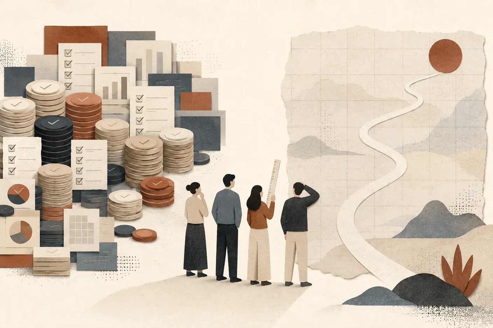

들어가며
책을 집어 들면 대개 목차부터 넘긴다. 그리고 속으로 계산한다. 이걸 끝까지 읽을 시간이 나에게 있나.
미리 말해두면, 이 책은 처음부터 끝까지 읽어야 쓸모가 생기는 종류가 아니다. 필요한 장만 펼쳐도 되게 짰다. 그래서 본문에 들어가기 전에, 어디를 어떻게 펼치면 되는지부터 짚어두자.
하나만 먼저 밝혀두는 편이 낫겠다. 이 책에 실린 자는 성숙도 모델을 만들자고 시작한 물건이 아니다. 구성원들이 AX 과제를 하다가 어디서 막히는지, 그래서 조직이 무엇을 더 깔아줘야 하는지를 찾으려고 여정 전체를 빠짐없이 훑어본 것이 먼저였다. 단계와 등급은 그 항목들을 정리하다 보니 나온 형태다. 그러니 낮은 단계가 나와도 그건 구성원이 부족하다는 뜻이 아니다.
누가 펼치면 좋은가
이 자를 쥐어주고 싶은 사람은 정해져 있다. AX를 말로 논하는 사람이 아니라 실제로 굴려야 하는 중간 리더다.
위에서 물어볼 때마다 같은 장표를 숫자만 바꿔 다시 만들고 있다면, 그 반복이 슬슬 버겁다. 잘 되고 있다고 답하고 회의실을 나왔는데 그 대답이 하루 종일 개운치 않다면, 이 책은 바로 그 자리에 서 있는 사람을 위한 것이다.
경영진과 실제로 만드는 사람도 읽을 수 있게 층을 나눠뒀다. 각 장에는 「다음 보고에서 쓸 것」이 붙어 있고, 그 아래에는 손을 직접 대야 하는 사람을 위한 절차와 질문이 있다. 같은 장을 세 사람이 서로 다른 깊이로 읽을 수 있게 만든 셈이다.
담론이 아니라 자(尺)를 판다
AI가 무엇을 바꾸는가에 대한 이야기는 이미 많다. 좋은 글도 많다. 다만 그런 글은 읽고 나면 끄덕이게 되고, 끄덕인 다음에는 책장에 꽂힌 채 손이 잘 안 간다. 좋았다는 기억은 남는데 월요일 아침에 달라지는 건 없다.
그래서 여기서는 담론 대신 자를 하나 건넨다. 우리 조직이 지금 어디쯤인지 재고, 재고 나면 다음 한 걸음을 고르는 도구다. 읽고 공감하는 책이 아니라 재보고 처방받는 책으로 만들고 싶었다. 그러니 밑줄보다 점수표에 먼저 손이 가도 괜찮다.
어떻게 읽을 것인가 — 세 가지 길
그렇다면 어디부터 펼치는 게 좋을까? 길은 세 갈래다. 지금 자기 사정에 맞는 길을 하나 고르자.
급하면 8장부터 12장까지로 바로 가자. 여섯 개 축을 하나씩 진단하고 처방하는 대목이다. 우리 조직에서 지금 막혀 있는 축을 골라 그 장만 읽어도 된다. 앞을 안 읽었다고 말이 안 통하게 쓰지는 않았다. 처방이 여럿 나와서 무엇부터 손댈지 고민되면 13장을 이어 읽자. 고르는 요령이 거기 있다.
모델의 근거가 궁금하면 1장부터 7장까지 순서대로 읽자. 왜 이렇게 재기로 했는지, 이미 나와 있는 자들과 무엇이 다른지, 축과 단계를 어떤 기준으로 갈랐는지가 거기 있다. 근거를 모르는 채로 쥔 자는 결국 오래 신뢰하기 어렵다.
경영진이라면 각 장의 「다음 보고에서 쓸 것」만 이어 읽어도 된다. 그것만 붙여 읽어도 논지가 선다. 그러라고 각 항목에 번호를 붙여뒀다.
어느 길로 가든 마지막 두 장은 한 번 훑어두는 편이 낫다. 혼자 재면 안 되는 이유가 14장에 있고, 이 자가 언제 망가지는지가 15장에 있다. 재는 일보다 재고 난 다음이 더 어렵다는 걸 아는 사람이라면 그쪽부터 펼쳐도 좋다.
그리고 30문항은 부록 A에 있다. 설명은 됐고 당장 재보고 싶다면 거기부터 펼쳐도 좋다. 15분이면 된다. 웹으로 하는 편이 편하다면 axmm-check.vercel.app에서 같은 문항을 답할 수 있다. 채점을 대신해주고, 여럿이 답한 결과를 대조하는 일도 훨씬 쉬워진다. 자세한 건 부록 B에 적어두었다.
지금 상황에서 펼칠 곳
| 지금 필요한 것 | 먼저 펼칠 곳 | 이어서 볼 곳 |
|---|---|---|
| 막힌 축의 처방이 급하다 | 8~12장 | 우선순위를 고르는 13장 |
| 모델의 근거와 설계가 궁금하다 | 1~7장 | 기존 모델을 해부한 부록 C |
| 경영 판단에 필요한 핵심만 읽고 싶다 | 각 장의 「다음 보고에서 쓸 것」 | 함께 재는 14장과 오용을 막는 15장 |
| 지금 바로 조직을 재보고 싶다 | 부록 A의 서른 문항 | 화면 안내인 부록 B |
약속하지 않는 것
대신 미리 말해둘 것이 두 가지 있다.
첫째, 이 책은 정답을 주지 않는다. 성숙도 모델은 자지 목적지가 아니다. 자가 알려주는 건 지금 서 있는 자리와 그다음에 놓인 눈금까지고, 어디로 갈지는 우리가 정한다. 우리 조직 사정을 알 리 없는 책이 그것까지 정해준다면 오히려 그쪽이 이상한 일이다.
둘째, 이 자도 완성본이 아니다. 실제로 써보며 드러난 어긋남이 다음 판의 근거가 된다. 문항이 우리 조직과 맞지 않을 때 어떻게 다룰지는 에필로그에서 다시 이야기한다.
이 자가 어디서 나왔는지는 바로 이어지는 도입부에서 설명한다. 개발 프로세스의 성숙도를 재던 10년과 AX를 직접 굴린 시간이 겹친 자리다.
나는 이 게임을 안다
한 서바이벌 드라마의 첫 게임을 떠올려보자. 참가자들이 영문도 모른 채 운동장에 서 있는데, 노인 하나만 혼자 반가운 얼굴이다. 어릴 때 하던 그 놀이였기 때문이다. 규칙을 알고, 어떻게 움직여야 하는지도 알아서 그는 웃는다.
그런데 그 게임은 지면 죽는 게임이었다. 규칙은 어릴 적 그대로인데, 판돈만 달라져 있었다.
나는 그 노인의 표정을 이해한다. 10년 전에 이미 이 게임을 해봤기 때문이다. 조직의 성숙도를 재고, 등급을 매기고, 다음 단계로 올라가는 개선 계획을 세우는 일. CMMI와 TMMi라는 이름으로 나는 그 일을 오래 했다. 그래서 요즘 쏟아지는 AI 성숙도 모델들의 목차를 보면 솔직히 반갑다. 다섯 단계, 영역별 평가, 레벨마다 붙는 실천 항목. 다 아는 문법이다.
반가움이 자산이 될 때와 함정이 될 때
그런데 이 반가움을 그대로 믿어도 될까? 문제는 그 반가움이 두 갈래로 갈린다는 데 있다.
게임을 알아본 것이 자산이 되는 경우가 있다. 이 게임이 어떻게 굴러가는지뿐 아니라 어떻게 망하는지까지 알기 때문에, 이번엔 다르게 짜는 경우다. 함정이 되는 경우도 있다. 아는 게 반가운 나머지 옛날 판을 그대로 들고 와서, 옛날처럼 망하는 경우다. 익숙한 틀은 손에 잘 잡히기 때문에, 함정 쪽이 훨씬 편하고 빠르다. 이번에는 전자를 택했다. 적어도 설계만큼은 옛날 판을 그대로 가져오지 않기로 했다.
그러니 자격 증명부터 하는 대신 실패담부터 꺼내는 편이 낫겠다. 성숙도 모델 자체가 나빴던 게 아니다. 재는 행위에 등급이 붙는 순간 게임이 시작됐다. 그 게임이 조직을 망가뜨리는 방식은 다섯 가지였다.
먼저 등급이 목적이 된다. 개선하려고 재는 게 아니라 등급을 따려고 재기 시작한다. 그러면 문서가 두 벌이 된다. 실제로 일할 때 쓰는 문서와 심사에 보여줄 문서가 갈라지고, 후자를 만드는 데 몇 달이 들어간다. 그렇게 등급을 따고 나면 어떻게 될까? 심사가 끝난 뒤 실제 일하는 방식이 오래 남지 않는 장면도 여러 번 봤다.
게다가 이 과정은 비쌌다. 컨설팅비와 심사비를 감당할 수 있는 조직만 했고, 정작 체계가 절실한 작은 조직은 시작조차 못 했다. 다섯 번째가 제일 뼈아프다. 컨설턴트가 떠나고 나면, 조직에는 다시 잴 줄 아는 사람이 남지 않았다.
이 다섯 장면을 나는 현장에서 반복해서 봤다. 억울한 건, 그 조직들이 게으르거나 무능해서 그렇게 된 게 아니라는 점이다. 다들 성실했다. 다만 등급이라는 목표가 걸리는 순간, 성실함이 향하는 방향이 슬쩍 틀어졌을 뿐이다. 심사가 끝나고 등급은 올라갔는데 일하는 방식은 어제와 똑같을 때, 그 뒷맛은 꽤 찜찜하다. 그리고 지금, 같은 문법의 모델들이 AI라는 이름을 달고 다시 오는 중이다.
다섯 번의 실패에 다섯 개의 답을 붙였다
잠시 이런 상황을 떠올려보자. 위에서는 “그래서 우리 AX가 지금 어디쯤이냐”는 질문이 내려오고, 아래에서는 “뭐부터 하면 되냐”는 질문이 올라온다. 뭔가 하고는 있는데 어디까지 왔는지 한 문장으로 말할 수가 없어 답답하다. 분기 보고에 성과를 뭐라고 적어야 할지 몰라 막막하다. 이럴 때 등급 하나가 그 답답함을 걷어내 줄 것 같아 손이 가는 건 자연스럽다.
바로 그 손길이 10년 전에도 있었다. 그렇다면 이번에는 무엇을 다르게 해야 할까? 답은 멀리 있지 않다. 망한 방식을 하나씩 거꾸로 뒤집으면 된다. 그래서 이 모델은 다섯 개의 실패에 하나씩 답을 붙여 설계했다.
등급이 목적이 되는 걸 막으려면, 등급을 자랑거리로 만들지 않으면 된다. 그래서 인증도 배지도 순위표도 만들지 않는다. 진단이 끝났을 때 주인공은 등급 숫자가 아니라 다음 한 걸음이다.
문서가 두 벌이 되는 걸 막으려면 증거의 정의를 바꿔야 한다. 증거란에는 이미 있는 것만 지목하자. 진단을 위해 새로 만든 문서는 증거가 아니다. 진단 준비에 야근이 생긴다면 그 진단은 이미 실패한 것이다.
따고 나면 원복하는 문제에는 최고 단계의 정의로 답했다. 마지막 단계는 ’도달’이 아니라 되돌아옴이다. 정상에 서 있는 상태가 아니라, 미끄러졌을 때 되돌아오는 능력을 잰다. 이 차이가 최고 단계의 성격을 바꾼다.
비싸서 소수만 하는 문제에는 값으로 답했다. 무료 웹, 15분, 심사관 없음. 셀프 점검을 택한 진짜 이유가 여기 있다. 오늘 오후에, 혼자서, 결재 없이 해볼 수 있어야 한다.
잴 줄 아는 사람이 남지 않는 문제에는 공개로 답했다. 진단이 짚어낸 처방을 한 개도 빼지 않고 싣는다. 컨설턴트를 부르지 않고도 읽고 그대로 실행할 수 있게 하려는 것이다. 진단이 끝난 뒤 조직에 무엇이 남아야 할지 생각해보자. 리포트 한 장이 아니라, 다음번에도 스스로 잴 수 있는 사람이다.
다섯 실패를 뒤집은 설계
| 예전에 망한 자리 | 이번에 붙인 답 | 진단 뒤 남겨야 할 것 |
|---|---|---|
| 등급이 목적이 된다 | 인증·배지·순위표를 만들지 않는다 | 다음 한 걸음 |
| 심사용 문서가 따로 생긴다 | 오늘 이미 있는 증거만 센다 | 실제로 쓰는 자료 |
| 심사 뒤 원래대로 돌아간다 | 마지막 단계를 ’도달’이 아니라 ’되돌아옴’으로 본다 | 다시 잴 수 있는 주기 |
| 비용 때문에 소수만 참여한다 | 무료 웹·15분·심사관 없음으로 줄인다 | 결재 없이 시작할 수 있는 진단 |
| 컨설턴트가 떠나면 잴 사람이 없다 | 문항과 처방을 전부 공개한다 | 다음에도 스스로 잴 사람 |
그래서 이 자를 이렇게 만들었다
여기서 한 가지 의문이 생긴다. 심사를 없앤 건 그저 편하자고 한 일 아닐까? 아니다. 심사를 없앤 건 편의가 아니라 설계다.
등급을 남에게 증명해야 하는 순간 게임이 시작된다는 걸, 나는 10년 동안 그 판 안에서 지켜봤다. 그러니 이 자(尺)는 누구에게 보여주기 위한 물건이 아니다. 나와 내 조직이 지금 어디에 서 있는지를 스스로 확인하고, 다음 한 걸음을 고르기 위한 물건이다.
규칙을 안다는 건 여전히 유리한 일이다. 다만 판돈이 달라졌다는 사실을 잊지 말자. 그렇다면 왜 지금 그 자가 필요한지부터 살펴보자.
1장. 다들 하고 있는데, 아무도 어디쯤인지 모른다

분기 AX 추진 현황을 띄운 회의실. 화면에는 도입한 도구 몇 종, 교육을 이수한 인원 몇 명, 착수한 과제 몇 건이 빠짐없이 적혀 있고 전부 작년보다 늘었다. 발표가 무난하게 끝나갈 때 누군가 자료를 덮으며 묻는다.
“그래서 우리가 지금 어디쯤 온 겁니까?”
이 질문 앞에서 잠깐 말문이 막혀본 적이 있다면, 이 책은 바로 그 몇 초를 위해 쓰였다. 자료에는 숫자가 가득한데 정작 그 질문에 갖다 댈 문장이 없다. 이상한 일이다. 왜 그럴까?
어디쯤이냐는 질문에 우리가 내놓는 답
우리가 준비해 간 답을 하나씩 뜯어보자. 도구 몇 종, 교육 몇 명, 과제 몇 건. 이 숫자들의 공통점이 보이는가. 전부 무엇을 했는가에 대한 답이다. 활동의 양이지 위치가 아니다.
걸음 수를 세는 일과 지도 위에 점을 찍는 일은 전혀 다르다. 만 보를 걸었다는 사실은 방향이 맞았는지도, 얼마나 남았는지도 말해주지 않는다. 우리가 분기마다 성실하게 채워 넣는 표는 대체로 걸음 수 쪽이다.
위치를 말하려면 두 가지가 필요하다. 좌표계, 그리고 그 위에 나를 찍는 기준. 그런데 앞에서 본 활동 지표만으로는 둘 다 알 수 없다. 활동 기록만 두껍게 쌓여 있을 뿐이다. 그래서 분기 보고서에서 가장 오래 붙잡고 있게 되는 건 대개 마지막 한 줄이다. “따라서 우리는 지금 ○○ 단계에 있다”를 쓸 수가 없어서, 결국 “지속 확대해 나가겠다”로 문장을 닫는다. 이 문장을 쓸 때마다 뒷맛이 개운치 않다. 틀린 말은 아닌데, 아무것도 말하지 않은 문장이라는 걸 쓰는 사람이 제일 잘 알기 때문이다.
앞서 말한 위아래의 두 질문도 결국 같은 자리에서 나온다. 위에서 오는 질문과 아래에서 오는 질문이 서로 다른 것 같지만, 둘 다 “우리가 지도 어디에 있느냐”를 묻고 있다. 지도가 없으니 어느 쪽에도 답을 못 한다. 답을 몰라서가 아니다. 답을 적을 칸이 없어서다.
뒤처진 게 아니라 다수다
여기서 마음이 좀 무거워졌다면 잠깐 내려놓아도 좋다. 숫자를 하나 보고 가자.
MIT CISR이 721개 기업을 조사해 기업의 AI 성숙도를 네 단계로 나눈 적이 있다. 1단계는 실험하고 준비하는 단계, 2단계는 파일럿과 역량을 쌓는 단계, 3단계는 전사로 산업화하는 단계, 4단계는 AI가 의사결정 전반에 스며든 단계다. 각 단계에 몇 퍼센트가 있었을까. 1단계 28퍼센트, 2단계 34퍼센트, 3단계 31퍼센트, 4단계 7퍼센트였다.1
앞의 두 단계를 더해보자. 62퍼센트다. 조사에 응한 기업의 열에 여섯이 아직 실험하거나 파일럿을 돌리는 중이었다.
우리 조직이 아직 실험 단계 같다면, 뒤처진 게 아니라 다수다. 다른 회사 사례 발표를 보고 있으면 우리만 유독 굼뜬 것 같아 조바심이 난다. 하지만 사례 발표와 721개 기업의 분포는 다른 표본이다. 적어도 이 조사만 놓고 보면 실험·파일럿 단계가 예외는 아니다.
그런데 위안은 딱 거기까지다
여기서 안도하고 책을 덮으면 곤란하다. 같은 조사에 훨씬 중요한 대목이 하나 더 있다.
1~2단계 기업은 재무성과가 업계 평균 이하였고, 3~4단계 기업은 업계 평균을 웃돌았다.2 그렇다면 그 선은 어디에 그어져 있을까. 하필 2단계와 3단계 사이다. 62퍼센트라는 다수의 무리와 그 바깥 사이에, 정확히 돈의 선이 지나간다.
다수에 속해 있다는 사실은 위로가 되지만 목표가 될 수는 없다. 무리 안에 있는 편이 마음은 편한데, 그 무리 전체가 평균 이하에 서 있다. 잊지 말자. 다수라는 건 안전하다는 뜻이 아니다.
도구를 깐다고 성숙해지지 않는다
그렇다면 답은 간단해 보인다. 더 좋은 도구를 더 빨리 깔면 되지 않을까? 지금 시장에는 작년에 없던 물건이 매달 나온다. 예산을 조금 더 쓰고 최신 도구를 한 벌 더 얹으면 저 선을 넘을 것도 같다.
정말 그럴까. 숫자를 하나 더 보자.
Cisco는 몇 해째 기업의 AI 준비도를 조사해 최상위 그룹을 따로 분류해왔다. 그 최상위 그룹이 전체에서 차지하는 비율은 13퍼센트다. 그리고 이 비율은 3년째 같은 자리에 고정돼 있다.3
지난 3년 동안 도구가 어떻게 달라졌는지 떠올려보자. 비교할 수 있는 수준이 아니다. 성능도, 가격도, 쓰기 쉬운 정도도 전부 좋아졌다. 이 조사가 재는 것은 성숙도가 아니라 준비도지만, 둘이 묻는 항목은 상당히 겹친다. 그러니 도구 개선만으로 조직 준비도가 따라 올라갔다면 최상위 비율도 움직였을 법하다. 그런데 조사에서 그 비율은 3년째 13퍼센트였다. 왜 그럴까?
같은 조사에서 최상위 그룹과 나머지 전체의 격차를 보면 답이 어렴풋이 보인다. 명확한 AI 전략을 가진 비율이 최상위는 99퍼센트인데 전체는 58퍼센트다. 직원이 필요한 AI 숙련도를 갖췄다고 답한 비율은 75퍼센트 대 16퍼센트다. 그리고 이 항목이 가장 눈에 걸린다. 에이전트의 행동을 가드레일과 실시간 모니터링으로 통제할 수 있다고 답한 비율이 84퍼센트 대 24퍼센트였다.4
이 목록에 도구 이름이 하나도 없다는 점을 눈여겨보자. 전략, 숙련도, 가드레일, 모니터링. 전부 도구 구매만으로 해결되지 않는 것들이다. 가드레일과 모니터링 도구는 살 수 있어도, 무엇을 기준으로 어떻게 쓸지는 조직이 정하고 합의해야 한다. 도구는 매년 좋아지는데 성숙한 조직의 비율이 늘지 않는 이유가 여기 있다. 도구를 깐다고 성숙해지지 않는다.
한 걸음 더 들어가보자. 어렵게 올라간 조직은 그 자리를 지킬까? Gartner 조사에 따르면 성숙도가 높은 조직조차 AI 프로젝트를 3년 이상 운영 상태로 유지하는 비율이 45퍼센트에 그쳤다. 성숙도가 낮은 조직은 20퍼센트였다.5 높은 성숙도에서도 프로젝트를 3년 이상 운영 상태로 유지한 비율이 절반에 못 미쳤다는 관찰이다.
작년에 잘 돌던 것이 올해 열어보니 아무도 쓰지 않고 있는 걸 발견할 때의 그 기분을 떠올려보자. 꽤 아찔하다. 만든 사람은 부서를 옮겼고, 왜 그렇게 만들었는지 아는 사람이 남아 있지 않다. 그 장면을 개인의 게으름으로만 설명할 수는 없다. 인계와 운영 체계가 있었는지부터 봐야 한다. 도구가 성숙을 만들지 못하는 것과 같은 이유다. 사람과 체계가 남지 않으면, 잘 깔아둔 것도 조용히 꺼진다.
세어보면 다 있는데, 대보면 위치가 없다
여기까지는 남의 숫자다. 그렇다면 실제로 한 조직을 항목 단위로 놓고 대보면 무엇이 나올까. 어느 조직인지는 중요하지 않다. 놀랍도록 비슷한 그림이 반복해서 나오기 때문이다.
가장 먼저 눈에 띈 건 배우는 수단은 꽤 갖춰져 있다는 사실이었다. 교육 과정이 있고, 학습을 지원하는 장치도 있고, 사람들이 실제로 이수한다. 생각해보면 당연하다. 교육은 조직이 가장 먼저 만드는 것이다. 눈에 보이고, 인원으로 세기 쉽고, 만들자고 했을 때 반대하는 사람이 없다.
비어 있는 자리는 죄다 그 뒤였다. 만든 것을 어디에 올려 굴릴지, 다른 시스템에 어떻게 붙일지, 담당자가 바뀌면 누구에게 넘길지, 잘 돌아가는지 무엇으로 확인할지. 만드는 데서 막히는 게 아니라 만든 다음에서 막혀 있었다.
이것도 가만히 보면 이유가 있다. 만드는 일은 의지 있는 개인 한 명이 해낼 수 있다. 도구를 붙잡고 주말을 갈아 넣으면 뭔가가 나온다. 그런데 만든 다음의 일들은 성격이 다르다. 어디에 올릴지, 무슨 규격으로 붙일지, 누가 이어받을지는 혼자 정할 수 있는 문제가 아니다. 조직이 정해줘야 개인이 따라갈 수 있다. 그러니까 앞쪽은 열심히 하는 사람이 있으면 채워지고, 뒤쪽은 아무리 열심히 해도 정해주기 전에는 채워지지 않는다. 조직의 성숙도가 개인의 노력으로 메워지지 않는 지점이 정확히 여기다.
그런데 가장 뜻밖이었던 건 세 번째 발견이다. 아예 없는 항목보다 있기는 한데 정해지지 않은 항목이 더 많았다. 도구는 있는데 쓰는 정책이 없고, 경로는 있는데 판단 기준이 없다.
이런 장면을 그려보자. 시스템 하나에 연동을 붙이려는데 전사 규격이 없어서 매번 담당 조직을 찾아 개별로 협의한다. 협의는 대체로 잘 끝난다. 그래서 다음 과제도 똑같이 개별 협의로 시작한다. 세 번째 과제도 마찬가지다. 밖에서 보면 연동이 되고 있으니 문제가 없어 보인다. 난감한 건 바로 이 지점이다. 잘 굴러가는 것처럼 보이는 상태가 사실은 매번 같은 비용을 다시 치르는 상태라는 걸, 항목별로 대보기 전에는 아무도 말해주지 않는다.
이 셋을 나란히 놓으면 처음의 그 질문이 왜 그렇게 어려웠는지가 설명된다. 세어보면 성과가 나온다. 교육 인원도 늘었고 과제 건수도 늘었다. 그런데 자를 대보면 위치가 나오지 않는다. 우리가 지금까지 만든 건 활동 목록이었지 좌표계가 아니었기 때문이다.
그래서 필요한 건 더 좋은 도구가 아니라 자다
정리해보자. 62퍼센트가 아래 두 단계에 몰려 있고, 2단계와 3단계 사이에 돈의 선이 그어져 있고, 최상위 비율은 도구가 좋아지는 동안에도 3년째 그대로다. 이 세 문장이 가리키는 곳은 하나다. 다음에 사야 할 물건이 아니라, 재는 방법이다. 지도가 없다는 말을 여기서 한 번 바꿔 부르자. 지도를 그리려면 먼저 자가 있어야 한다.
거창한 준비가 필요한 일은 아니다. 종이 한 장과 질문 세 개면 지금 자리에서 시작할 수 있다. 뒤에서 만들 자를 손바닥만 하게 줄여놓은 것이라고 보면 된다.
첫째, 우리가 “있다”고 말하는 것들 중에 증거를 지목할 수 있는 게 몇 개인가. 문서든 화면이든 로그든 실제 사례든, 하나를 손가락으로 가리킬 수 있어야 있는 것이다. 가리킬 수 없다면 그건 있는 게 아니라 있다고 믿는 것이다. 막상 손가락을 들었는데 가리킬 데가 없을 때의 그 머쓱함은 겪어보면 꽤 오래 남는다. 이 구분 하나만 넣어도 목록의 길이가 꽤 줄어든다.
둘째, 못 하고 있는 것들 중에 가장 아래층은 무엇인가. 평균으로 위로받지 말자는 뜻이다. 여섯 가지 중 다섯이 3단계고 하나가 1단계라면, 그 조직은 3단계 언저리가 아니라 1단계에서 걸려 있다. 가장 약한 고리가 실제 수준을 정한다.
셋째, 그 약한 고리는 없는 건가, 아니면 안 정해진 건가. 이 둘은 처방이 완전히 다르다. 없으면 만들어야 하니 예산과 시간이 든다. 안 정해진 것이라면 필요한 건 회의 한 번과 결정 한 줄이다. 훨씬 싸고 훨씬 빠르다. 그런데 우리는 둘을 구분하지 않은 채 뭉뚱그려 “아직 안 돼 있다”고 적는다. 그러면 답은 항상 예산 요청이 된다. 회의 한 번이면 풀렸을 일을 다음 해 예산까지 기다리게 되는 셈인데, 나중에 알고 나면 이게 꽤 허탈하다.
이 세 질문을 오늘 오후에 혼자 던져봐도 좋다. 답이 술술 나오면 다행이고, 막히면 그 막힌 자리가 이미 진단 결과다.
물론 이런 반론이 나올 수 있다. 재는 일 자체가 또 하나의 일거리 아니냐고. 안 그래도 할 일이 밀려 있는데 자를 만들고 대는 데 몇 주를 쓰느니, 그 시간에 과제를 하나 더 돌리는 게 낫지 않겠느냐는 것이다. 충분히 나올 만한 말이고, 사실 이 걱정이 맞는 경우도 있다. 재는 일이 심사가 되고 준비에 야근이 붙는 순간, 그 진단은 이미 비용이지 도움이 아니다. 하지만 방향을 모르는 채로 속도를 올리는 일이 더 비싸다는 것도 사실이다. 그 수치만으로 중단 이유까지 알 수는 없다. 다만 방향을 모른 채 과제 수만 늘리는 것이 답이라고 보기도 어렵다. 그러니 재는 일을 무겁게 만들지 않는 것이 관건이지, 재지 않는 것이 답은 아니다.
다음 보고에서 쓸 것
하나. 실험·파일럿 단계의 조직은 뒤처진 예외가 아니다. 조사 기업의 62퍼센트가 그 자리에 있지만, 재무성과의 경계는 바로 그 다음 단계에 있다.
둘. 도구가 좋아지는 동안에도 최상위 그룹은 3년째 13퍼센트에 머물렀다. 차이를 만든 것은 전략·숙련도·가드레일처럼 결제만으로 살 수 없는 역량이었다.
셋. 다음 보고에서는 도입량 대신 가장 약한 고리가 어디인지, 그것이 없는 것인지 안 정해진 것인지를 묻자. 위치와 처방을 함께 알려주는 질문이다.
마무리
지금 우리가 겪는 답답함의 정체는 실력 부족이 아니라 좌표계의 부재다. 열심히 걷고 있는데 지도가 없어서 어디까지 왔는지 말을 못 하는 상태다. 그리고 그 지도는 도구 회사가 만들어주지 않는다. 도구는 걸음을 빠르게 해줄 뿐이다.
그렇다면 자를 아예 처음부터 새로 깎아야 할까? 다행히 그렇지는 않다. 이미 여러 곳에서 자를 만들어 내놓았고, 그중에는 아주 잘 만든 것도 있다. 다만 그 자들이 공통으로 비워둔 자리가 있다. 다음 장에서 그 자들을 하나씩 살펴보고, 무엇이 비어 있는지 함께 확인해보자.
2장. 이미 나와 있는 자들, 그리고 그들이 비워둔 자리
자를 만들어보기로 하고 자료를 뒤지던 며칠째, 124쪽짜리 AI 성숙도 모델을 만났다. 다섯 단계, 여덟 개 차원, 스물일곱 개 역량영역. 발표는 2026년 6월이고, 낸 곳은 카네기멜런대학교 소프트웨어공학연구소다. 줄여서 SEI라고 부르는 그곳, CMMI를 만든 바로 그 조직이다.6
그 대목에서 손이 멈춘다. 나에게 이건 남의 소식이 아니다. 10년 동안 내가 들고 다니던 자를 만든 사람들이, AI 시대에 맞춰 새 자를 깎아서 내놓은 것이다. 그렇다면 하나 더 만들 이유가 남아 있기는 할까?
답을 내려면 일단 그 자를 제대로 들여다봐야 했다. 같이 들여다보자.
규모로 겨루자면 승부는 시작 전에 끝나 있다
먼저 이 모델이 어떻게 만들어졌는지부터 보자. 기존에 나와 있던 AI 성숙도 시도를 100건 넘게 훑었고, 그중 서른여섯 개 이상은 정밀하게 뜯어봤다. 임원 스무 명에서 스물다섯 명을 인터뷰하고, 실무자 약 600명에게 설문을 돌렸다. 그리고 포춘 500대 기업 여러 곳에서 실제로 파일럿을 굴려 검증했다.7
이 목록을 처음 읽었을 때의 기분을 솔직히 적어두는 편이 낫겠다. 김이 좀 빠졌다. 혼자 노트에 축을 그려가며 몇 주를 보낸 사람 앞에 저런 이력서가 놓이면, 이게 겨뤄볼 만한 판인가 싶어진다. 규모로 붙자면 이 승부는 시작 전에 끝나 있다.
그러니 그 이야기부터 하고 넘어가자. 잘 만든 모델이다. 40년 동안 성숙도 모델을 만들어온 조직이 그 자산을 그대로 얹어 만들었고, 읽어보면 그게 문장마다 드러난다. 역량영역마다 “이런 산출물이 있으면 그 역량이 있다고 볼 만하다”는 예시를 붙여둔 것도 그렇고, 바로 그 옆에 산출물과 증거가 일대일로 대응하지는 않는다고 못 박아 둔 것도 그렇다.8 체크리스트를 채우는 놀이로 변질됐던 과거를 만든 장본인들이, 자기 문서 안에 그 경고를 먼저 써넣은 것이다. 이건 아무나 쓸 수 있는 문장이 아니다.
인정하지 않고 시작하면 뒤에 할 이야기가 전부 헐거워진다. 그러니 “그들이 부족하다”는 말로는 한 줄도 나아가지 말자.
게다가 하려던 말까지 거의 같았다
더 곤란한 건 그다음이었다. 규모만 앞선 게 아니라, 하려던 말까지 비슷했다. 원문에 이런 문장이 있다.
진짜 AI 성숙도는 조직이 얼마나 많은 AI를 배포했느냐가 아니라, 신뢰할 수 있고 회복력 있는 역량과 엄정한 엔지니어링 실천, 그리고 사업 성과에 정렬된 거버넌스를 만들어낼 능력으로 측정된다.9
이 문장을 읽고 한참 앉아 있었다. 얼마나 깔았느냐가 아니라 믿을 만하게 만들 능력이라니, 우리가 앞 장에서 도구 이야기를 하며 짚었던 바로 그 지점이다. 앞서 나간 사람이 같은 자리를 먼저 찍어놓은 걸 발견하면 기분이 묘해진다. 억울한 것 같기도 하고 반가운 것 같기도 하다.
그렇다면 이 문장을 어떻게 다뤄야 할까? 못 본 척 숨기는 방법도 있다. 하지만 그러지 말자. 오히려 앞에 내세우는 편이 낫다. 성숙도 모델의 원조를 만든 조직이 독립적으로 같은 결론에 도달했다면, 그건 우리 주장이 흔들린다는 뜻이 아니라 그 방향이 맞다는 두 번째 증거다. 서로 다른 두 곳이 같은 곳을 가리키면 논증은 약해지는 게 아니라 단단해진다.
그러니 이 책이 만들려는 자는 “우리가 처음”이라고 말하는 물건이 아니다. “우리는 다르게 본다”고 말하는 물건이다. 그렇다면 정확히 어디가 다른가. 그걸 찾느라 문서를 한 번 더 읽었고, 두 번째 읽기에서 예상 못 한 걸 발견했다.
세어보다가 생각이 바뀌었다
두 번째로 읽을 때는 내용이 아니라 배치를 봤다. 이 모델은 역량영역 하나하나가 특정 단계에 걸려 있는 구조다. 그러니까 “이 역량영역의 목표를 다 채워야 그 차원이 몇 단계에 도달한다”는 식으로, 역량영역마다 소속 단계가 붙어 있다.
그래서 그냥 세어봤다. 단계가 명시된 스물다섯 개가 어디에 걸려 있는지.
1단계에 둘. 2단계에 열하나. 3단계에 열. 4단계에 하나. 5단계에 하나.10
세어놓고 숫자를 한참 들여다봤다. 가운데 두 단계에만 스물하나, 전체의 84퍼센트가 몰려 있다. 위의 두 단계에는 각각 하나씩만 있다. 다섯 단계짜리 모델인데 무게는 아래쪽 절반에 다 실려 있는 셈이다. 며칠 동안 문장을 따라 읽을 때는 보이지 않던 것이 반나절 손으로 세자 드러났다. 이때부터는 개별 항목보다 분포 자체를 읽어야 했다.
분포가 곧 세계관이다
이 분포는 모델의 무게가 어디에 실려 있는지를 보여준다. 초기·중간 단계의 역량을 특히 촘촘하게 다룬다. 왜 그렇게 배치했는지까지 숫자만으로 단정할 수는 없다.
이렇게 읽으면 앞뒤가 맞는다. 데이터를 정비하고, 엔지니어링 역량을 세우고, 거버넌스를 걸고, 테스트를 붙이는 일. 이게 전부 2단계에 몰려 있다. 그다음 워크플로를 다시 짜고 측정 체계를 붙이는 일이 3단계다. 여기까지 오면 확장과 미래대비는 각각 역량영역 하나면 족하다고 본 것이다. 상위 단계보다 초기 구축에 더 많은 역량영역을 배치한 구조다.
이 세계관이 가장 선명하게 드러나는 자리가 검증이다. SEI 모델에도
검증을 다루는 역량영역이 분명히 있다. 이름은
Test and Evaluation이고, 내용도 만만치 않다. 데이터
드리프트나 환각처럼 AI 특유의 문제를 잡아내는 전문 테스트를 정의하라고
하고, 매번 같은 답이 나오지 않는 기능의 출력을 어떻게 기준선화할지
정하라고 하고, 생성형 AI의 결과까지 포함해 테스트를 자동화할 수 있게
하라고 한다.11 읽어보면 우리가 실제로 부딪히는
문제들이 거의 다 들어 있다.
그런데 이 역량영역이 걸려 있는 자리가 2단계다.
무슨 뜻일까? 검증은 배포하려면 당연히 갖춰야 하는 기초 위생이라는 뜻이다. 손 씻고 수술실에 들어가는 것과 같다. 갖췄다고 성숙한 게 아니라, 안 갖추면 아예 시작하면 안 되는 것.
여기서 한 걸음 물러서자. 이 배치가 틀렸다고 말하려는 게 아니다. 배치란 만든 사람들이 본 조직의 모습을 그대로 옮겨놓은 것이고, 그렇게 생긴 조직은 세상에 아주 많다.
1장에서 확인한 공백은 기초보다 만든 다음에 몰려 있었다. 이 차이만 옆에 놓자. SEI의 배치는 앞쪽이 아직 안 채워진 조직을 정확히 재지만, 이미 만들 줄 아는 조직이 그다음에서 멈췄을 때는 다른 눈금이 필요할 수 있다. 여기서는 결론을 서두르지 않고, 모델의 무게가 기초에 실려 있다는 사실까지만 확인해두자.
그들에게 아예 없는 것 둘
여기까지는 같은 것을 다르게 배치한 이야기다. 그런데 배치의 차이가 아니라 아예 없는 것도 있었다. 원문 전체를 검색해서 확인한 것이 둘이다.
첫째, 예산과 자원을 다루는 축이 없다. 대응하는 역량영역이 아예 없고, 예산이라는 단어는 “자원에는 인력과 자금이 포함된다” 정도의 부속 언급으로 딱 한 번 나온다.12
둘째, 담당자가 바뀔 때 어떻게 넘기는지를 묻지 않는다. 인계, 승계, 소유권 이전에 해당하는 표현이 124쪽 어디에도 없다.13
왜 이 둘이 빠졌는지는 원문이 설명하지 않는다. 포춘 500대 기업을 포함해 검증했다는 사실만으로 예산과 인계가 자동 해결된다고 단정할 수도 없다. 여기서는 이유를 추측하지 말고, 두 항목이 독립 역량으로 다뤄지지 않는다는 사실만 확인하자.
그런데 우리 자리에서는 어떤가. 이런 장면을 떠올려보자. 파일럿이 잘 끝나서 이제 실제로 운영에 올리려는데, 그때부터 쓸 자원을 어디서 어떻게 받아야 하는지가 정해져 있지 않다. 안내 문서는 있는데 그건 신청하는 법이고, 계속 쓸 몫을 배분하는 규칙은 아무 데도 없다. 그래서 매년 취합과 삭감만 반복된다. 혹은 이런 장면. 잘 돌던 것을 만든 사람이 부서를 옮긴다. 인수인계 문서는 형식대로 넘어갔는데, 왜 그렇게 만들었는지는 그 문서에 없다. 반년 뒤에 문제가 생기면 아무도 손을 못 댄다.
두 장면은 이 책이 재려는 문제에 정확히 들어온다. 그런데 124쪽짜리 SEI 모델에서도 독립된 눈금으로는 보이지 않는다. 자기 조직에서 제일 아픈 데를 재려고 자를 들었는데 거기에 눈금이 없는 걸 알았을 때, 그 기분은 좀 서늘하다. 일단 빈틈 둘을 찾았다. 지금 손에 쥔 건 거기까지다. 그 자리에 눈금을 새길지 말지, 새긴다면 어떤 이름을 붙일지는 축을 짜는 장에서 정하자.
마지막 빈틈은 규모다
이제 다른 자들도 짧게 짚고 가자. MIT의 연구는 721개 기업 설문을 직접 근거로 둔다. 1장에서 본 그 분포와 재무성과 상관이 거기서 나왔다. 다만 원문이 회원 조직 전용이라 개인이나 작은 조직은 열어볼 수가 없다. 즉 우리는 그 결과를 인용할 수는 있어도, 그 자로 우리 조직을 재볼 수는 없다. Gartner의 모델은 다섯 단계에 일곱 개 기둥으로 잘 짜여 있고 툴킷도 딸려 있지만 유료 구독자만 쓴다. Cisco는 무료 셀프 진단 도구도 열어두고 있다. 다만 성격이 다르다. 그건 남과 비교해서 내가 어디쯤인지 알려주는 벤치마크지, 그래서 다음에 뭘 하라는 처방이 아니다.14
그리고 SEI 모델로 돌아오면, 마지막 빈틈이 남아 있다. 규모다.
124쪽에 여덟 개 차원, 스물일곱 개 역량영역, 그 아래 목표와 실천 항목이 수백 개다. 유료도 아니고 심사를 강제하지도 않으니 접근만 놓고 보면 열려 있다. 그런데 열려 있다는 것과 쓸 수 있다는 건 다른 이야기다. 팀장 한 명이 오후에 혼자 이걸 다 돌릴 수 있을까? 124쪽과 27개 역량영역을 15분 안에 대조하기는 어렵다. 그러면 자연스럽게 사람을 붙이게 되고, 사람을 붙이면 일정이 생기고, 일정이 생기면 준비 자료를 만들게 된다. 그리고 준비 자료를 만들기 시작하는 순간, 도입부에서 말한 그 실패가 다시 시작된다.
그래서 30문항, 15분이다. 이건 대충 하자는 뜻이 아니라 설계다. 오늘 오후에 혼자, 결재 없이 끝낼 수 있는 크기가 아니면 애초에 두 번째 진단까지 이어지기 어렵기 때문이다. 한 번 재고 마는 자는 자가 아니다.
SEI 모델의 단계 정의와 여덟 차원, 역량영역의 구성이 궁금하다면 부록 C에 따로 정리해 두었다. 여기서는 논지만 붙들고 가자.
다음 보고에서 쓸 것
하나. SEI 모델은 기존 시도 100건 이상, 실무자 약 600명 설문과 포춘 500대 기업 파일럿을 거친 좋은 자다. AXMM은 그것을 무시하고 새로 시작한 모델이 아니다.
둘. 다만 무게중심이 다르다. 단계가 명시된 역량영역의 84퍼센트가 가운데 두 단계에 몰려 있고 검증도 2단계에 있다. 자원·비용과 담당자 인계는 독립 항목으로 다루지 않는다.
셋. 모델을 고를 때는 지난 분기에 가장 오래 붙든 문제 세 개가 그 목차 어디에 들어가는지 대보자. 우리 조직에서 제일 아픈 데를 재지 못하면 좋은 자여도 우리 자는 아니다.
마무리
이 장에서 확인한 걸 한 줄로 줄이면 이렇다. 이미 나와 있는 자들은 잘 만들어졌고, 다만 다른 곳을 보라고 만들어졌다. 우리가 할 일은 그걸 깎아내리는 게 아니라, 그들이 보지 않은 자리에 눈금을 새기는 것이다.
그런데 여기서 마음이 편해지면 곤란하다. 지금까지 우리는 성숙도 모델들끼리 비교했을 뿐이다. 성숙도 모델이라는 물건 자체가 쓸모없다는 비판은 아직 하나도 다루지 않았다. 그리고 그 비판은 꽤 오래됐고, 꽤 날카롭고, 상당 부분 맞다. 단계로 줄 세우는 게 무슨 근거가 있느냐, 등급이 붙는 순간 조작이 시작되지 않느냐, 재고 나서 뭘 하라는 말은 왜 없느냐.
이런 말을 들으면 방어하고 싶어진다. 하지만 자를 내놓는 사람이 그 약점을 먼저 말하지 않으면 결국 다른 사람이 말한다. 그래서 이어지는 장은 성숙도 모델을 변호하지 않고, 오래된 비판 가운데 무엇이 맞는지부터 인정하며 시작한다.
3장. 성숙도 모델은 왜 욕을 먹는가
“우리 AX가 지금 몇 단계쯤인지 한번 재봅시다.” 회의에서 이 말을 꺼냈을 때 어떤 반응이 돌아올지 떠올려보자. 고개를 끄덕이는 사람도 있겠지만, 한쪽에서 표정이 굳는 사람이 대체로 한 명은 있다. 반대 의견을 내지도 않는다. 그냥 팔짱을 낀다.
그 사람은 예전에 이걸 한 번 해봤을 가능성이 높다. 몇 달 동안 문서를 만들었고, 심사를 받았고, 등급이 나왔고, 그 다음에 아무 일도 일어나지 않았다. 나중에 누가 그 시기에 무슨 일을 했느냐고 물으면 대답할 말이 마땅치 않다. 그 몇 달이 통째로 어디론가 사라진 셈인데, 이런 기억은 생각보다 오래 남는다.
나는 그 표정 쪽이 옳다고 본다. 그리고 그 반감은 회의실의 푸념만이 아니다. 학술 문헌도 오래전부터 같은 말을 해왔고, 그 지적들은 대체로 정확하다.15
그렇다면 자를 하나 더 내놓겠다는 사람이 무엇부터 해야 할까? 그 자가 왜 욕을 먹었는지부터 꺼내놓는 편이 낫다. 10년을 이 판 안에 있었던 사람이 비판을 모르는 척하고 넘어가면, 뒤에 이어질 이야기가 전부 흔들린다.
현실은 계단이 아닌데 계단으로 그린다
첫 번째 비판부터 살펴보자. 성숙도 모델은 조직을 계단 위에 세운다. 1단계, 2단계, 3단계. 그런데 실제 조직은 계단 위에 그렇게 얌전히 서 있지 않다.
조직을 하나 그려보자. 보안과 통제는 꽤 촘촘하게 잡혀 있다. 규정도 있고 검토 절차도 돈다. 그런데 만든 것이 성과를 냈는지 재는 장치는 아예 없다. 만드는 능력은 상위권인데 운영으로 넘기는 길이 없어서 담당자가 바뀔 때마다 서비스가 하나씩 조용히 꺼진다. 이 조직은 몇 단계일까?
어떤 답을 내놔도 절반은 거짓말이 된다. “2단계입니다”라고 말하면 보안 쪽 사람들이 억울하고, “4단계입니다”라고 말하면 다음 분기에 서비스가 또 꺼진다. 단계 하나로 조직을 요약하는 순간, 가장 중요한 정보인 불균형이 통째로 지워진다. 비판자들이 납작하다고 말하는 건 이 지점이다.
그래서 AXMM은 조직 단계를 하나만 내놓지 않는다. 여섯 축의 단계를 먼저 나란히 펼친 다음에 조직 전체를 말한다. 그리고 전체를 말할 때 평균을 쓰지 않는다. 여섯 중 가장 낮은 축이 그대로 조직의 단계가 된다. 위에서 그린 조직이라면 결과지 첫 줄에 “보안은 앞서 있고 운영과 측정이 걸려 있다”가 먼저 오고, 그 다음에야 단계 숫자가 온다.
물론 이 대응이 비판을 없애주지는 않는다. 여섯 축도 결국 칸이고, 칸에 넣는 순간 무언가는 잘려 나간다. 다만 칸이 하나일 때보다 여섯일 때 현실이 덜 뭉개진다. 완전히 푸는 대신 덜 틀리는 쪽을 골랐다는 정도로 정직하게 적어두는 편이 낫다.
왜 하필 그 순서인가
두 번째 비판은 더 아프다. 왜 그 순서인지 근거가 없다는 것이다.
2015년부터 2020년 사이에 나온 AI 성숙도 모델 논문 15편을 모아 분석한 문헌고찰이 있다. 이 연구가 내린 진단 중 하나가 “성숙 개념에 대한 이론적 성찰이 대체로 빠져 있다”는 것이었다.16
이게 무슨 뜻일까. 성숙도 모델은 항상 순서를 주장한다. A를 갖춘 다음에 B, B를 갖춘 다음에 C. 그런데 왜 하필 그 순서냐고 물으면 답이 잘 나오지 않는다. 대체로 “그렇게 하는 게 자연스러우니까” 언저리에서 멈춘다. 심하게 말하면 목차의 순서를 인과처럼 보이게 그려놓은 것에 가깝다.
이 대목은 읽을 때마다 뜨끔하다. 10년 전 내가 들고 다니던 모델도 사정이 다르지 않았다. 왜 이 단계 다음에 저 단계냐고 누가 물으면, 나도 “원래 그렇게 정해져 있다”는 말 말고는 내놓을 게 별로 없었다. 그때는 그게 부끄러운 줄도 몰랐다.
같은 연구가 짚은 것이 하나 더 있다. 이 분야에는 표준 용어조차 없다는 것이다. 어떤 모델은 차원이라 부르고, 어떤 모델은 구성요소라 부르고, 또 어떤 모델은 지표나 프로세스 영역이라 부른다. 이름이 제각각이면 두 모델을 나란히 놓고 비교할 수가 없다. 비교할 수 없으면 검증도 누적되지 않는다. 저마다 새 모델을 하나씩 만들어 발표하고, 그것으로 끝나는 구조다.
그렇다면 AXMM의 다섯 단계에는 순서의 근거가 있을까. 두 가지를 근거로 삼았다.
하나는 여정이다. 전작에서 AX 여정을 J-curve로 그렸다. 환호로 시작해 정체를 지나고, 다시 신남이 왔다가 의구심이 오고, 그 다음에 이륙한다. 이건 이론이 아니라 관찰이다. 내가 실제로 만들면서 반복해서 만난 순서다.
둘은 부채의 청구 시점이다. AI를 쓰기 시작하면 세 가지 부채가 쌓인다. 그럴싸한데 틀린 것이 남는 기술부채, 아무도 전체를 모르게 되는 인지부채, 왜 만들었는지가 사라지는 의도부채. 중요한 건 이 셋이 동시에 청구되지 않는다는 점이다. 기술부채는 만들자마자 청구서가 온다. 인지부채는 여러 사람이 굴리기 시작한 다음에 온다. 의도부채는 만든 사람이 자리를 옮긴 뒤에야 온다.
그래서 단계의 순서는 “이 정도는 갖춰야 한다”는 당위가 아니라, “이 시점에 이 부채가 청구되니 그걸 감당할 능력이 여기 있어야 한다”는 인과로 짰다. 검증이 뒤쪽에 놓인 것도 같은 이유다. 만들기만 할 때는 검증이 없어도 티가 안 난다. 여러 사람이 여러 개를 동시에 굴리기 시작하면 그때부터 검증 부재가 병목으로 드러난다.
물론 이것도 완결된 이론은 아니다. 인정하고 가자. 다만 근거를 적어두면 최소한 반박은 가능해진다. 근거가 없는 순서는 반박조차 할 수가 없다.
덧붙이자면 학계가 지적만 한 것도 아니다. 같은 문헌고찰은 단계의 개수가 네 개에서 아홉 개까지 흩어져 있지만 다섯 개가 가장 흔하고 또 권장할 만하다고 정리했다. 너무 잘게 나누면 세부가 흩어져 무엇이 중요한지 보이지 않는다는 이유에서다. 다섯 단계로 간 데에는 그 근거를 그대로 빌렸다. 비판을 받아들이는 것과 도움을 받는 것은 같은 문헌에서 동시에 일어난다.
재는 순간 게임이 시작된다
세 번째 비판은 등급의 게임화다. 재는 행위에 등급이 붙으면 등급 자체가 목적이 된다는 것이다.
이 비판만은 반박하지 않으려 한다. 나는 그 게임을 밖에서 구경한 사람이 아니라 판을 깔던 쪽에 있었다. 반박할 말이 목까지 올라왔다가 도로 내려가는 경우가 있는데, 이게 그렇다.
그렇다면 어떻게 막을 수 있을까. 등급 자체를 없앨 수는 없다. 재려면 눈금이 있어야 하고, 눈금이 있으면 어디쯤인지가 나온다. 없앨 수 있는 건 등급의 유통이다. 그래서 인증도, 배지도, 조직 간 순위표도 만들지 않는다. 증거란에는 이미 있는 것만 지목한다. 남에게 보여줄 자리가 없으면 그 숫자는 판돈이 되지 못한다.
다만 이 방어가 얇다는 것도 알아두자. 사내에서 부서끼리 결과지를 돌려보기 시작하는 순간 그대로 뚫린다. 이건 설계로 완전히 막을 수 있는 문제가 아니라 쓰는 방식의 문제여서, 뒤에 장을 따로 하나 뒀다.
진단서만 주고 처방전은 주지 않는다
네 번째 비판으로 가보자. 진단만 하고 끝난다는 것이다.
앞서 본 문헌고찰의 숫자가 여기서 다시 나온다. 15편 가운데 조직의 상태를 서술하는 데 그친 것이 13편이었고, 개선 로드맵까지 내놓은 처방형은 6편이었다. 저자들의 결론은 개선 로드맵을 제시하는 처방적 모델이 여전히 과소 대표된다는 것이었다. 모델을 어떤 방식으로든 검증해본 비율은 47퍼센트였다. 절반이 안 된다.17
이게 쓰는 사람 입장에서 무슨 뜻인지 생각해보자. 병원에 갔다고 해보자. 검사를 잔뜩 받고 진료실에 들어갔는데 의사가 “2단계입니다”라고 말하고는 그걸로 끝난다. 무엇 때문에 2단계인지, 3단계로 가려면 무엇부터 해야 하는지는 알아서 알아보라고 한다. 그 상태로 병원 문을 나서면 결국 어제 하던 대로 살게 된다. 진단을 받기 전과 달라진 건 진단비 영수증 한 장뿐이다.
그래서 처방을 본체로 삼았다. 문항마다 처방을 하나씩 붙였고, 한 개도 빼지 않고 이 책에 싣는다. 각 처방은 지금 상태가 어떤 모습인지, 왜 거기서 막히는지, 다음 한 걸음은 무엇인지, 됐다는 신호는 무엇으로 확인하는지, 흔히 어디서 넘어지는지를 순서대로 적었다. 컨설턴트를 부르지 않고도 읽고 그대로 해볼 수 있게 하려는 것이다.
그런데 가장 아픈 지적은 따로 있었다
같은 문헌고찰에 문장이 하나 더 있다. 이 연구가 검토한 문헌들에서는 기존 AI 성숙도 모델을 실제 조직에 적용한 연구가 한 건도 확인되지 않았다.18 0건이다.
앞의 세 비판은 설계로 답할 수 있다. 축을 여럿 두고, 순서에 근거를 붙이고, 인증을 만들지 않으면 된다. 그런데 이 지적은 설계로 답할 수가 없다. 아무리 정교하게 만들어도, 써보지 않았으면 그대로 0건에 한 줄을 보태는 것뿐이다.
그래서 순서를 바꿨다. 원래대로라면 책을 먼저 쓰고 진단 도구는 부록쯤에 붙이는 게 훨씬 편하다. 그런데 그렇게 하면 이 책도 “아무도 적용해본 적 없는 모델을 소개하는 문헌”이 한 편 늘어나는 일에 지나지 않는다. 남을 그 잣대로 비판해놓고 자기만 면제받을 수는 없는 노릇이다.
그래서 모델을 먼저 확정하고, 셀프 점검 사이트를 띄워 실제 응답을 받고, 그 다음에 이 책을 쓴다. 자랑하려고 적는 게 아니다. 남의 모델에 이 잣대를 들이댄 이상, 같은 잣대를 자기에게도 대는 것이 순서다.
솔직히 이 순서는 성가시다. 사이트를 띄우고 응답을 기다리는 동안 원고는 멈춰 있다. 응답이 예상과 다르게 나오면 문항을 고쳐야 하고, 문항을 고치면 이미 써둔 장까지 되짚어야 한다. 편한 길은 분명 아니다. 다만 편한 길로 갔다면 이 장을 쓸 자격이 사라진다.
이 모델도 망할 수 있다
여기까지 읽고 나면 이런 생각이 들 수 있다. 그래서 이 모델은 저 비판들을 다 피해 갔다는 건가?
아니다. 이 자도 망할 수 있다. 그러니 언제 망하는지를 먼저 적어두자. 세 가지다.
하나, 진단 결과가 인사 평가나 조직 평가에 붙는 순간이다. 그때부터 응답은 사실이 아니라 협상이 된다. 아무도 자기 축을 낮게 적지 않는다.
둘, 진단을 위해 새 자료를 만들기 시작하는 순간이다. 그때부터 조직의 상태보다 점검표를 채우는 일이 앞선다.
셋, 결과를 받아 놓고 아무것도 하지 않는 일이 반복되는 순간이다. 다음 진단에서는 응답의 성실성을 기대하기 어려워진다. 재는 일이 아무 결과도 낳지 않는다는 경험이 쌓이기 때문이다.
이 셋 중 하나라도 보이면 진단을 잠시 멈추는 편이 낫다. 자를 쓰지 않는 것이 잘못 쓰는 것보다 낫기 때문이다. 잘못 쓴 자는 틀린 위치를 알려주고, 조직의 우선순위를 잘못 잡게 만들 수 있다. 이 이야기는 마지막 장에서 다시 꺼내자.
다음 보고에서 쓸 것
하나. 성숙도 모델에 대한 반감에는 근거가 있다. 현실을 계단으로 단순화하고, 순서의 근거가 약하며, 등급이 목적이 되고, 진단 뒤 처방이 없다는 비판을 먼저 받아들여야 한다.
둘. 결과는 단계 숫자보다 축별 불균형으로 읽고, 평가와 연결하지 않는다. 평가에 붙는 순간 응답은 사실이 아니라 협상이 된다.
셋. 모델을 고를 때는 실제로 몇 개 조직에 적용됐는지 묻자. 적용 근거가 없는 자는 아직 검증된 도구가 아니라 가설에 가깝다.
마무리
성숙도 모델이 욕을 먹은 건 재는 일 자체가 잘못이어서가 아니다. 재고 나서 아무 일도 일어나지 않았기 때문이고, 재는 일이 어느 순간 등급 따는 일로 바뀌었기 때문이다. 비판을 읽다 보면 방어하고 싶어지지만, 이 판에 오래 있었던 사람일수록 방어할 자리가 없다.
그러니 이 자를 만들면서 세운 원칙은 단순하다. 비판을 반박하려 들지 말고 설계로 답하자. 설계로 답할 수 없는 것은 답할 수 없다고 적어두자. 그리고 이 자가 언제 망하는지를 남이 지적하기 전에 우리가 먼저 말해두자.
이제 눈금을 그리기 전에 무엇을 잴지 정해야 한다. 기존 모델들은 전략, 데이터, 거버넌스, 인재처럼 경영의 언어로 축을 나눴다. 위에 보고하기에는 좋은 이름들이지만, 우리 팀이 지난 반년 겪은 일을 넣으려 하면 갈 곳이 없다. 그래서 이 책은 분류표 대신 사람이 실제로 지나가는 순서를 따라 여섯 축을 잡는다.
4장. 여정으로 축을 잡다
눈금을 새기기 전에 정해야 하는 게 하나 있다. 이 자로 무엇을 재느냐가 아니라, 무엇과 무엇을 따로 재느냐다. 키와 몸무게를 한 줄의 눈금에 얹을 수는 없다. 따로 재기로 정하는 순간 눈금이 갈라지고, 그 갈라짐이 곧 그 자의 세계관이 된다.
성숙도 모델에서는 이 결정을 축이라고 부른다. 몇 단계로 나눌지, 어떻게 점수를 매길지 하는 이야기는 전부 그다음이다. 축을 잘못 잡으면 뒤가 아무리 정교해도 엉뚱한 것을 아주 정밀하게 재게 된다. 그렇게 나온 결과지는 촘촘할수록 더 겉돈다. 그러니 축부터 정해보자.
남의 자에는 눈금이 어떻게 나뉘어 있나
이미 나와 있는 자들이 어디를 갈랐는지 이름부터 훑어보자.
SEI는 여덟 갈래로 나눈다. 조직 전략, 인력과 문화, 워크플로 재설계, 리스크와 거버넌스, 데이터, 엔지니어링, 운영, 기술 생태계. 그 아래에 역량영역이 스물일곱 개 더 붙는다는 건 2장에서 봤다.19 Gartner는 일곱 기둥이다. 전략, 제품 포트폴리오, 거버넌스, 엔지니어링, 데이터, 운영모델, 인재·문화.20 Cisco는 여섯 기둥으로 간다. 전략, 인프라, 데이터, 인재, 거버넌스, 문화.21
세 목록을 나란히 놓고 공통점을 찾아보자. 겹치는 이름이 금세 눈에 들어온다. 전략, 데이터, 거버넌스, 인재. 여섯이든 일곱이든 여덟이든 결국 비슷한 것을 비슷하게 자른다. 그런데 여기서 정말 봐야 할 공통점은 이름이 아니다. 나누는 사람이 서 있는 자리다.
전략이 한 칸, 데이터가 한 칸, 인재가 한 칸. 이렇게 자르려면 조직 전체가 한눈에 들어오는 높이에 서 있어야 한다. 전략을 따로 떼어 이야기할 수 있는 사람, 데이터 기반을 한 덩어리로 볼 수 있는 사람, 인재 정책을 한 칸으로 부를 수 있는 사람. 이 칸들은 조직도를 위에서 내려다보며 그은 선이다. 그러니까 세 모델의 진짜 공통점은 이것이다. 전부 경영 관점의 분류다.
물론 흠이 아니다. 애초에 그 자리에 선 사람을 위해 만든 자다. 전사 투자를 결정하고 부문 간 우선순위를 조정하는 사람에게는 이 칸들이 정확히 필요한 서랍이다. 자기 손에 든 예산 항목과 칸 이름이 그대로 맞아떨어지니까.
일하는 사람은 칸을 따라 움직이지 않는다
그렇다면 우리가 만들 자는 누구 손에 들릴까? 위에서는 “어디쯤이냐”는 질문을 받고 아래에서는 “뭐부터 하냐”는 질문을 받는 사람, 그 중간에 낀 팀장이다. 이 사람에게 저 서랍을 그대로 건네면 어떻게 될까?
우리 팀에서 업무 하나를 AI로 바꿔보기로 했다고 해보자. 월요일 아침부터 일이 어떤 순서로 굴러가는지 따라가보자. 먼저 이걸 왜 하는지 팀원들이 납득해야 하고, 납득한 다음에는 만들 줄 알아야 한다. 그래서 배운다. 배우고 나면 무엇을 만들지 정하고 실제로 만든다. 만든 것은 어딘가에 붙이고 올려서 굴려야 쓸모가 생긴다. 굴리기 시작하면 제대로 도는지 재보고 고친다. 그리고 그 전 과정에 두 가지가 계속 따라붙는다. 쓸 자원이 있느냐, 그리고 이렇게 해도 되느냐.
이 사람의 하루 중에 “지금 우리는 데이터 차원에 있다”고 느끼는 순간은 없다. 사람은 칸을 오가는 게 아니라 순서를 밟는다. 앞이 안 되면 뒤가 시작되지 않고, 뒤에서 막히면 앞을 아무리 잘해도 결과가 나오지 않는다.
경영 관점으로 나뉜 진단표를 받아들고 자기 일을 항목에 맞춰보려다 몇 줄 만에 손을 놓아본 적이 있다면 이 감각을 알 것이다. 틀린 질문은 하나도 없는데 우리 팀 이야기가 어느 칸에도 담기지 않는다. 그럴 때 김이 샌다. 답을 몰라서가 아니라, 우리가 실제로 겪은 순서가 그 표에는 없기 때문이다.
여섯 개의 축이 각각 묻는 것
그래서 AXMM은 축을 여정 순서로 잡았다. 여기서 자 이야기에 말 하나를 겹쳐 쓰자. 눈금의 축이 곧 길의 구간이다. 여섯 개의 축은 서랍 여섯 개가 아니라 우리가 실제로 지나가는 길이고, 그래서 이 자를 대면 “우리 조직은 이 길의 어디서 막혀 있나”가 바로 읽힌다. 하나씩 보자.
A. 인식·동기·역량 — 왜 하는가, 그리고 배우기. 길의 첫 구간이다. 경영진이 왜 이걸 하는지 말했고 그 메시지가 실제로 구성원에게 닿았는지, 수준과 직무에 맞는 배울 자리가 상시로 열려 있는지, 그리고 배운 사람이 실제 과제 착수로 넘어가는 길이 있는지를 묻는다. 마지막 질문이 특히 중요하다. 교육 이수 인원은 해마다 늘어나는데 과제 착수 건수는 그대로인 표를 우리도 한 번쯤 본 적이 있다.
B. 기획·개발 — 무엇을, 어떻게 만들까. 만들어볼 환경이 손에 쥐여 있는지에서 시작해, 자기 업무를 쪼개어 어디에 AI를 붙일지 판단하는 수단이 실무에서 쓰이는지로 넘어간다. 그리고 이 축의 한가운데에 무거운 질문이 하나 있다. AX가 할 일의 정의가 문서로 있는가. AI가 요약만 하는지, 스스로 실행까지 하는지, 다른 시스템에 쓰기까지 하는지. 사람과 AI가 어디서 손을 바꾸는지. 이게 정해지지 않으면 그 뒤의 목표도 평가도 정의되지 않는다.
C. 연동·배포·운영 — 붙이고, 올리고, 굴리기. 만든 것을 실제로 돌릴 경로가 있는지, 사내 데이터와 지식에 닿을 수 있는지, 시스템 연동에 전사 규격이 있어 과제마다 개별 협의를 되풀이하지 않는지를 묻는다. 그리고 이 축의 맨 끝에 다른 모델에서 좀처럼 보지 못한 질문이 하나 있다. 만든 사람이 부서를 옮기거나 회사를 떠날 때 인계 절차가 실제로 작동하는가.
D. 평가·측정·개선 — 재고, 고치고, 되돌리기. 만든 것이 제대로 도는지 확인하는 수단이 사람 눈밖에 없는지, 투입만 재고 산출은 못 재고 있는지, 그리고 잰 결과가 개선과 보상으로 되돌아오는지를 묻는다.
여기까지가 순서대로 지나가는 네 구간이다. 그리고 그 전 구간을 세로로 관통하는 축이 둘 더 있다.
I. 자원·비용. 쓸 토큰과 컴퓨팅이 주어지는지, 한도와 신청 방법이 안내돼 있는지, 시범이 아니라 실 운영에 필요한 자원을 어디서 확보하는지, 요청을 접수하고 추적하는 단일 채널이 있는지, 그리고 이것이 정식 예산 항목으로 배분되는지.
J. 보안·거버넌스. 지켜야 할 기준이 있는지, 스스로 판단하고 행동하는 에이전트를 전제로 만든 기준이 따로 있는지, 외부 호스팅과 데이터 반출을 사안마다 개별 협의하지 않아도 되는 전사 정책이 있는지, 그리고 그 점검이 사람의 기억이 아니라 출시 절차에 들어가 있는지. 이 축의 이름을 통제가 아니라 레일로 부르는 이유가 여기 있다. 막는 벽이 아니라 걸어갈 길이다.
여섯을 이어 읽어보자. 왜 하는지 알고, 만들고, 붙여서 굴리고, 재고 고친다. 그 내내 자원과 규칙이 따라붙는다. 이건 분류가 아니라 한 문장으로 읽히는 길이다.
여섯 축 한눈에 보기
| 축 | 핵심 질문 | 결과를 쓰는 곳 |
|---|---|---|
| A. 인식·동기·역량 | 왜 하는지 알고, 배우고, 실제 과제로 넘어가는가 | 팀이 직접 개선 |
| B. 기획·개발 | 무엇을 어디까지 AI에게 맡길지 정하고 만들 수 있는가 | 팀이 직접 개선 |
| C. 연동·배포·운영 | 만든 것을 붙이고 올리고, 사람과 무관하게 계속 굴릴 수 있는가 | 팀이 직접 개선 |
| D. 평가·측정·개선 | 제대로 도는지 재고, 결과를 개선과 인정으로 되돌리는가 | 팀이 직접 개선 |
| I. 자원·비용 | 시범을 실 운영으로 넘길 자원과 예산 경로가 있는가 | 근거를 갖춰 상신 |
| J. 보안·거버넌스 | 에이전트가 안전하게 행동할 권장 경로가 있는가 | 기준안을 갖춰 상신 |
뺀 자리와 넣은 자리
여기서 눈에 띄는 게 하나 있다. 앞서 훑은 세 모델이 전부 갖고 있는 칸이 우리 목록에는 없다. 데이터와 인프라다.
빠뜨린 게 아니라 뺐다. 왜 뺐을까? 이 자를 드는 사람의 손이 닿지 않는 자리이기 때문이다. 데이터 기반을 어떻게 정비할지, 어떤 인프라에 얼마를 투자할지는 팀장이 결정하는 일이 아니다. 물어보면 답은 대체로 하나로 모인다. “우리 회사엔 아직 없다.” 그게 진단일까? 그건 진단이 아니라 확인 사살이다. 잴 때마다 자기 힘으로 어쩔 수 없는 항목에서 점수가 깎인다. 그러면 결과지를 덮으면서 남는 건 다음 한 걸음이 아니라, 애초에 우리가 여기서 뭘 할 수 있었나 하는 생각뿐이다.
그래서 이 자는 진단 결과를 다음 행동으로 옮길 수 있는 것만 묻기로 했다. 데이터와 인프라는 점수를 매기는 대신 진단 결과에서 전제 조건으로 안내한다. 재는 대상이 아니라 길의 지반이라고 보면 이해하기 쉽다.
반대로 남들에게 없는데 우리가 넣은 칸도 있다. 자원·비용이다. 2장에서 남의 자를 뜯어볼 때 그 자리가 비어 있다는 건 이미 확인했다. 여기서 할 이야기는 그다음이다. 비어 있다고 해서 다 채워 넣을 이유는 없는데, 왜 하필 이건 채워 넣었을까.
축으로 세운다는 건 그 항목에 결과지에서 자기 줄 하나를
준다는 뜻이다. 그게 무슨 차이를 만드는지는 결과지를 받아 들면
바로 보인다. 자원이 축이면 진단 결과에 자원 1단계라는 줄이
그대로 남는다. 그 한 줄은 다음 예산 회의에 손에 들고 갈 수 있는
문장이다. 자원이 축이 아니면 같은 사정이 갈 데가 없어서 결국 기획이나
실행 쪽 점수에 흡수된다. 자원이 없어서 못 한 일이 기획이 부실했다는
평가로 바뀌어 기록되는 것이다.
이 차이가 생각보다 크다. 이런 자리에 서 봤다고 해보자. 만들 사람도 있고 만들 것도 정했는데 시범을 실 운영으로 넘기는 순간 자원이 끊긴다. 어디에 신청해야 하는지 아는 사람이 없어 몇 사람을 거쳐 물어보다가 결국 다음 예산 편성까지 기다리라는 답을 받는다. 그렇게 한 분기가 지나가는 걸 지켜보는 일은 꽤 속이 탄다. 그런데 더 오래 남는 건 그다음이다. 분기 회고에서 이 일이 “추진 동력 부족”으로 정리되는 걸 보고도 아니라고 말하지 못한다. 아니라고 말하려면 근거가 있어야 하는데, 손에 든 진단표에 그 줄이 없기 때문이다.
같은 이유로 하나를 더 넣었다. 앞서 C축 끝에 놓은 담당자 인계다. 그 문항이 없으면, 사람이 나가면서 조용히 꺼진 서비스는 어느 축에도 기록되지 않는다. 기록되지 않은 문제는 다음 분기에도 똑같이 일어난다.
내 권한 밖인 것을 재는 이유
여기서 한 가지 의문이 생긴다. 조금 전에는 팀장 권한 밖이라 데이터와 인프라를 뺐다고 해놓고, 자원과 보안은 왜 넣었을까? 그것도 팀장이 혼자 정할 수 있는 일이 아니지 않나. 정당한 지적이니 정면으로 답해보자.
차이는 진단 결과가 다음 행동으로 이어지느냐에 있다. 자원 신청 채널이나 에이전트 보안 기준은 팀장이 직접 정할 수는 없어도, 문제를 특정해 위로 올릴 수 있다. 반면 데이터 기반과 인프라는 한 팀의 상신으로 움직이기 어려운 장기 투자다. 하나는 두드릴 문이고, 다른 하나는 발밑의 지반이다. 그래서 문은 재고, 지반은 안내만 한다.
그리고 더 중요한 이유가 있다. 내 발목을 잡는 게 내 문제가 아님을 아는 것도 진단이다.
이걸 모르면 어떻게 될까. 자원이 없어서 멈춘 일을 팀원의 의지 부족으로 읽고, 보안 검토가 길어서 늦어진 일을 자기 기획이 부실했던 탓으로 돌린다. 그러고는 애먼 데를 판다. 팀 회의를 늘리고, 기획서를 다시 쓰고, 사람을 더 몰아붙인다. 몇 달쯤 그렇게 애쓰다가 원인이 처음부터 다른 층에 있었다는 걸 알게 되는 순간이 있다. 그때 맥이 풀린다. 잃은 건 시간만이 아니라, 그 시간 동안 애먼 데서 소모된 사람들의 힘이다.
그래서 이 자는 결과를 한 덩어리로 내놓지 않는다. 직접 개선할 수 있는 것(A~D)과 위로 올려야 하는 것(I·J)을 갈라서 보여주자. 앞쪽은 내일 아침 팀 회의에서 시작할 수 있는 목록이고, 뒤쪽은 다음 보고에 들고 갈 목록이다. 같은 진단 결과인데 가는 곳이 다르다. 뒤쪽 목록이 손에 잡히고 나면 회의실에서 “그건 우리가 어떻게 할 수 있는 게 아니었습니다”라는 말이 처음으로 입 밖에 나온다. 그 한마디를 꺼내기까지 몇 분기가 걸렸는지 세어보면 좀 허무하다.
다음 보고에서 쓸 것
하나. AXMM의 축은 경영 항목의 분류가 아니라 사람이 실제로 지나가는 순서다. 왜 하는지 알고(A), 만들고(B), 붙여 굴리고(C), 재고 고친다(D).
둘. 자원(I)과 보안·거버넌스(J)는 전 과정을 관통한다. 데이터와 인프라는 팀이 직접 손대기 어려워 점수에서 빼고 전제 조건으로 안내한다.
셋. 결과는 팀이 직접 개선할 것과 결재선으로 올릴 것으로 나눠 읽는다. 뒤쪽 목록은 팀의 실패가 아니라 경영진이 결정할 안건이다.
마무리
축을 정하는 일은 겉으로는 목록을 만드는 작업처럼 보이지만, 실은 이 자를 누구 손에 쥐여줄지 정하는 일이다. 여덟 칸으로 나눌지 여섯 축으로 나눌지가 중요한 게 아니라, 나눈 결과가 자를 든 사람의 하루와 같은 모양인지가 중요하다. 축이 어긋난 자를 들고 있으면 재는 일이 매번 숙제가 된다. 무엇이 부족한지 들여다보기 전에 우리 이야기를 남의 서랍에 옮겨 담는 일부터 해야 하기 때문이다. 그렇게 한두 번 하고 나면, 다음 진단 일정이 잡혀도 그 항목만 늘 마지막까지 남아 있다. 그러다 마감 전날 작년 결과지를 열어 숫자만 바꿔 다시 낸다. 회의는 무사히 지나가는데, 그렇게 넘긴 분기가 세 번쯤 쌓이면 자기가 뭘 하고 있는 건지 잘 모르겠는 순간이 온다. 좋은 축은 정교한 축이 아니라, 쓰는 사람이 자기 일을 알아보는 축이다.
이제 축은 여섯 개로 잡혔다. 가로로는 길이 깔렸는데, 아직 그 길 위에 우리가 어디까지 왔는지 표시할 눈금이 없다. 다음 장에서 세로축을 세워보자. 각자도생에서 시작해 반복, 레일, 검증을 지나 진화로 가는 다섯 단계다. 그중 네 번째 자리에서는 좀 오래 머물러보자. 남들이 그 자리에 놓은 것과 우리가 놓은 것이 다르고, 그 하나가 이 자의 성격을 거의 다 말해준다.
5장. 다섯 단계
“우리 조직에서 AI로 일을 제일 잘하는 사람이 누구예요?”
이 질문을 다섯 조직에 던졌다고 해보자. 돌아오는 답은 대략 이런 식으로 갈린다.
“김 책임이요. 그 사람이 좀 잘해요.”
“회의록 요약이랑 보고서 초안은 다들 그걸로 합니다.”
“저희는 권장 경로가 있어요. 새로 온 사람도 그 길로 갑니다.”
“지난달에 만든 것 중에 셋이 기준 미달로 걸렸습니다.”
“그 평가 결과가 이번 분기 과제 배정이랑 평가에 반영됐어요.”
같은 질문인데 답의 성격이 완전히 다르다. 첫 답은 사람 이름이고, 마지막 답은 체계의 작동 방식이다. 이 다섯 개의 답이 그대로 다섯 단계다.
다섯 개의 장면
정의부터 늘어놓으면 남는 게 없다. 장면을 먼저 그리고 이름을 나중에 붙여보자.
1단계. 각자도생 — 잘 하는 사람이 잘 한다
팀에 유난히 잘 쓰는 사람이 하나 있다. 옆자리 사람이 어깨너머로 배우고, 가끔 점심때 노하우를 얻어 듣는다. 실제로 성과도 난다. 그 사람이 붙잡은 일은 눈에 띄게 빨라진다.
그런데 조직은 그 사람이 정확히 뭘 하는지 모른다. 어떤 도구를 어떤 식으로 쓰는지, 어디까지 맡기고 어디서 손으로 고치는지 아무도 적어두지 않았다. 그래서 그 사람이 부서를 옮기면 그 성과도 같이 옮겨 간다. 남는 건 “예전에 누가 잘했었는데” 정도의 기억이다. 애써 쌓인 게 사람 하나 나가면서 통째로 없어지는 자리를 한 번 지켜보고 나면, 다음에 비슷한 걸 해보자는 말이 나와도 선뜻 손이 올라가지 않는다.
1단계는 성과가 조직이 아니라 개인에게 귀속돼 있는 상태다. 나쁘다는 뜻이 아니다. 많은 조직은 여기서 시작한다. 문제는 여기 오래 머무는 것이고, 더 큰 문제는 잘하는 사람 몇의 활약을 조직의 실력으로 착각하는 것이다.
2단계. 반복 — 용례는 생겼는데 기준이 없다
시간이 지나면 잘 되는 쓰임새 몇 개가 저절로 자리를 잡는다. 회의록 요약, 보고서 초안, 자료 정리. 누가 시킨 것도 아닌데 다들 비슷한 데에 쓰고, 조직 안에 “이건 이걸로 하는 거”라는 감각이 생긴다.
그런데 정해진 건 아무것도 없다. 어디까지 맡겨도 되는지, 결과를 어디까지 믿어도 되는지, 밖으로 나가는 문서에 그대로 써도 되는지를 각자 알아서 판단한다. 같은 도구를 쓰니 기준도 같을 거라 믿지만, 판단이 서로 달랐다는 사실은 대개 문제가 한 번 터진 뒤에야 드러난다.
2단계는 반복되는 용례는 있지만 기준이 없는 상태다.
3단계. 레일 — 새 사람도 그 길로 간다
이 단계에는 시금석이 하나 있다. 새로 온 사람이 “뭐부터 하면 되냐”고 물었을 때, 링크 하나를 보내줄 수 있는가.
보낼 게 있으면 3단계 언저리다. 표준이 정해져 있고 권장 경로가 깔려 있어서, 의욕만 있으면 누구든 그 길을 따라 걸을 수 있다. 앞 책에서 이걸 레일이라고 불렀다. 레일은 막는 벽이 아니라 걸어갈 길이다. 통제가 아니라 자연스럽게 흐르게 하는 장치다.
여기서 생기는 변화가 생각보다 크다. 2단계까지는 새로 온 사람이 무엇을 할 수 있느냐가 누구 옆에 앉았느냐로 갈린다. 3단계에서는 그게 갈리지 않는다. 개인의 운이 조직의 실력으로 바뀌는 자리가 여기다.
한 가지만 짚고 넘어가자. 레일이 깔렸다는 건 사람들이 그 길로 실제로 다닌다는 뜻이지 문서가 존재한다는 뜻이 아니다. 아무도 걷지 않는 레일은 레일이 아니라 문서다. 이 구분은 6장에서 증거 이야기를 할 때 다시 나온다.
3단계는 표준과 권장 경로가 깔려서 새 사람도 그 길로 가는 상태다.
4단계. 검증 — 맞는지 재고, 그 수치로 판단한다
“지난달에 만든 것 중 셋이 기준 미달로 걸렸습니다.”
이 문장을 말할 수 있는 조직은 흔치 않다. 이 말이 성립하려면 기준이 있어야 하고, 거기 비춰 자동으로 걸러내는 수단이 있어야 하고, 걸린 걸 걸렸다고 말해도 불이익이 없어야 한다. 셋 중 하나만 빠져도 이 문장은 나오지 않는다.
특히 마지막 조건이 잘 빠진다. 앞의 둘은 돈과 시간을 들이면 갖춰지는데 세 번째는 그렇지 않다. 걸렸다는 사실이 누군가의 지난 분기 성과가 깎이는 일이 되면, 규칙을 바꾸자고 말한 사람은 없는데 걸리는 게 줄어드는 분기가 온다. 그 표 앞에서는 좋아진 건지 무뎌진 건지 알 수가 없어서, 잘 됐다고 보고하기가 망설여진다.
4단계는 만든 것이 맞는지 재고, 그 수치로 판단하는 상태다. 왜 하필 여기냐는 곧 따로 이야기한다.
5단계. 진화 — 결과가 되돌아온다
마지막 답을 다시 보자. “그 평가 결과가 이번 분기 과제 배정이랑 평가에 반영됐어요.” 여기서 처음으로 화살표가 되돌아온다. 만들고, 재고, 그 결과가 다시 사람과 시스템으로 돌아와 다음 바퀴를 돌린다.
5단계는 결과가 개선과 보상으로 되돌아오는 상태다. 레일이 스스로 넓어지는 단계다.
왜 하필 다섯 눈금인가
이름을 붙이고 나면 곧장 질문이 하나 붙는다. 왜 다섯인가? 셋이면 안 되나? 일곱이면 더 정밀하지 않을까?
이 답은 3장에서 이미 빌려왔다. 학계의 지적을 받아 적으면서 다섯이 가장 흔하고 권장할 만하다는 정리도 같이 받아 왔다. 근거를 그대로 빌렸으니 여기서 다시 변론할 일은 없다. 대신 그 권고가 실무에서 무슨 뜻인지만 옮겨보자.
눈금이 셋이면 조직 사이의 차이를 드러내기 어렵고, 아홉이면 인접 단계의 차이를 설명하는 비용이 커진다. 자의 눈금은 많다고 정밀해지는 게 아니라, 실제로 구분해서 쓸 수 있어야 한다. 자의 눈금은 촘촘할수록 좋은 게 아니라 읽을 수 있을 만큼만 촘촘해야 한다.
그래서 다섯으로 간다. 솔직히 말하면 눈금을 몇 개로 하느냐는 별로 중요한 결정이 아니었다. 진짜 결정은 그 눈금에 무엇을 넣느냐였고, 아래 셋은 오래된 문법을 그대로 따랐다. 갈라선 건 위의 둘이다. 이 장의 나머지 절반은 그 두 자리 이야기다.
4단계에는 확장이 아니라 검증을 놓는다
이 책에서 검토한 모델들에서는 4단계 자리에 확장 계열의 항목이 자주 놓인다. 만들 줄 알게 됐으면 다음은 널리 퍼뜨리는 것. 오래된 문법이다.
그럼 검증은 어디에 있을까. 2장에서 남의 자를 뜯어볼 때 이미 답을 봤다. SEI 모델에도 검증을 다루는 역량영역이 있고 내용도 만만치 않은데, 그게 2단계에 걸려 있었다.22 SEI는 검증을 초기 단계의 역량으로 배치했다.
오해가 없도록 한 줄만 박아두자. 검증을 다루는 모델이 없다는 말이 아니다. 있다. 잘 만들어져 있다. 다른 건 위치다.
그리고 그 배치가 틀렸다고 말할 근거도 없다. 다만 분포만으로 왜 그렇게 배치했는지까지 추측하지는 말자. 우리는 검증의 위치를 다르게 놓았다. 왜 그렇게 놓았는지가 이 절의 이야기다.
먼저 단계가 무엇인지부터 짚자. 성숙도 모델의 단계는 어떤 역량을 언제 갖춘 것으로 볼지 정한 순서다. 위에 무엇을 놓느냐가 그 모델이 성숙을 정의하는 방식을 드러낸다. 그러니 4단계를 정하려면 먼저 물어야 한다. 지금 우리 조직에서 성숙의 분수령으로 볼 역량이 무엇인가.
지금 이런 팀을 하나 떠올려보자. 지난 분기에는 한 달을 붙잡고 뭔가 하나를 겨우 만들었다. 그런데 이번 분기에는 같은 인원으로 열두 개를 만들었다. 도구가 좋아졌고, 만드는 법을 알게 됐고, 서로 베껴 쓸 게 생겼기 때문이다.
여기서 눈여겨볼 건 열둘이라는 숫자만으로 조직의 성숙을 말하기 어렵다는 점이다. 도구 성능이 좋아진 것만으로도 생산량은 늘 수 있기 때문이다. 위 눈금에는 조직이 애써야 얻어지는 것이 놓여야 하는데, 도구 세대가 바뀌면 저절로 따라오는 것을 거기 놓으면 작년에 3단계였던 조직이 아무것도 바꾸지 않고 올해 4단계가 된다.
AI 시대의 확장은 예전보다 도구의 도움을 더 많이 받는다. 잘 갖춰서 열두 개가 된 조직과 그냥 도구를 바꿔서 열두 개가 된 조직을, 확장을 위에 놓은 자는 구분하지 못한다.
어려운 건 그다음이다. 그 열두 개가 제대로 된 답을 주고 있는지 누가 확인하는가?
사람이 눈으로 본다고 답했다면, 물량이 적을 때는 어떻게든 버틴다. 하지만 물량이 빠르게 늘면 사람 눈만으로는 버티기 어렵다. 확인은 점점 형식이 되고, 형식이 된 확인은 없는 것과 같다. 그맘때가 되면 결재란에 이름을 넣으면서도 이걸 정말 다 본 게 맞나 싶어진다. 안 봤다고 하기도 봤다고 하기도 뭣한 자리다. 그렇다고 확인에 사람을 더 붙이자는 말은 꺼낼 명분이 마땅치 않다. 만드는 일에는 성과가 붙는데 확인하는 일에는 붙지 않기 때문이다.
이게 확장과 검증이 갈리는 지점이다. 확장은 도구의 도움으로 빨라질 수 있지만, 검증 기준과 운영 방식은 조직이 따로 정해야 한다. 무엇을 기준으로 맞다고 할지, 누가 걸러낼지, 걸렸을 때 그 사람이 어떻게 되는지. 이 셋은 좋은 도구를 아무리 많이 사도 저절로 생기지 않는다. 그래서 위 눈금에 놓여야 할 것은 바로 이런 항목이다.
확인하지 않은 채 쌓인 것은 3장에서 이름 붙인 기술·인지·의도 세 가지 부채로 돌아온다.
물량이 적을 때는 세 부채가 서로 다른 시점에 드러나서 한 번에 보이지 않는다. 그런데 여러 개를 동시에 굴리기 시작하면 그 시차가 짧아지고, 세 부채가 겹쳐 청구되기 시작한다. 그럴싸한데 틀린 것이 이미 여러 부서에 퍼져 있고, 다 합쳐지면 무슨 일이 나는지 설명할 사람이 없고, 왜 그렇게 만들었는지 아는 사람은 이미 다른 팀에 가 있다.
그래서 한 문장이 나온다. 검증 없는 확장은 성숙이 아니라 부채의 확장이다. 많이 굴리는 조직이 더 성숙한 게 아니라, 검증 없이 늘린 만큼 부채만 더 빠르게 늘 수 있다는 뜻이다.
그러니 우리는 검증을 기초 위생이 아니라 분수령에 놓는다. 넘은 조직은 틀린 것을 더 빨리 잡을 가능성이 높다. 못 넘은 조직은 문제가 늦게 드러날 수 있다. 잘 돌아가는 줄 알았던 것이 그동안 그럴싸한 오답을 내보내고 있었다는 걸 밖에서 먼저 알려주는 자리에 서 보면, 그날의 회의실 공기는 한참 뒤에도 잘 잊히지 않는다. 4단계는 그 순간을 없애자는 게 아니다. 그 순간이 몇 달 뒤가 아니라 그날 오는 조직을 만들자는 이야기다.
5단계는 도달이 아니라 되돌아옴이다
그렇다면 맨 위 눈금에 올라가면 끝일까?
1장에서 본 두 숫자를 다른 각도에서 다시 꺼내보자. Gartner 조사에서 성숙도가 높은 조직조차 AI 프로젝트를 3년 이상 운영 상태로 유지한 비율은 45퍼센트였다.23 그리고 Cisco 조사에서 최상위 그룹의 비율은 3년째 13퍼센트에 고정돼 있었다.24
두 수치는 서로 다른 것을 말한다. Gartner는 높은 성숙도에서도 프로젝트를 장기 운영 상태로 유지하기가 쉽지 않음을 보여주고, Cisco는 최상위 집단의 비율이 3년 동안 넓어지지 않았음을 보여준다. 이 수치만으로 어느 조직이 올라오고 내려갔는지는 알 수 없다. 다만 한 번 올라가면 끝이라고 보기 어렵다는 신호는 충분하다.
그러면 최고 단계를 “도달한 상태”로 정의하는 게 맞을까? 장기 운영과 준비도 유지가 따로 필요하다면, 최고 단계를 단순한 도달 상태로만 정의하는 것으로는 부족하다.
SEI는 최고 단계를 속도와 예측력으로 정의한다. 새 기술이 나왔을 때 그걸 평가해서 아래 단계들을 빠르게 통과시키는 능력이다. 앞으로 나아가는 힘에 무게를 실은 정의다. 우리는 다른 데 무게를 싣는다. 되돌아옴이다. 평가 결과가 개선 활동으로 돌아가고, 동시에 사람의 인정과 보상으로도 돌아간다. 그 두 갈래가 다음 바퀴를 돌린다.
왜 이렇게 잡았을까. 최고 단계의 정의가 이 자를 쓰는 방식을 통째로 바꿔놓기 때문이다. 도달한 상태로 정의하면 이 자는 한 번 재고 마는 물건이 된다. 5단계를 받은 조직은 다시 잴 이유가 없고, 다시 재지 않으면 미끄러진 걸 알 방법도 없다. 반대로 되돌아옴으로 정의하면 5단계는 상태가 아니라 돌고 있는 바퀴가 된다. 바퀴는 계속 도는지 봐야 하니 다시 잴 이유가 저절로 생긴다. 정의 하나가 진단 주기를 정하는 셈이다.
그리고 왜 굳이 보상까지 넣었을까. 사람이 빠지면 바퀴가 멈추기 때문이다. 누가 야근을 해가며 팀 전체가 쓰는 물건을 하나 만들어놨는데, 반기 평가에서는 그 이야기가 한 줄도 나오지 않는다. 만든 사람은 별말 하지 않는다. 서운하다고 말할 자리가 아니라는 걸 아니까 그냥 삼킨다. 다만 다음 것을 만들지 않을 뿐이다. 그런 일이 반복되면 다음 것을 만들겠다는 손이 덜 올라간다. 조직의 역량도 사람과 함께 빠질 수 있다.
개선만 돌고 보상이 안 돌면, 잰 결과가 열심히 만든 사람에게 고칠 목록으로만 배달된다. 그런 바퀴는 오래 돌기 어렵다. 그래서 두 갈래가 다 있어야 성립한다.
성숙은 정상에 서 있는 상태가 아니라 미끄러지지 않는 능력이다.
하나만 덧붙이자. 이 다섯은 위에서부터 골라 담는 목록이 아니라 아래에서부터 이어 밟는 계단이다. 아래를 비운 채 위를 채운 상태는 성숙이 아니라 불안정이다. 끊긴 자리를 어떻게 읽고 어떻게 세는지는 다음 장에서 자를 실제로 대볼 때 다룬다.
겪는 것과 갖춘 것은 다르다
앞 책에서 AX 여정을 J-curve로 그렸다. 환호, 정체, 신남, 의구심, 이륙. 여기도 다섯이다. 나란히 놓고 하나씩 짝을 지어주고 싶은 마음이 드는 게 자연스럽다.
그런데 그러지 말자. J-curve는 겪는 것이고, 성숙도는 갖춘 것이다. 하나는 조직의 기분이고 하나는 조직의 체계다. 환호하면서 아무것도 갖추지 않은 조직이 있고, 팀 분위기가 최악인 채로 조용히 4단계를 채워가는 조직도 있다.
다만 두 자리에서는 특히 겹쳐 보인다. 정체는 2단계에서 3단계로 넘어갈 때의 병목과, 의구심은 3단계에서 4단계로 넘어갈 때의 병목과 닮아 있다.
왜 그럴까. 정체는 각자 잘 쓰던 것이 조직의 실력으로 쌓이지 않아 어느 순간 제자리걸음처럼 느껴질 때 온다. 의구심은 다르다. 만들긴 많이 만들었는데 값어치가 있는지 확인할 방법이 없을 때 온다. “이거 진짜 효과 있는 거 맞아?”라는 질문이 회의실에 떠다니는데 아무도 대답을 못 한다.
우리 팀이 지금 어느 구간에 있는지 잠깐 떠올려보자. 아마 대체로는 알 것이다. 분위기는 숫자보다 정직할 때가 많으니 그 감각을 진단의 출발점으로 쓰는 건 좋다. 다만 그 감각으로 단계를 매기지는 말자. 분위기가 좋은 것과 체계가 있는 것은 다르고, 이 자가 재려는 건 뒤쪽이다.
다음 보고에서 쓸 것
하나. 다섯 단계는 각자도생 → 반복 → 레일 → 검증 → 진화다. 팀의 분위기가 아니라 조직이 실제로 갖춘 능력으로 판정한다.
둘. 4단계는 확장이 아니라 검증이고, 5단계는 도달이 아니라 되돌아옴이다. 검증 없는 확장은 부채를 키우며, 성숙은 미끄러진 뒤 돌아오는 능력까지 포함한다.
셋. 단계는 골라 담는 목록이 아니라 이어 밟는 계단이다. 아래가 빈 채 위만 채워진 상태는 성숙이 아니라 불안정이다.
마무리
이 다섯 단계에서 다르게 놓은 건 두 개다. 4단계에 확장 대신 검증을 놓았고, 5단계를 도달이 아니라 되돌아옴으로 놓았다. 나머지는 오래된 문법 그대로다. 새로 만든 게 적다는 게 심심하게 들릴 수도 있지만, 자는 새로울수록 좋은 물건이 아니라 여러 번 대봐도 같은 값이 나오는 물건이라야 쓸모가 있다.
그리고 이 다섯으로 우리 조직을 처음 대봤을 때 예상보다 낮게 나오면 잠깐 멈칫할 수 있다. 그 앞에서 잠깐 멈칫하는 건 자연스럽다. 다만 그건 그동안 못했다는 뜻이 아니라 잴 자가 없어서 몰랐다는 뜻에 가깝다.
축과 단계는 정해졌다. 이제 무엇을 근거로 “있다”고 말할지, 축마다 나온 단계를 어떻게 하나의 답으로 합칠지 규칙을 얹어야 한다. 눈금만 있던 자가 여기서 비로소 손에 잡히는 도구가 된다.
6장. 어떻게 재는가
같은 자를 두 사람에게 나눠준다. 축도 같고 단계 정의도 같고, 문항도 글자 하나 다르지 않다. 다만 한 사람에게는 “해당되면 표시하세요”라고 말하고, 다른 사람에게는 “해당된다고 말할 근거를 한 줄 적으세요”라고 말한다. 30문항이 끝나고 두 결과지를 나란히 놓으면 같은 조직을 잰 결과도 꽤 벌어질 수 있다.
이상한 일이다. 자는 같았는데 왜 그럴까?
축과 단계는 자의 눈금일 뿐이기 때문이다. 눈금만으로는 아무것도 재지 못한다. 어디에 대고 읽을지, 눈금 사이에 걸치면 어느 쪽으로 읽을지, 읽은 값을 어떻게 하나로 합칠지. 그 규칙이 정해져야 비로소 자가 된다. 그리고 규칙이 헐거우면 아무리 잘 깎은 눈금도 후하게 읽힌다. 그러니 앞의 두 장에서 만든 눈금 위에, 이제 읽는 규칙을 얹어보자.
세 단어로 답한다
30문항 각각에 대해 우리가 고를 수 있는 답은 셋이다.
보유는 있다는 뜻이다. 지금 쓸 수 있다. 보완은 있긴 한데 제약이 있다는 뜻이다. 일부에만 해당되거나, 그렇다고 믿기는 하는데 증거를 대기는 어려운 상태다. 신규는 아예 없다는 뜻이다. 새로 만들어야 한다.
여기서 한 가지 의문이 들 만하다. 답할 칸은 왜 다섯이 아니라 셋인가? 우리가 사내에서 흔히 쓰는 척도는 대개 다섯 칸이다. 매우 그렇다, 그렇다, 보통이다, 아니다, 전혀 아니다. 그런데 이 척도에는 함정이 하나 있다. 가운데 칸이다. 판단하기 애매할 때, 잘 모를 때, 답하기 곤란할 때 손이 가장 먼저 가는 자리가 거기다. “보통이다”는 답이 아니라 유보다. 유보를 모아놓으면 결과지는 얌전하게 나오지만 처방은 한 줄도 나오지 않는다. 시간을 들여 30문항을 끝까지 채웠는데 손에 쥐는 게 없으면 맥이 풀린다.
셋으로 줄이면 가운데가 유보의 자리에서 진술의 자리로 바뀐다. ’보완’은 “잘 모르겠다”가 아니라 “있는데 제약이 있다”는 분명한 말이다. 그리고 뒤에서 보겠지만, 이 진술이 이 모델에서 가장 값나가는 정보가 된다.
이 세 단어는 지어낸 말이 아니다. 실제 진단 자리에서 사람들이 쓰던 말을 그대로 가져왔다. 항목을 하나씩 짚어가며 물으면 답은 거의 언제나 저 셋 중 하나로 돌아왔다. “그건 있습니다”, “있긴 있는데요”, “그건 없습니다”. 특히 가운데의 “있긴 있는데요”가 자주 나왔다. 현장에서 이미 검증된 어휘라 굳이 학술적인 말로 바꾸지 않았다. 진단표에 적힌 말과 회의실에서 나오는 말이 같으면, 진단이 별도의 행사가 되지 않는다.
증거를 지목할 수 있는가
이제 이 모델의 안전장치를 꺼낼 차례다.
’보유’를 고르려면 조건이 하나 붙는다. 증거를 지목할 수 있어야 한다. 문서든 화면이든 로그든 실제로 그렇게 처리된 사례든, 하나를 대며 “이겁니다”라고 말할 수 있어야 한다. 대지 못하면 그 답은 ’보완’으로 내려간다. 없다고 판정하는 게 아니다. 다만 그건 있는 게 아니라 있다고 믿는 것이기 때문에, 믿음의 자리로 옮겨 적는 것뿐이다.
우리는 이 자에서 심사관을 걷어냈다. 그러면 후하게 주는 걸 무엇이 막는가? 증거를 적는 칸이 그 역할을 한다. 생각해보면 심사관이 하던 일도 결국 한 문장이었다. “그렇다는 걸 무엇으로 압니까.” 그 한 문장을 사람 대신 빈칸이 묻게 만든 것이다. 사람이 물으면 방어하고 싶어지지만, 빈칸이 물으면 채우거나 비우거나 둘 중 하나다.
여기에 결정적인 단서가 하나 붙는다. 이미 있는 것만 지목한다. 진단을 위해 새로 만든 문서는 증거가 아니다.
이 단서가 왜 그렇게 중요한지 상황을 하나 그려보자. 우리가 진단표를 채워 내려가다가 어느 항목 앞에서 손이 멎는다. “이거, 흩어져 있는 걸 정리해서 문서 한 장으로 만들면 보유라고 할 수 있는데.” 바로 그 순간이 갈림길이다. 여기서 주말을 들여 자료를 만들고 월요일에 ’보유’로 체크한 진단표는 조직을 잰 결과가 아니다. 우리의 성실함을 잰 결과다. 그리고 그렇게 만들어진 문서 한 장은 진단이 끝나면 아무도 열지 않는 폴더로 들어간다. 10년 전에 심사용 문서가 갔던 바로 그 폴더다. 우리가 주말을 들여 그 자료를 만드는 동안 조직은 한 발도 움직이지 않았다. 진단을 준비하느라 야근을 했다면, 그 진단은 대보기도 전에 이미 답이 정해진 셈이다.
흥미로운 건 이걸 우리만 걱정하는 게 아니라는 점이다. CMMI를 만든 그 조직, SEI가 최근에 내놓은 AI 도입 성숙도 모델에는 이런 문장이 적혀 있다. 역량 영역마다 붙여둔 예시 산출물 목록을 설명하면서, 저자들은 이렇게 못 박는다. “산출물과 성숙도 증거 사이에 일대일 대응은 없다는 점을 인식하는 것이 중요하다. 이는 대체로 다대다 행렬이다.”25 산출물이 있다고 성숙한 것도 아니고, 없다고 미성숙한 것도 아니라는 말이다. 체크리스트를 채우는 방식이 무엇을 망가뜨렸는지, 그 방식을 세상에 퍼뜨린 당사자들이 자기 새 모델에 경고문으로 남긴 셈이다. 우리가 굳이 이 규칙을 세운 이유를 이보다 잘 설명하는 문장을 찾기 어렵다.
끊긴 자리에서 멈춘다
문항에 답을 다 채웠다고 하자. 축 하나의 단계는 어떻게 나올까?
1단계부터 끊기지 않고 ’보유’가 이어진 곳까지가 그 축의 단계다. 여기서 셈에 들어가는 건 ’보유’뿐이다. ’보완’은 있다는 쪽이 아니라 아직 확인되지 않았다는 쪽이라, 그 자리에서 줄이 끊긴다. 2단계가 ’보완’이면 그 축은 1단계에서 멈추는 것이지 2단계가 되지 않는다. 1단계조차 ’보유’가 아니라면 아직 착수 전, 0단계다.
평가·측정·개선을 다루는 D축을 예로 들어보자. 1단계와 2단계는 ‘보유’인데 3단계가 ’신규’이고, 4단계가 ’보완’, 5단계가 다시 ’신규’라고 하자. 이 축의 단계는 2단계다. 4단계 자리에 뭔가 있다는 사실은 계산에 들어가지 않는다.
떨떠름할 수 있다. 위쪽 칸을 채우느라 들인 공이 있는데 계산에서 통째로 빠지면 기운이 빠지는 게 당연하다. 그렇다면 왜 건너뛰기를 허용하지 않을까?
이유는 앞 장에서 이미 넘겨받았다. 아래를 비운 채 위를 채운 상태는 성숙이 아니라 불안정이라는 것. 여기서 볼 건 그 원칙이 채점에서 실제로 어떻게 집행되는가다. 방금 예로 든 D축을 그대로 따라가 보면 무슨 말인지 바로 보인다. 4단계는 성과 지표를 정의해두고 투입 대비 성과를 합산해 보는 자리다. 그런데 3단계, 그러니까 만든 것이 제대로 도는지 기계적으로 확인하는 수단이 비어 있다. 이 조직은 지금 무엇을 하고 있는 걸까. 동작 여부도 모르는 것의 성과를 재고 있다. 집계된 숫자는 매달 꼬박꼬박 나오지만, 그 숫자가 무엇을 보장하는지는 아무도 모른다. 이런 숫자가 보고서에 실려 몇 분기를 돌고 나면, 나중에는 숫자의 의미를 다시 설명하고 바로잡는 비용까지 붙는다.
그러니 건너뛰기를 막는 규칙은 점수를 깎으려는 장치가 아니다. 끊긴 자리가 곧 다음에 손댈 자리라는 걸 알려주는 장치다. 채점 규칙이 그대로 순서표가 되는 셈이니, 결과지를 받았을 때 어디부터 볼지 덜 헤맨다.
가장 약한 고리
이제 여섯 개 축의 단계가 각각 나왔다. 그렇다면 조직 전체는 몇 단계인가?
여섯 중 가장 낮은 값이다. 평균이 아니다.
이 규칙 앞에서는 대개 한 번쯤 항변하고 싶어진다. 상황을 하나 놓고 보자. 다섯 축이 3단계이고 한 축만 1단계인 조직이 있다. 평균을 내면 2.7이 나오고, 반올림해서 “우리는 3단계”라고 적으면 보고서는 제법 그럴듯해진다. 실제로 다섯 축을 3단계까지 끌어올린 건 만만한 일이 아니었을 것이다.
그런데 이 조직에서 일이 실제로 막히는 곳은 어디일까. 1단계 축이다. 평균은 잘 굴러가는 다섯 곳의 사정을 모아 막혀 있는 한 곳을 가려준다. “우리는 평균 3단계”는 위로는 되지만 쓸모가 없다. 조직의 실제 수준은 잘하는 곳이 아니라 가장 약한 고리에서 결정되기 때문이다. 사슬은 가장 굵은 고리만큼 버티지 않는다.
이건 우리가 새로 고안한 원칙이 아니다. CMMI가 조직 전체에 하나의 단계를 매기던 방식을 그대로 물려받았다. 10년 전 그 방식이 만든 폐해는 앞에서 충분히 말했지만, 최저값으로 조직을 규정하는 이 원칙만큼은 지금도 옳다고 본다. 잘하는 쪽을 더 잘하게 만드는 일보다, 막힌 쪽을 뚫는 일이 조직 전체를 앞으로 밀어내기 때문이다.
평균으로 적어 올린 보고서는 적는 그 순간만 편안하다. 곤란해지는 건 반년 뒤, 3단계라고 보고한 조직에서 1단계 축 때문에 과제가 멈춰 섰을 때다. 그때는 이미 그 숫자를 본 사람이 여럿이다.
나머지 셋은 처방을 위한 것이다
조직의 단계 하나만으로는 손에 잡히는 게 적다. 그래서 옆에 세 가지를 나란히 놓는다. 이 셋은 등급을 매기기 위한 것이 아니라 다음 한 걸음을 고르기 위한 것이다.
진행도는 여섯 축 단계의 평균이다. 방금 평균은 쓸모없다고 해놓고 왜 다시 꺼내나 싶겠지만, 자리가 다르다. 조직의 단계는 최저값이라 좀처럼 움직이지 않는다. 다섯 축을 힘들여 한 칸씩 올려도 최저값이 그대로면 결과는 지난번과 똑같은 숫자다. 그 숫자를 팀에 보여주는 자리에서는 할 말이 마땅치 않다. 진행도는 그 사이의 움직임을 보여주는 숫자다. “지난번과 같은 2단계인데 그동안 아무것도 안 한 겁니까”라는 질문에 답할 수 있는 값이 하나쯤은 있어야 한다. 다만 이 숫자를 조직의 단계 자리에 올려놓지는 말자. 그 순간 우리는 다시 평균 뒤에 숨게 된다.
불균형도는 가장 높은 축과 가장 낮은 축의 차이다. 이 값이 3 이상이면 특정 축이 심각하게 뒤처져 있다는 신호로 읽는다. 대개 이런 조직은 게을렀던 게 아니라 잘되는 쪽에만 계속 힘을 실은 조직이다. 성과가 잘 보이는 축은 투자하기 쉽고, 성과가 안 보이는 축은 뒤로 밀린다. 그렇게 몇 년이 지나면 격차가 벌어져 있다.
병목 축은 가장 낮은 단계에 있는 축이다. 여럿일 수도 있다. 이 자리가 중요한 이유는 단순하다. 처방이 시작되는 곳이기 때문이다. 결과지에서 우리가 가장 오래 들여다봐야 할 한 줄이 있다면 이것이다.
없음과 안 정해짐을 왜 갈라 세나
마지막 지표 하나가 남았다. 이 자가 다른 자들과 가장 크게 갈리는 지점이기도 하다.
미확정 비율. 전체 문항 중 ’보완’이라고 답한 문항이 차지하는 비율이다.
실제로 조직을 항목 단위로 대보면 뜻밖의 그림이 나온다. 아예 없는 것보다 있으나 기준이 안 정해진 것이 더 많다. 도구는 깔려 있는데 쓰는 정책이 없고, 경로는 뚫려 있는데 어디까지 되는지 판단할 기준이 없고, 사람은 붙어 있는데 역할이 문서로 정해져 있지 않다.
이 구분이 왜 중요한지는 처방을 세워보면 바로 드러난다. ’신규’가 많은 조직에 필요한 건 구축이다. 예산이 들고, 사람이 붙고, 시간이 걸린다. 그런데 ’보완’이 많은 조직에 필요한 건 대체로 결정이다. 이미 있는 것들 사이에서 기준을 하나 정해 문서로 남기면 되는 일이 많다. 회의 한 번과 결재 한 줄로 끝나는 항목도 적지 않다. 훨씬 싸고 훨씬 빠른 처방이다.
문제는 결과지 밖으로 나가는 순간 이 둘이 한 칸에 뭉개진다는 것이다. 없는 것도 “미흡”, 안 정해진 것도 “미흡”. 그래서 이 값을 지표로 따로 세워두지 않으면, 구분은 진단 안에서만 살아 있다가 보고서로 옮겨 적는 순간 사라진다. 이런 항목이 몇 년째 같은 자리에 남아 있는 걸 발견하면 마음이 좀 서늘해진다. 못 해서 못 한 게 아니라, 뭐가 문제인지를 잘못 적어서 못 한 것이기 때문이다.
앞에서 훑어본 모델들 중에 이 값을 따로 세워둔 곳은 없었다. 그럴 만하다. 없는 것과 안 정해진 것의 구분은 점수를 매기는 데는 쓸모가 없다. 어느 쪽이든 만점이 아닌 건 마찬가지다. 이 구분은 채점을 위한 게 아니라 처방을 위한 것이다. 우리가 만드는 자의 목적이 등수가 아니라 다음 한 걸음이라면, 이 칸은 도저히 뺄 수가 없다.
그러니 결과지를 받으면 조직의 단계보다 이 비율을 먼저 보는 편이 낫다. 이 값이 높다면 소식은 오히려 좋은 쪽이다. 우리에게 필요한 게 돈이 아니라 결정이라는 뜻이니까.
결과지의 여섯 값
| 값 | 어떻게 구하나 | 무엇을 말하나 | 먼저 물을 것 |
|---|---|---|---|
| 축별 단계 | 1번부터 ’보유’가 연속된 마지막 자리 | 그 축이 실제로 버티는 높이 | 처음 끊긴 문항은 무엇인가 |
| 조직 단계 | 여섯 축 중 가장 낮은 값 | 조직 전체를 붙잡는 약한 고리 | 가장 낮은 축은 무엇인가 |
| 진행도 | 여섯 축 단계의 평균 | 조직 단계가 그대로일 때도 보이는 전진 | 지난번보다 움직였는가 |
| 불균형도 | 가장 높은 축에서 가장 낮은 축을 뺀 값 | 특정 축이 뒤처진 정도 | 차이가 3 이상인가 |
| 병목 축 | 가장 낮은 단계에 있는 축 | 처방이 시작될 자리 | 어디부터 손댈 것인가 |
| 미확정 비율 | ‘보완’ 응답 수를 30으로 나눈 값 | 부분 보유·제약·증거 부족이 얼마나 많은지 | 무엇이 제약인지 먼저 가를 것인가 |
다음 보고에서 쓸 것
하나. 답은 보유·보완·신규 세 가지다. ’보유’에는 이미 존재하는 증거가 필요하며, 지목하지 못하면 ’보완’으로 내린다.
둘. 축의 단계는 1단계부터 ’보유’가 끊기지 않고 이어진 데까지이고, 조직 단계는 여섯 축 중 최저값이다. 처음 끊긴 자리가 다음에 손댈 자리다.
셋. ’보완’이 많다면 곧바로 구축부터 하기보다 무엇이 제약인지 먼저 가르자. 기준·역할·증거가 정해지지 않은 경우라면 의사결정이 예산보다 먼저다.
마무리
축과 단계가 자의 눈금이라면, 채점 규칙은 그 눈금을 읽는 방법이다. 읽는 방법이 헐거우면 눈금이 아무리 정교해도 결과는 후해진다. 증거 규칙, 연속 충족, 가장 약한 고리, 미확정 비율은 모두 재는 일을 가볍게 시작하되 결과까지 가볍게 읽지는 않도록 만든 장치다.
이 규칙들은 우리를 심사하려고 있는 게 아니다. 우리가 우리에게 후하게 주고 싶어지는 순간을 대비해 미리 걸어둔 안전장치다. 결과가 예상보다 낮아 규칙을 손보고 싶어졌다면, 바로 그 마음 때문에 안전장치가 필요하다는 뜻이다.
그런데 규칙을 아무리 촘촘하게 짜도 끝내 막지 못하는 구멍이 하나 남는다. 이 자를 쓰는 사람과 이 자로 재는 대상이 같다는 사실이다. 증거란이 심사관 역할을 한다고 했지만, 그 칸을 채우는 것도 결국 우리다. 스스로 재는 일에는 스스로 재기 때문에 생기는 함정이 따로 있다. 다음 장에서 그 함정을 하나씩 열어보고, 무엇으로 막을 수 있는지 함께 살펴보자.
7장. 스스로 재는 일의 함정
앞 장에서 만든 자를 실제로 손에 쥐었다고 해보자. 화면에 문항이 하나씩 뜬다. 중간쯤에서 이런 문장을 만난다. “사내 시스템 연동의 전사 표준이 정립돼 있다.” 보유, 보완, 신규 중에 하나를 골라야 한다.
자, 여기서 손가락이 어디로 갈까. 표준이라고 부를 만한 문서가 있기는 하다. 다만 과제마다 담당 조직을 다시 찾아가 개별로 협의하는 것도 사실이다. 그러면 이건 보유인가 보완인가. 몇 초쯤 망설이다가 아마 보유 쪽으로 기울 것이다. 아주 없는 건 아니니까.
그리고 바로 그 순간, 지금까지 만든 자가 통째로 흔들린다. 자기가 자기를 재는데, 후하게 주지 않겠는가.
이 의심은 정당하다. 그러니 다른 사람이 꺼내기 전에 여기서 먼저 꺼내놓고 답하자. 이 물음을 넘기지 못하면 뒤에 이어지는 진단은 읽을 이유가 없다.
후하게 주게 되는 건 성격 문제가 아니다
먼저 분명히 해둘 게 있다. 후하게 주는 사람이 부정직한 게 아니다.
자기 조직을 낮게 매기고 싶은 사람은 없다. 낮은 단계는 조직의 상태를 가리키는 좌표일 뿐인데, 재는 사람에게는 자기 지난 1년의 성적표처럼 읽힌다. 내가 만든 것, 내가 밀어붙인 것, 내가 위에 보고한 것이 그 항목 안에 다 들어 있기 때문이다. 자기 손으로 ’신규’를 찍는 순간 손끝이 잠깐 멈추는 건 그래서다. 그 항목은 남의 빈칸이 아니라 내 빈칸이다. 짚어놓고 나면 조금 뜨끔하다.
여기에 하나가 더 겹친다. 문항은 사실을 묻지만, 사실인지 판단하는 건 결국 사람이다. “있다”의 경계가 사람마다 다르다. 문서 한 장이면 있는 것인가, 그 문서대로 실제로 돌아가야 있는 것인가. 이 경계가 흐릿할 때 사람은 대체로 자기에게 유리한 쪽으로 읽는다. 나쁜 의도가 아니라 그냥 기본값이 그렇다.
게다가 자기 조직 안에 있는 사람은 예외 사정을 전부 안다. 그래서 감점 요인이 나올 때마다 자동으로 변론이 붙는다. 그때는 인력이 빠졌었고, 그건 상위 조직에서 안 정해준 거고, 지금 협의 중이고. 하나하나는 다 맞는 말이다. 문제는 그 변론이 쌓이면 결국 아무것도 감점되지 않는다는 데 있다.
그러니 이렇게 정리하자. 셀프 점검의 편향은 성격이 아니라 구조에서 나온다. 성실한 사람을 앉혀놔도 똑같이 나온다는 뜻이다. 그렇다면 방어 장치도 사람의 선의를 전제하지 않는 쪽으로 짜는 편이 낫다. “정직하게 답해주세요”라는 안내 문구는 방어 장치가 아니다.
그렇다면 심사관을 부르면 될까
여기서 가장 먼저 떠오르는 처방이 있다. 제3자를 앉히는 것이다. 밖에서 온 사람이 증거를 요구하고 판정하면, 후하게 주는 문제는 확실히 사라진다.
사라진다. 그건 맞다. 그런데 그 자리에 무엇이 들어오는지를 나는 10년 동안 지켜봤다.
심사 날짜가 잡히는 순간 조직이 하는 일이 바뀐다. 사람들이 개선을 하는 게 아니라 준비를 하기 시작한다. 문서가 두 벌로 갈라지는 그 장면은 도입부에서 이미 봤다. 여기서 덧붙일 건 그 몇 달 동안 실제 개선보다 심사 준비가 앞서기 쉽다는 쪽이다. 달력에서 그만큼이 통째로 사라지는데, 사라진 자리에 남는 건 문서뿐이다.
그러면 편향은 사라진 걸까? 아니다. 방향이 바뀌었을 뿐이다. 혼자 잴 때의 편향이 후하게 주는 쪽이었다면, 심사가 걸린 뒤의 편향은 통과하게 꾸미는 쪽이다. 그리고 냉정하게 보면 두 번째가 더 나쁘다. 혼자 후하게 준 결과지는 내 안에 있어서 마음만 먹으면 내가 다시 들여다볼 수 있다. 반면 심사를 위해 만든 문서는 결재를 거쳐 조직의 공식 기록으로 남는다. 몇 년 뒤에 누군가 그 기록을 근거로 판단을 내린다. 실제로는 한 번도 그대로 돌아간 적 없는 절차가, 문서상으로는 우리 조직의 표준으로 남아 있는 것이다. 그런 문서를 다시 마주칠 때의 기분은 꽤 껄끄럽다.
여기서 새로 붙잡아둘 문장은 하나다. 심사관은 편향을 없애는 게 아니라 편향의 방향을 바꾼다. 그리고 그 대가로 몇 달과 몇 사람과 적잖은 비용을 가져간다.
한 가지 짚어둘 것이 있다. 심사관을 두지 않는 게 대단한 결단인 것처럼 굴지는 말자. SEI조차 AI 성숙도 모델을 내면서 SCAMPI에 해당하는 공식 심사 방법론을 붙이지 않았고, Cisco는 아예 무료 셀프 진단 도구를 열어두고 있다.26 SEI와 Cisco만 봐도 셀프 점검은 낯선 방식이 아니다. 그러니 자랑할 거리가 아니라 숙제가 남을 뿐이다. 심사관을 안 부른다면, 그 빈자리를 무엇으로 메울 것인가.
심사관 대신 셋을 넣었다
셋으로 메웠다. 하나씩 살펴보자.
첫째는 증거다. 앞 장에서 다뤘으니 짧게만 되짚자. ’보유’를 고르면 증거를 적는 칸이 열리고, 비워두면 자동으로 ’보완’으로 내려간다. 문서든 화면이든 로그든 실제 사례든, 손가락으로 가리킬 수 있는 것 하나를 적어야 ’있다’가 성립한다.
다만 이 장치에는 구멍이 있다. 혼자 답하면 자기가 적은 증거를 자기가 인정해준다. 그래서 두 번째가 필요하다.
둘째는 여럿이 따로 답하는 것이다. 리더 한 사람이 아니라 두세 명이 각자 답한 뒤 결과를 겹쳐본다. 여기에는 지켜야 할 조건이 둘 있다.
하나는 정말로 따로 답해야 한다는 것이다. 회의실에 모여 문항을 띄워놓고 합의하면서 채우면, 세 사람의 답이 아니라 한 사람의 답이 세 벌 나올 뿐이다. 특히 리더가 먼저 의견을 말하면 독립 응답이라는 조건이 깨진다. 다른 하나는 실제로 그 일을 하는 사람이 섞여야 한다는 것이다. 팀장 셋이 답하면 팀장의 시야가 세 번 나올 뿐이다. 사람 수가 아니라 시야의 수가 문제다.
셋째는 단계를 자랑거리로 만들지 않는 것이다. 인증도, 배지도, 순위표도 만들지 않는다. 앞의 둘이 편향을 잡아내는 장치라면 이건 편향의 동기 자체를 없애는 장치다. 그리고 셋 중에 가장 근본적이다. 부풀려서 얻을 게 없으면 적어도 부풀릴 동기는 줄어든다.
여기서 말을 하나 구분해두자. 재서 나온 단계와, 남에게 증명하는 등급은 다른 물건이다. 이 자가 내놓는 건 앞의 것이다. 뒤의 것으로 쓰이기 시작하는 순간 이 모델은 10년 전 그 자리로 돌아간다.
갈리는 문항이 곧 결과다
그런데 이 셋 중 두 번째에는 아무도 예상 못 한 쓸모가 하나 더 붙어 있다.
여럿이 각자 답하면 갈리는 문항이 나올 수 있다. 그 화면을 처음 보면 오염된 데이터처럼 느껴진다. 평균을 내고 싶어지고, 다수결로 정하고 싶어지고, 안 되면 리더 답을 기준으로 삼고 싶어진다. 그러지 말자. 갈렸다는 사실 자체가 이 진단이 내놓은 가장 값진 결과다.
왜 그럴까? 리더는 “있다”고 답했는데 실무자는 “없다”고 답한 항목을 생각해보자. 이건 둘 중 하나가 틀린 게 아니다. 그 자체로 하나의 상태다. 있기는 있는데 조직이 그걸 공유하지 못한 상태. 앞에서 이름 붙여둔 인지부채가 문항 하나에 그대로 찍혀 나온 것이다.
이 갈림이 어느 쪽인지 — 있는데 안 알려진 것인지, 있다고 믿는데 실제로는 안 도는 것인지 — 는 대개 증거란을 열어보면 판가름 난다. 뒤쪽이었다는 걸 알게 되면, 그동안 그걸 전제로 세운 계획이 몇 개나 되는지 세어보다 속이 좀 쓰리다. 편차는 양방향으로 난다. 어느 쪽이든 조직이 자기가 가진 것을 자기가 모른다는 신호다.
그래서 셀프 점검 사이트는 답이 갈린 문항을 따로 모아 보여준다. 점수 한 줄보다 그 목록이 값지다. 여럿이 재는 이유가 여기서 뒤집힌다. 처음엔 편향을 걸러내려고 여럿에게 물었는데, 막상 해보면 어긋난 답 자체가 조직의 상태를 가장 정직하게 알려주는 신호가 된다.
그러니 진단 결과를 받으면 점수부터 보지 말고 그 목록부터 열어보자. 그리고 그 목록을 그대로 회의 탁자에 올려놓으면 대화가 시작된다. 이 목록을 놓고 90분을 어떻게 쓰는지는 14장에서 따로 다루자.
정밀함을 내주고 얻은 것
그래도 남는 한계가 있다. 정직하게 인정하고 가자.
이 자는 심사만큼 정밀하지 않다. 같은 조직을 다른 사람들이 재면 축 하나가 반 단계쯤 다르게 나올 수 있다. 증거를 요구하고 여럿에게 묻고 편차를 표시해도, 밖에서 온 사람이 사흘 동안 문서와 시스템을 뒤지는 것만큼 촘촘할 수는 없다. 그건 맞는 지적이다.
그렇다면 우리는 무엇을 내주고 무엇을 얻은 걸까? 내준 건 정밀함이고, 얻은 건 오늘 오후에 결재 없이 시작할 수 있다는 것이다.
그리고 하나 더 짚어두자. 우리에게 필요한 정밀도는 생각보다 높지 않다. 이 자에게 묻는 건 소수점 아래가 아니다. 여섯 축 중에 어디가 제일 낮은가, 그리고 그 자리는 없는 것인가 안 정해진 것인가. 반 단계의 오차는 이 두 답을 잘 바꾸지 않는다. 오차가 치명적이 되는 건 순위를 매길 때인데, 우리는 순위를 매기지 않는다.
게다가 이 자는 다시 댈 수 있다. 반년 뒤에 또 재면 절대값의 오차는 그대로 남아도 어느 축이 움직였는지는 드러난다. 같은 자로 반복해서 재면 오차는 상수가 되고, 상수는 변화를 가리는 대신 오히려 변화를 또렷하게 만든다. 정밀한 자를 한 번 대는 것보다 거친 자를 세 번 대는 쪽이 알려주는 게 많다.
그러니 이 문장은 기억해두자. 정밀하지만 아무도 대보지 못하는 자보다, 거칠어도 실제로 대보는 자가 낫다. 대보지 않은 자의 정밀도는 0이다.
마지막 방어선은 태도다
여기까지 왔는데도 남는 게 있다. 지금까지 말한 세 장치는 마음만 먹으면 전부 우회할 수 있다.
증거란에 그럴싸한 문서 이름을 적으면 된다. 나와 생각이 비슷한 사람 둘을 골라 응답자로 앉히면 된다. 편차 목록은 그냥 안 열면 그만이다. 세 겹을 통과하고 나면 보기 좋은 결과지 한 장이 남는다.
그런데 여기서 한 번 물어보자. 그렇게 얻은 결과지로 우리가 무엇을 하나?
저울 숫자를 낮추려고 가방 속 물건을 빼고 재는 것과 비슷하다. 숫자는 좋아지지만 알고 싶었던 가방의 실제 무게는 사라진다. 진단표도 남에게 보여줄 숫자를 만드는 순간 같은 일이 생긴다.
이 자도 똑같다. 후하게 준 진단으로 손해 보는 건 다른 누구도 아닌 자기 조직이다. 잘못 잰 결과로 고른 다음 한 걸음은 엉뚱한 데로 향하고, 그 사실은 뒤늦게 드러난다. 그때 돌아보며 남는 씁쓸함은 꽤 오래 간다.
그래서 시작하기 전에 스스로에게 한 가지만 물어보는 편이 낫다. 이 결과를 누구에게 보여줄 생각인가? 머릿속에 얼굴이 하나라도 떠오른다면 편향이 들어올 조건이 생긴 것이다. 그럴 때는 차라리 그 사람에게는 보여주지 않기로 정하고 시작하자. 이상하게 들릴지 모르지만, 이 자에 관해서는 그게 가장 확실한 안전장치다.
다음 보고에서 쓸 것
하나. 셀프 점검은 구조상 후하게 나온다. 심사관을 부르면 편향이 없어지는 게 아니라 ’통과하게 꾸미기’로 방향만 바뀐다.
둘. 그래서 ’보유’에는 증거를 요구하고, 두세 명이 따로 답하게 하며, 결과를 인증이나 순위표로 만들지 않는다.
셋. 진짜 결과물은 점수가 아니라 답이 갈린 문항의 목록이다. 실행 방법은 14장에 맡기고, 여기서는 그 갈림이 인지부채를 드러낸다는 사실만 붙잡자.
마무리
스스로 잰다는 건 편한 길이 아니다. 심사관이 있으면 최소한 누구를 탓할지는 분명한데, 스스로 재고 나면 결과가 나빠도 좋아도 전부 우리 몫이다. 결과지를 덮고 나서 며칠 동안 그 파일을 다시 열지 않게 되는 날도 있다. 낮게 나온 축이 하필 지난 1년 동안 제일 공들인 자리일 때가 그렇다. 그 무게를 견디는 것이 이 자를 쓰는 값이다.
그래도 이 편이 낫다고 보는 이유는 하나다. 남에게 증명하려고 재는 순간 우리는 자기 조직을 정확히 볼 권리를 잃는다. 잊지 말자. 이 자는 등급을 증명하기 위해 제출하는 물건이 아니다.
자는 여기까지 만들었다. 무엇으로 재는지, 어떻게 눈금을 매기는지, 어떻게 후하게 주는 걸 막는지까지 다 이야기했다. 그렇다면 이제 실제로 대볼 차례다. 다음 장부터는 여섯 축을 하나씩 짚어가며, 각 문항이 무엇을 묻는지와 그 자리에서 막혔을 때 무엇을 하면 되는지를 함께 살펴보자. 첫 축은 사람들이 가장 먼저 만들고 가장 잘 갖춰놓는 자리, 인식과 동기와 역량이다.
8장. A. 인식·동기·역량 — 배우는 수단은 대체로 갖춰져 있다
분기 보고용 장표의 AX 칸은 교육 숫자로 금세 찬다. 올해 연 과정 수, 이수 인원, 만족도 점수. 숫자가 또박또박 나오고 전년 대비 증가율까지 붙는다.
그리고 보고 자리에서 이런 질문이 온다. “그래서 뭐가 달라졌습니까.”
준비해 간 장표에는 그 답이 없다. 이수 인원은 늘었는데 그 사람들이 자리로 돌아가 무엇을 했는지는 세어본 적이 없다. 결국 교육 실적을 다시 설명하지만, 거짓을 적은 것도 아닌데 중요한 걸 빠뜨린 기분이 남는다.
그러니 이제 대보자. 축마다 다섯 문항을 아래에서 위로 읽어 내려가면서, 어디가 막히는지와 내일 손댈 한 걸음을 붙여보자. 어렵지 않다. 따라 내려가다가 “이건 좀 애매한데” 싶은 자리에서 멈추면 된다. 6장에서 정한 대로 아래에서부터 끊기지 않고 ’보유’인 데까지가 그 축의 단계이니, 애매해지는 자리가 곧 끊긴 자리다.
첫 축은 A, 인식·동기·역량이다. 그리고 이 축에는 다른 축에 없는 특징이 하나 있다. 대체로 채워져 있다는 것이다.
왜 이 칸이 가장 먼저 차는가
조직이 AX를 하기로 마음먹으면 제일 먼저 무엇을 할까. 교육부터 시작하는 경우가 많다. 과정을 열고, 강사를 부르고, 이수 목표를 잡는다. 이게 우연일까? 세 가지가 겹쳐서 그렇다. 첫째, 눈에 보인다. 과정 목록과 강의실은 실재하는 물건이라 “우리가 시작했다”를 증명하기에 이만한 게 없다. 둘째, 세기 쉽다. 다른 축의 성과는 정의부터 해야 셀 수 있는데 이수 인원은 이미 세어져 있다. 셋째, 그리고 이게 가장 크다. 반대할 사람이 없다. 연동 표준을 만들자고 하면 부서마다 이해가 갈리고 보안 기준을 손대자고 하면 검토가 길어지지만, 배울 기회를 늘리자는 말은 상대적으로 반발이 적다.
그래서 A축은 대체로 잘 차 있다. 1장에서 조직 하나를 항목 단위로 대봤을 때 갖춰진 것의 대부분이 이 축에 몰려 있던 것도 그래서다. 유난히 부지런해서가 아니라 조직이 원래 이렇게 움직이기 때문이다.
그런데 바로 여기에 함정이 있다. 교육을 많이 돌린 조직일수록 “우리는 AX를 꽤 하고 있다”고 믿기 쉽다. 이수 인원이 늘었고 과정이 다양해진 건 사실이지만, 그 사실이 증명하는 건 하나뿐이다. 출발선에 잘 섰다는 것. 출발선에 잘 서는 일과 달리는 일은 다르다.
바깥 자료에서도 같은 모양이 보인다. SEI와 액센츄어가 실무자 육백여 명에게 물었을 때, 공식적인 AI 전략은 있지만 그것이 완전히 실행되지는 않은 조직이 61퍼센트였다. 무엇이 가로막느냐는 질문에는 데이터가 35퍼센트, 인력이 34퍼센트, 레거시 통합이 32퍼센트로 나왔다.27 세 숫자가 거의 붙어 있다는 게 눈에 걸린다. 이 조사에서도 인력 문제는 데이터·레거시 통합과 비슷한 수준으로 지목됐다. 교육 실적만으로 사람 문제가 풀렸다고 보기는 어렵다.
그러니 이 축은 자세를 바꿔 읽는 편이 낫다. “우리가 교육을 얼마나 했나”가 아니라 “그 교육이 어디까지 이어졌나”를 묻는 자로 읽자.
첫 두 칸 — 말했는가, 그리고 열려 있는가
첫 칸 — 표명은 한 번이고 인지는 상태다
첫 문항은 이렇게 묻는다. 경영진이 AX의 필요성을 공식적으로 표명했고, 구성원이 그 메시지를 인지하고 있다.
조건이 둘이다. 말했느냐, 그리고 닿았느냐. 대부분의 조직에서 앞은 확실히 있다. 신년사에 나왔고, 타운홀에서 언급됐고, 사내 게시판에 글이 올라가 있다. 문제는 뒤쪽을 확인해본 적이 거의 없다는 것이다.
왜 어긋날까. 표명은 한 번이고 인지는 상태이기 때문이다. 한 번 한 일은 기록에 남지만 상태는 계속 확인해야 알 수 있다. 게다가 표명이 “왜 하는가”가 아니라 “하라”로만 되어 있으면 인지가 아니라 압박으로 저장된다. 압박은 오래 남지만 행동을 만들지는 않는다.
다음 한 걸음은 크지 않다. 팀원 다섯 명에게 따로 물어보자. “우리 회사가 AX를 왜 한다고 했더라?” 회의 자리에서 물으면 정답을 맞히려 드니 지나가는 말로 개별로 묻는 편이 낫다.
답이 다섯 개 다 다르거나 몇은 아예 기억을 못 하면 어떨까. 그 답을 듣고 나면 조금 씁쓸하다. 지난해 전사 메시지가 세 번은 나갔고 우리 팀 회의에서도 두어 번 옮겼는데 남은 게 없다는 뜻이니까. 그래도 그게 이 문항의 진짜 결과이고, 예산 없이 고칠 수 있는 종류의 결함이다.
됐다는 신호는 팀원이 자기 말로 답할 때 온다. 표어를 외는 게 아니라 “우리 일에서 이런 게 자꾸 걸리니까 그거 줄이려고”처럼 자기 업무 언어로 옮겨 말할 때다. 반대로 흔한 실패는 인지도를 설문으로 재는 것이다. “AX 추진 방향을 알고 있습니까”라고 물으면 열에 아홉은 그렇다고 답하는데, 그 문항이 잰 건 들어본 적이 있는가다.
둘째 칸 — 과정이 있는 것과 열려 있는 것
두 번째 문항은 수준과 직무에 맞는 AX 교육과정이 상시 운영되고 있다를 묻는다.
이 문항은 세 가지를 한꺼번에 묻는다. 수준별, 직무별, 그리고 상시. 앞의 둘은 조직들이 제법 잘 갖춘다. 대개 걸리는 건 마지막 하나, 상시다.
과정은 있는데 분기에 한 번 열린다. 이번 회차를 놓치면 다음은 석 달 뒤다. 그 사이에 배우고 싶은 마음이 그대로 남아 있을까? 어떤 업무를 AI로 바꿔볼까 싶은 마음이 든 그 주에 배울 자리가 없으면, 그 마음은 다음 분기까지 기다려주지 않는다. 게다가 달력에 잡아둔 교육을 급한 일에 밀려 세 번쯤 미루고 나면 네 번째 안내 메일은 열어보지도 않게 된다. 자꾸 미루게 되는 게 꼭 의지의 문제만은 아니다.
여기서 흔히 나오는 처방이 “과정을 더 만들자”인데 그건 대개 필요 없다. 다음 한 걸음은 이미 있는 과정 하나를 언제든 볼 수 있는 형태로 남겨두는 것이다. 녹화본이든 자료 묶음이든 상관없다. 실시간 강의만 못해도, 마음이 생긴 그 주에 열 수 있다는 점이 그 차이를 메운다.
이게 됐는지는 누가 답해주는지를 보면 안다. 누가 “그거 어디서 배워요?”라고 물었을 때 교육 담당자가 아니라 옆 사람이 답해주면, 그 과정은 상시로 열려 있는 것이다. 반면 흔한 실패는 이수율을 목표로 잡는 것이다. 이수율이 목표가 되면 사람들은 가장 짧고 쉬운 과정으로 몰리고, 숫자는 오르는데 실력은 그대로다. 그 숫자가 다시 분기 보고에 올라가며 처음의 착각이 한 바퀴 더 돈다.
끊기는 자리는 대개 세 번째다
세 번째 문항이 이 축의 진짜 병목이다. 교육을 마친 사람이 실제 과제 착수로 넘어가는 경로가 있고, 의지가 있는 구성원은 스스로 학습을 이어갈 지원을 받는다.
확인하는 방법은 의외로 간단하다. 지난 반년 교육 이수 인원을 세어보자. 그리고 그중 몇 명이 실제로 뭔가를 만들어 써봤는지 세어보자. 두 번째 숫자가 바로 나오지 않는다면 그 경로가 실제로 작동하는지 확인할 수 없는 것이다. 대개 그 숫자는 아무도 갖고 있지 않다. 이수 인원은 교육 담당 부서에, 과제 현황은 추진 부서에 있고, 둘을 나란히 놓아본 적이 없기 때문이다.
왜 막힐까. 구간 사이에 주인이 빠지기 쉬워서다. 교육의 성과는 이수로, 과제의 성과는 산출로 정의돼 있다. 그 사이, 배운 사람이 뭔가 손대기 시작하는 구간은 어느 쪽 목표에도 없다. 목표에 없는 구간은 아무도 챙기지 않는다.
여기에 하나가 더 겹친다. 배워 온 사람에게 줄 일이 준비돼 있지 않다. 무엇을 AX로 만들지 정하는 건 B축의 몫인데, 앞에서 봤듯 A축은 반발이 없어 가장 먼저 달린다. 그래서 배우는 속도가 시킬 거리를 만드는 속도를 앞질러 버린다. 교육 다녀온 팀원에게 “잘 다녀왔어?”까지는 말했는데 그다음에 붙일 문장이 마땅치 않다. 그런 대화가 두어 번 반복되면 다음 기수에 사람을 추천하는 일도 손이 잘 안 간다.
배운 사람 쪽에 서보자. 사흘을 비우고 수료증을 받아 돌아왔다고 해보자. 책상에는 어제 하던 일이 그대로 쌓여 있다. 써볼 자리가 이번 주에도 없고 다음 주에도 없다. 몇 주가 지나면 배운 내용은 흐려진다. 나쁜 마음을 먹어서가 아니라 원래 그렇게 된다. 그렇게 한 기수가 통째로 지나가고 나면 남는 건 불만도 아니고 그냥 헛헛함이다.
다음 한 걸음은 제도가 아니라 한 사람이다. 다음 이수자 한 명을 정해, 돌아온 뒤 이 주 안에 손댈 작은 일 하나를 미리 붙여두자. 주간 회의록 정리 방식을 바꿔보는 정도면 충분하다. 요령이 있다면 그 일을 돌아온 뒤에 찾지 말고 보내기 전에 정해두는 것이다.
자율 학습 지원도 같은 결로 보자. 계정과 구독을 붙여주는 것도 지원이지만, 업무 시간에 이것저것 시도하는 걸 딴짓으로 보지 않는다는 신호 하나가 유료 구독 열 개보다 낫다.
됐다는 신호는 질문의 방향이 바뀌는 것이다. “교육 다녀왔는데 이제 뭘 하면 되나요”가 줄고 “이거 이렇게 해봤는데 봐주세요”가 들어오기 시작하면 다리는 놓인 것이다.
흔한 실패는 이 경로를 만든답시고 수료 후 과제 제출을 의무화하는 것이다. 언뜻 정확한 처방 같지만 결과는 대개 반대로 간다. 과제가 숙제가 되면 사람들은 제출을 목표로 삼고, 제출된 것들은 폴더에 쌓인 뒤 아무도 열지 않는다. 10년 전 심사용 문서가 갔던 그 폴더다. 경로는 의무가 아니라 준비로 만든다.
사람마다 다음 한 걸음이 다르다
네 번째 문항에서 자의 방향이 한 번 바뀐다. 구성원의 AX 역량을 진단해 개인별 강점·보완점과 다음 학습 경로를 제시한다. 조직에 대던 자를 여기서는 사람 하나하나에게 댄다.
이 칸이 비면 교육이 어떤 모양이 되는지 보자. 전 직원이 같은 입문 과정을 듣는다고 해보자. 이미 능숙한 사람도, 아직 켜본 적 없는 사람도 같은 강의실에 앉아 있다. 한쪽은 지루하고 한쪽은 못 따라간다. 두 시간이 지나면 양쪽 다 남는 게 없다.
그렇다면 진단만 붙이면 될까? 진단을 하는 조직도 꽤 있는데 결과가 한 글자로 나오는 경우가 많다. 상·중·하, 혹은 백 점 만점의 점수. 이런 결과지를 받아 든 사람이 다음 주 월요일에 할 수 있는 일이 무엇일까. 없다. 그 한 글자는 상태를 말할 뿐 방향을 말하지 않는다.
더 조심할 게 있다. 진단의 용도가 흐리면 답이 흐려진다. 결과가 배치에 쓰이는지 학습에 쓰이는지 아무도 말해주지 않으면 사람들은 안전한 쪽을 고른다. 모르는 항목에 표시한 게 나중에 어떻게 돌아올지 알 수 없으니 문항 앞에서 손이 조심스러워진다. 그렇게 모인 건 조직의 역량이 아니라 조직의 경계심을 잰 값이다. 누가 무엇에 쓰는지가 정해져야 정직한 답이 나온다. 이 진단이 인사 자료가 아니라 학습 자료라는 걸 먼저 밝히는 것부터다.
다음 한 걸음은 진단표를 새로 설계하는 게 아니다. 지금 있는 결과에 “그래서 다음에 무엇을 하면 되는지” 한 줄을 붙이는 것부터 하자. 추천 과정 하나, 혹은 해볼 만한 일 하나면 된다.
됐다는 신호는 사람들이 결과를 먼저 열어볼 때 온다. 안내를 두 번 보내야 겨우 열던 것이 그냥 열리기 시작하면, 그 결과지에 쓸모 있는 게 들어 있다는 뜻이다. 흔한 실패는 진단 문항이 도구 이름 목록이 되는 것이다. 어떤 도구를 써봤는지 묻는 진단은 만들기는 쉬운데 도구가 바뀌면 통째로 버려야 한다. 도구 이름이 아니라 할 수 있는 일로 물어야 오래간다.
되돌아오려면 다른 축이 서 있어야 한다
마지막 문항은 이렇게 묻는다. 역량 진단 결과가 과제 배정·인정·보상으로 연결되고, 조직별 확산과 저항을 다루는 변화관리가 함께 돈다.
5장에서 다섯 번째 단계를 도달이 아니라 되돌아옴으로 정의했다. 이 문항이 A축에서 그 되돌아옴에 해당한다. 그런데 이 칸에는 다른 문항에 없는 사정이 있다. A축 혼자 힘으로는 설 수 없다는 것이다. 인정과 보상에는 잣대가 필요하다. 무엇을 잘한 것으로 볼지가 정해져야 누구를 인정할지가 정해지는데, 그 잣대는 A축이 아니라 D축, 그러니까 평가·측정·개선에서 나온다. D축이 비어 있으면 A5는 선의로만 남는다. 알아주고 싶은 마음은 있는데 근거로 댈 것이 없다. 여섯 축이 나란히 그려져 있어 각각 따로 올라가는 것처럼 보이지만, 위쪽 칸으로 갈수록 축들은 서로를 붙잡는다. D축이 빈 채로 A5만 채웠다고 답했다면 그 답은 한 번 더 들여다보는 편이 낫다.
그럼 D축이 아직 빈 조직은 이 칸을 포기해야 할까. 그렇지 않다. 제도를 만들 수 없을 뿐 인정을 못 할 이유는 없다. 새 제도를 세울 게 아니라, 이미 돌고 있는 회의에서 오 분만 떼어내자. 이번 달에 누가 무엇을 만들어 어디에 썼는지를 이름과 함께 말하자. 평가하자는 게 아니라 있었던 일을 알리자는 것이니 잣대가 없어도 할 수 있다. 인정은 제도보다 호명이 먼저다. 됐다는 신호는 회의 전에 연락이 오는 것이다. “그거 다음 달에 얘기해도 돼요?”라는 말이 먼저 들어오면 바퀴가 돌기 시작한 것이다.
흔한 실패는 순서를 뒤집는 것, 잣대를 세우기 전에 포상 제도부터 만드는 것이다. 기준 없이 상만 있으면 눈에 띄는 것이 상을 받는다. 발표를 잘하는 사람이 받고 조용히 잘 만들어 팀에서 쓰이게 해둔 사람은 빠진다. 그런 일이 한 번 있고 나면 조용한 쪽은 다음 해에 만들지 않는다. 만드는 사람을 늘리려던 제도가 만드는 사람을 줄이는 셈이다.
변화관리도 여기 붙어 있다. 확산이 안 되는 조직을 들여다보면 반대처럼 보이는 반응 뒤에 불안이 섞여 있는 경우가 있다. 내 일이 없어지는 건 아닌지, 못 따라가면 뒤처지는 건 아닌지. 이 불안에 대고 “대체가 아니라 도움”이라는 말을 반복해도 잘 안 먹힌다. 말로 지워지는 종류가 아니기 때문이다. 대신 앞 문항의 다음 학습 경로가 손에 쥐어져 있으면 불안은 꽤 줄어든다. 갈 곳이 보이면 덜 불안하다.
그리고 이 칸이 비어 있을 때 가장 곤란해지는 건 실은 팀장 자신이다. 다음 해 교육 예산을 지키려면 성과를 대야 하는데 댈 수 있는 게 이수 인원뿐이다. 같은 장표를 숫자만 바꿔 또 들고 들어가는 일이 몇 해 반복되면 그 자리가 점점 버거워진다.
다음 보고에서 쓸 것
하나. A축이 높다는 것은 출발선에 잘 섰다는 뜻이다. 교육 실적과 실제 업무 변화는 따로 확인해야 한다.
둘. 병목은 대개 교육과 과제 사이다. 지난 반년 이수자 가운데 실제로 만들어 써본 사람의 수가 바로 나오지 않으면 그 경로는 비어 있다.
셋. 다음 이수자에게 돌아온 뒤 손댈 일을 미리 붙여두자. 새 과정보다 이 연결이 먼저이며, 보고에서는 배운 사람이 그다음에 무엇을 했는지를 묻는 편이 낫다.
마무리
A축이 잘 차 있는 건 눈에 보이고 세기 쉽고 반발이 없기 때문이다. 그래서 이 축에서 조심할 것은 낮게 나오는 게 아니라 높게 나오는 쪽이다. 앞의 두 칸이 꽉 차 있고 세 번째부터 흐릿하다면, 그런 모양을 만나도 이상하지 않다.
한 가지만 당부하고 싶다. 결과가 마음에 안 든다고 교육을 더 열지는 말자. 이수 인원을 늘리는 처방은 손에 잡히고 티도 난다. 다만 다음 기수 공지를 돌리면서, 이 사람들이 돌아와 앉을 자리가 이번에도 없다는 걸 이미 알고 있다면, 그 공지는 보내면서도 서늘하다. 세 번째 칸이 비어 있는 한 그 숫자는 다시 같은 자리로 돌아온다. 이 축에서 늘려야 할 것은 배운 사람의 수가 아니라 배운 것이 닿는 자리의 수다.
배운 것이 닿을 자리는 무엇을 AX로 바꿀지, AI에게 어디까지 맡길지, 사람과 AI가 어디서 손을 바꿀지를 정할 때 생긴다. A축과 달리 이 B축부터 진단값이 뚝 떨어진다. 배운 사람은 늘었는데 만들 것이 정해지지 않은 조직의 문제는 여기서 시작된다.
9장. B. 기획·개발 — 만들 줄 알게 된 다음이 문제다
계정이 열리고 라이선스가 붙고 사내 안내 메일까지 돌았다. 교육도 한 차례 끝났다. 그러자 팀 회의에서 이런 말이 나온다. “이제 도구는 다 있으니 각자 하나씩 만들어봅시다.”
2주 뒤에 취합해보면 무엇이 올라올까? 회의록을 정리해주는 것, 보고서 초안을 뽑아주는 것, 메일함을 요약해주는 것. 대체로 이 언저리다. 다들 성실하게 만들었고, 시연해보면 실제로 돌아간다. 그런데 이 목록을 정리해 위에 보고할 때가 되면 어쩐지 김이 샌다. 틀린 게 없는데도 그렇다.
이상한 일이다. 도구도 있고 사람도 움직였는데 왜 이 목록이 초라해 보일까?
만들 줄 알게 된 것과 무엇을 만들지 아는 것은 다른 일이기 때문이다. 이 축에서 조직이 걸리는 자리는 만드는 능력이 아니라 그 앞에 있어야 할 정의다. 무엇을 어디까지 맡길 것인지, 사람은 어디에 서 있을 것인지. 이게 정해지지 않으면 아무리 잘 만들어도 목록은 계속 저렇게 나온다. 그러니 다섯 문항을 하나씩 열어보자.
도구는 조직이 가장 먼저 사준다
첫 문항은 이렇게 묻는다. 구성원이 AI 도구로 무언가를 실제로 만들어 볼 수 있는 환경이 주어져 있는가. 플랫폼이든 코딩 도구든 손에 쥐고 뭔가를 짜볼 자리가 있는가.
이 문항은 대체로 ’보유’로 나온다. 그리고 여기가 첫 번째 함정이다.
앞 장에서 교육이 왜 가장 먼저 채워지는지를 봤다. 눈에 보이고, 세기 쉽고, 반발이 없기 때문이었다. 도구도 정확히 같은 이유로 빨리 도착한다. 결재 한 번이면 되고, “왜 안 사줍니까”라는 말은 들어도 “왜 사줍니까”라는 말은 잘 안 나온다. 그래서 조직이 AX를 시작할 때 가장 먼저 하는 일이 계정 배포다. 이건 성숙의 증거가 아니라 가장 사기 쉬운 것을 샀다는 사실에 가깝다.
문제는 이 숫자가 보고서에서 대단히 잘 보인다는 점이다. 도입률, 활성 사용자 수, 발급 계정 수. 다 늘어나고, 실제로 늘어난 것이니 거짓말도 아니다. 다만 같은 모양의 장표가 몇 분기째 이어지면 숫자로 무엇이 달라졌는지를 묻는 질문 앞에서 문장이 끊긴다.
그러니 이 문항이 ’보유’로 나왔을 때 할 일은 안심이 아니다. 여기가 채워졌다는 건 이제부터가 진짜 시작이라는 뜻으로 읽는 편이 낫다. 결재로 살 수 있는 것은 여기까지다.
그려본 것과 실제로 쓰는 것
두 번째 문항은 이렇게 묻는다. 자기 업무를 프로세스와 작업 단위로 분해해 보는 수단이 있는가. 그리고 그게 교육 형태가 아니라 실무에서 쓰이는가.
뒤의 조건이 이 문항의 전부다.
업무 분해는 워크숍의 단골 소재다. 반나절짜리 과정을 열고, 조를 짜고, 각자 자기 업무를 쪼개서 벽에 붙인다. 평소에 뭉뚱그려 “그 일”이라고 부르던 것을 열두 개 단계로 쪼개놓고 보면 자기가 하는 일인데도 새삼스럽다. “이 세 단계는 사실 필요 없는 거 아닌가요”라는 말이 나오면 그날 워크숍은 성공한 것이다.
그런데 한 달 뒤에 그 결과물이 어디 있는지 물어보자. 대개는 사진으로 남아 있다. 발표 자료 뒤쪽에 한 장 들어가 있고, 공유 폴더 어딘가에 파일이 있다. 새 과제를 착수할 때 그 파일을 여는 사람은 없다. 그래서 다음 분기에 같은 사람들이 같은 업무를 또 쪼갠다. 하고 나면 좋지만 다음 과제에는 남지 않는다는 걸 모두 이미 안다.
이 문항을 판정하는 방법은 간단하다. 교육을 몇 명이 들었는지 세지 말자. 지난 분기에 새로 착수한 과제 중에서 그 분해를 실제로 거친 게 몇 건인지를 세면 된다. 착수 문서에 프로세스 분해가 붙어 있는지, 없다면 왜 없어도 착수가 됐는지. 그 답이 이 문항의 답이다. 다음 한 걸음도 거기서 나온다. 워크숍을 다시 열 게 아니라, 다음에 착수하는 과제 딱 하나만 골라 착수 문서 맨 앞에 그 업무를 다섯 단계로 쪼갠 줄을 붙여보자.
AX가 할 일이 정해지지 않으면
여기가 이 축의 심장이고, 모델이 별표를 붙인 여섯 자리 중 하나다.
세 번째 문항은 이렇게 묻는다. AX가 할 일의 정의, 그러니까 표준 작업 절차가 있는가. AI의 동작 수준, 그리고 사람과 AI의 역할 분담이 문서로 정해져 있는가.
이 문항이 왜 그렇게 중요한지는 회의를 하나 떠올려보면 금방 드러난다. “우리 팀도 AX 과제 하나 잡읍시다”로 시작한 회의가 한 시간 뒤 화기애애하게 끝났다고 해보자. 다들 고개를 끄덕였고, 다음 주에 각자 초안을 가져오기로 했다. 그런데 2주 뒤 중간 점검에서 열어보면 한 사람은 문서를 요약해주는 걸 만들고 있고, 한 사람은 사내 시스템에 값을 밀어 넣는 걸 만들고 있고, 또 한 사람은 아직 기획서를 쓰고 있다.
셋 다 회의에서 합의한 대로 했다고 믿는다. 그리고 셋 다 틀리지 않았다. 그날 회의에서 정한 문장이 “AI로 우리 업무를 자동화한다”였으니까. 그 한 문장 안에 저 셋이 전부 들어간다.
이게 표준 작업 절차가 없을 때 벌어지는 일이다. 같은 말을 하는 줄 알았는데 회의가 끝나고 보면 각자 다른 걸 하고 있다. 그리고 이 어긋남은 뒤로 갈수록 비싸진다.
앞 장에서 본 그 숫자, 전략은 있는데 실행되지는 않는다던 61퍼센트가 여기서 무슨 뜻인지 드러난다. 보고서는 많은 조직이 자기 프로세스와 측정 가능한 성과를 먼저 정의하지 않은 채 동료 기업을 따라 AI를 도입하고, AI가 사업을 위해 무엇을 해야 하는가보다 무엇을 할 수 있는가에 갇힌다고 해석한다.28
무엇을 할 수 있는가에 갇힌다. 이 표현이 앞에서 본 목록의 정체다. 회의록 요약, 보고서 초안, 메일함 정리. 저건 우리에게 필요한 일의 목록이 아니라 도구가 잘하는 일의 목록이다. 무엇을 할지 정해두지 않으면 사람은 자연히 도구가 잘하는 쪽으로 손이 간다. 탓할 일이 아니라, 정해준 게 없으면 그렇게 되는 게 정상이다.
세 가지 동작 수준
표준 작업 절차에서 가장 먼저 정해야 할 것이 있다. AI가 어디까지 하는가다. 이건 크게 셋으로 갈린다.
요약. 읽고 정리해서 사람에게 건넨다. 결과물이 반드시 사람의 눈을 한 번 거친다. 그래서 틀려도 거기서 걸린다.
자체 실행. 스스로 판단해서 다음 행동을 고른다. 사람은 결과만 본다. 중간에 무슨 판단을 했는지는 따로 열어봐야 안다.
다른 시스템에 쓰기. 바깥에 흔적을 남긴다. 티켓이 생기고, 메일이 나가고, 값이 갱신된다. 틀리면 되돌리는 데 사람 손이 든다. 때로는 되돌릴 수 없다.
동작 수준을 가르는 질문
| 수준 | AI가 하는 일 | 사람의 자리 | 승인 전에 물을 것 |
|---|---|---|---|
| 요약 | 읽고 정리해 사람에게 건넨다 | 결과를 반드시 한 번 본다 | 사람을 거치기 전에 실행되는 일이 있는가 |
| 자체 실행 | 스스로 판단해 다음 행동을 고른다 | 결과를 보고, 중간 판단은 따로 열어본다 | 허용한 행동의 범위가 문서에 있는가 |
| 다른 시스템에 쓰기 | 티켓·메일·값처럼 바깥에 흔적을 남긴다 | 누가 언제 확인할지 미리 정한다 | 틀렸을 때 되돌릴 수 있는가 |
이 셋을 가르는 기준은 결국 하나다. 틀렸을 때 어디서 걸리고, 되돌릴 수 있는가. 그렇다면 이 셋을 뭉뚱그려 “AI 도입”이라고 부르면 무슨 일이 생길까? 위험 차이가 흐려지고, 승인 절차가 두 극단으로 흐르기 쉽다. 요약만 하는 것에까지 무거운 검토를 붙여 아무도 시작하지 않게 되거나, 반대로 바깥에 값을 쓰는 것을 요약과 같은 손쉬움으로 통과시키거나. 앞쪽이면 아무 일도 안 일어나고, 뒤쪽이면 언젠가 한 번 크게 일이 난다.
이 구분이 없는 조직에서 사고가 나면 누가 승인했는지를 거슬러 올라가게 된다. 승인한 사람은 요약 수준인 줄 알았다고 하고, 만든 사람은 자체 실행까지 합의했다고 한다. 둘 다 거짓말이 아니다. 그날 문서에 그 구분이 없었을 뿐이다. 사람을 탓하기 시작하기 전에 빠진 정의부터 복원해야 한다.
사람은 어디에 서는가
동작 수준 다음에 정할 것은 사람의 자리다. 누가 확인하는가. 언제 확인하는가. 확인해서 틀렸으면 무엇을 하는가.
세 번째가 특히 자주 빠진다. 검토자는 지정돼 있는데 틀렸을 때의 절차가 없다. 그러면 검토는 통과 의식이 된다. 반려해본 적이 한 번도 없는 검토 단계는 있는 게 아니라 있는 척하는 것이다.
역할 분담을 적어둔다는 건 잘잘못을 가릴 준비를 한다는 뜻이 아니다. 그 반대다. 미리 적어두면 사고가 났을 때 사람을 찾지 않고 절차를 고칠 수 있다. 적어두지 않으면 사고 뒤에 남는 문장은 하나다. “AI가 그랬다.” 그 말이 회의에서 나오면 다음 승인은 급격히 조심스러워진다.
성과의 정의는 그 뒤에 온다
네 번째 문항은 이렇게 묻는다. 무엇을 성과로 볼지가 정의돼 있는가. 그리고 목표가 그 기준으로 설정되는가.
성과로 볼 수 있는 것은 대체로 네 갈래다. 투입 시간이 줄었는가, 품질이 좋아졌는가, 처리량이 늘었는가, 위험이 줄었는가. 넷을 함께 볼 수는 있지만 같은 우선순위로 잡으면 설계 판단이 흐려진다. 주목표 하나를 정하고 나머지는 부지표로 두는 편이 낫다. 무엇을 노리느냐에 따라 설계가 정반대로 갈리기 때문이다.
문서 검토를 돕는 것을 만든다고 해보자. 시간 절감이 주목표라면 검토 시간을 얼마나 줄였는지가 핵심이고, 위험 감소가 주목표라면 사람의 검토를 유지하면서 누락을 얼마나 줄였는지가 핵심이다. 같은 물건이어도 주목표에 따라 설계와 측정이 달라진다. 이걸 정하지 않고 시작하면 다 만든 뒤에 두 잣대가 동시에 들이닥친다. 시간이 왜 안 줄었냐는 질문과 사람이 왜 다시 안 보냐는 질문을 같은 자리에서 받는다.
여기서 이 축의 의존 관계를 짚어두자. 성과의 정의는 표준 작업 절차 뒤에 온다. 무엇을 성과로 볼지 정하려면 그게 무슨 일인지부터 정해져 있어야 한다. 앞이 비면 뒤는 정의 자체가 불가능하다.
그런데 현실에서는 순서가 자주 거꾸로 간다. 목표가 먼저 내려온다. 연초에 “AI로 업무 시간 30퍼센트 절감” 같은 문장이 배정되고, 그때부터 그 숫자에 맞는 과제를 찾기 시작한다. 앞뒤가 뒤집힌 상태에서는 마음이 급해질 수밖에 없다. 정해지지 않은 일의 성과를 정해진 기한 안에 만들어내야 하니까. 그렇게 고른 과제는 대개 재기 쉬운 것으로 몰린다. 실제로 아픈 데가 아니라 숫자가 잘 나오는 데로 간다.
이 문항이 ’보완’으로 나왔다면 대개 그 뜻은 이렇다. 성과 기준이 아예 없는 게 아니라 조직마다 서로 다른 잣대를 쓰고 있다. 그러면 합산이 안 되고, 전사 차원에서 무엇이 되고 무엇이 안 되는지 판단할 방법이 없다. 이건 재는 문제라기보다 정하는 문제다. 실제로 재는 일은 D축의 몫이고 11장에서 다룬다. 다만 거기서 재려면 여기서 정해져 있어야 한다.
대화만으로 갈 수 있는 데까지
마지막 문항은 이렇게 묻는다. 모델과 API 접근, 그리고 비용이 일원화돼 있는가. 개발 역량이 없는 조직도 전문가나 외부 인력을 정해진 경로로 지원받을 수 있는가.
요즘 도구는 놀랍도록 멀리 데려다준다. 코드를 한 줄도 안 써본 사람이 대화만으로 돌아가는 걸 만든다. 여기까지는 정말 된다. 문제는 그다음이다. 사내 시스템에 붙이고, 권한을 받고, 실제 사용자가 쓸 자리에 올리고, 안 되는 이유를 찾는 구간. 여기는 아직 대화만으로 넘어가지지 않는다.
개발 인력이 있으면 이 구간을 자체 해결할 가능성이 높고, 없으면 지원 경로가 병목으로 드러나기 쉽다. 그리고 멈춘 자리에서 대개 벌어지는 일이 있다. 아는 사람을 개인적으로 수소문하는 것이다. 도와달라는 말을 꺼내자니 눈치가 보이고, 그렇다고 그냥 두자니 만들어둔 게 아깝다. 인맥이 곧 역량이 되는 상태, 이게 정확히 1단계 각자도생이다. 잘 하는 사람이 잘 하고, 조직은 그걸 모른다.
앞서 본 조사에서 AI 도입을 저해하는 요인 2위로 꼽힌 것이 지식 있는 인력의 부족이었다.29 이건 사람을 더 뽑으라는 뜻으로만 읽을 게 아니라 있는 사람에게 닿는 경로가 정해져 있는가의 문제이기도 하다. 할 줄 아는 사람이 있더라도 그 사람에게 닿는 길이 사적인 부탁뿐이라면, 조직의 지원 체계라고 부르기 어렵다.
비용 쪽도 같은 결이다. 각 팀이 각자 접근 권한을 뚫고 각자 결제하면 전체 사용량과 용도를 한눈에 보기 어려워진다. 나중에 합쳐서 보려 할 때는 이미 흩어진 뒤다. 다만 이 문항이 묻는 건 접근과 경로가 하나로 모여 있는가까지다. 그 돈을 어디서 받아오고 누가 배분하는가는 자원 축의 문제이고, 12장에서 따로 다룬다. 여기서의 다음 한 걸음은 명단 한 줄이다. 우리 조직에서 이 구간을 넘겨본 사람이 누구인지 이름을 적어 팀 안에 공유해두자. 제도가 아니라 명단이면 이번 주에 된다.
한 장부터 시작하자
진단해보니 이 축이 병목이고, 세 번째 문항에서 끊겼다고 해보자. 그럼 무엇부터 할까?
지금 상태는 대개 이렇다. 도구는 있고 사람도 만들 줄 안다. 그런데 무엇을 어디까지 맡길지가 정해져 있지 않아서, 만들어지는 것이 도구가 잘하는 쪽으로만 쏠린다. 승인 기준도 과제마다 그때그때 정해진다.
왜 여기서 막히는가. 정의가 없으면 그 뒤가 전부 정의되지 않기 때문이다. 성과 기준도, 목표도, 승인 절차도, 누가 무엇을 책임지는지도 전부 이 자리에서 갈라져 나온다.
다음 한 걸음은 딱 하나다. 우리 조직에서 AI를 가장 많이 쓰는 용도 하나를 고르자. 새로 기획하지 말고, 이미 사람들이 제일 많이 하고 있는 것을 고르는 편이 낫다. 그리고 그 하나에 대해 종이 한 장을 적자. 거기 들어갈 건 세 줄이다.
첫째, 이 일에서 AI는 어디까지 하는가. 요약인가, 자체 실행인가, 다른 시스템에 쓰기인가. 둘 이상이면 나눠 적자. 둘째, 사람은 어디에 서는가. 누가 무엇을 언제 확인하고, 틀렸을 때 무엇을 하는가. 셋째, 무엇이 나오면 성공인가. 네 갈래 가운데 주목표 하나를 고르고, 필요하면 부지표를 붙이자.
세 줄이면 된다. 이 한 장이 다음 과제의 틀이 되고, 그다음 과제에서 다듬어진다.
이 정도면 됐다는 신호는 문서가 아니라 말에서 온다. 새 과제 착수 회의에서 누군가 “이건 요약까지만 하죠”라고 말하는 순간이다. 그 한마디가 자연스럽게 나온다는 건 동작 수준이라는 구분이 조직의 언어가 됐다는 뜻이다. 조금 더 확실한 신호도 있다. 옆 팀이 그 한 장을 달라고 할 때다.
흔한 실패는 둘이다. 하나는 이걸 제대로 된 표준 문서로 만들려다 벌어진다. 표지가 붙고 개정 이력이 생기고 용어 정의가 앞에 들어가면서 수십 쪽이 된다. 몇 주를 갈아 넣었는데 그게 인용되는 걸 한 번도 못 보면 꽤 개운치 않다. 애초에 이건 규정이 아니라 합의문이다. 한 장을 넘어가려 하면 잠깐 멈춰 서는 편이 낫다.
다른 하나는 더 조용히 온다. 동작 수준을 전부 ’자체 실행’으로 적어두는 것이다. 그게 더 앞서 보이니까. 그런데 실제로 돌아가는 건 요약뿐이다. 문서와 현실이 갈라지는 순간 그 문서는 죽고, 다음에 누군가 그걸 근거로 판단하면 판단까지 함께 틀어진다. 못 하는 걸 못 한다고 적는 게 이 한 장의 값어치다.
다음 보고에서 쓸 것
하나. 도구 보급률은 성숙도가 아니다. 계정과 라이선스는 가장 빨리 살 수 있어 먼저 채워질 뿐이다.
둘. 병목은 AX가 할 일의 정의다. 요약·자체 실행·다른 시스템에 쓰기는 위험이 다른 물건이므로 동작 수준과 사람의 자리를 먼저 정해야 한다.
셋. 성과 지표를 요구하기 전에 일의 정의가 있는지 확인하자. 무엇을 할지가 정해져야 무엇을 성과로 볼지도 정할 수 있다.
마무리
이 축에서 확인할 것은 만들 수 있느냐가 아니다. 도구는 이미 왔고 만들 줄 아는 사람도 늘고 있다. 확인할 것은 무엇을 어디까지 맡길지가 정해져 있느냐다. 그게 없으면 뒤의 모든 것이 함께 빈다.
한 가지만 당부하고 싶다. 이 한 장을 적는 일은 조심스러울 수 있다. 어디까지 맡길지를 문서로 적는다는 건 책임의 자리를 적는다는 뜻이고, 그걸 적는 순간 누군가는 그 자리에 서야 하기 때문이다. 그래서 자꾸 뒤로 미루게 된다. 그런데 적지 않는다고 그 책임이 사라지지는 않는다. 다만 사고가 난 뒤에 급하게 정해질 뿐이고, 그때 정해지는 건 대개 절차가 아니라 사람이다. 미리 적어두는 편이 모두에게 낫다.
여기까지 오면 만드는 데까지는 온 셈이다. 이제 만든 것을 붙이고, 올리고, 굴리는 일이 남아 있다. 많은 조직이 정확히 그 경계에서 멈춘다.
10장. C. 연동·배포·운영 — 여기서 대부분이 멈춘다
팀 회의에서 누군가 자기가 만든 것을 시연한다. 매주 반복하던 확인 작업을 대신 해주는 물건이다. 화면이 돌아가고, 결과가 나오고, 사람들이 짧게 감탄한다. 여기까지는 성공한 이야기다.
그리고 누가 묻는다. “그거 우리도 쓸 수 있어요?”
만든 사람이 잠깐 머뭇거린다. 쓸 수야 있다. 다만 지금은 자기 노트북에서만 돈다. 남이 쓰려면 어딘가에 올려야 하고, 올리려면 어디에 올리는 게 맞는지를 알아야 하고, 그 물건이 들여다보는 자료는 사내 시스템 안에 있어서 붙이려면 누군가의 허락이 필요하다. 그 사정을 회의 자리에서 다 늘어놓기가 좀 겸연쩍다. 그래서 대신 이렇게 답한다. “정리해서 공유드릴게요.”
석 달이 지난다. 그 물건은 여전히 그 노트북에서만 돈다.
상대가 생기는 순간, 일이 바뀐다
1장에서 비어 있는 자리가 만든 다음에 몰려 있다는 관찰을 꺼냈다. 이 축에서는 그 이유를 본다. 경계는 상대의 유무에서 생긴다.
개인 실험 단계에서는 상대가 적다. 자기 환경 안에서는 시행착오를 혼자 반복할 수 있다. 하지만 운영으로 넘기는 순간 시스템 소유자, 보안, 배포, 운영 담당자가 등장한다.
만든 다음은 전부 상대가 있는 일이다. 그리고 상대가 있는 일의 특징은 내 쪽 준비가 끝나도 끝난 게 아니라는 것이다. 우리 쪽 문서를 다 만들어놓고도 저쪽 회신을 기다리는 주가 이어지면, 일을 하고 있는데도 일이 안 되고 있다는 감각이 든다. 이 구간이 개인의 노력으로 안 메워지는 이유가 여기 있다.
앞쪽은 개인 노력으로도 일부 진전할 수 있지만, 이 축부터는 조직의 결정이 병목이 되기 쉽다. A·B축은 그럭저럭인데 C축이 통째로 낮다면 사람을 더 밀어붙일 일이 아니다. 아직 아무도 정하지 않은 상대와 절차를 찾아야 한다.
이게 우리만의 사정도 아니다. 8장에서 본 그 조사 — 전략은 세웠는데 온전히 실행되지는 않는다던 조직이 절반을 훌쩍 넘던 그 숫자 — 에서 도입을 가로막는 요인 세 번째가 레거시 시스템과의 통합이었다. 32퍼센트.30 레거시 통합은 다른 시스템의 권한·표준·소유자와 맞물리므로 한 팀만으로 해결하기 어렵다는 점이 다르다. 조사 순위만으로 원인까지 말할 수는 없지만, 통합이 독립적인 병목으로 지목될 만큼 자주 등장한다는 건 확인된다.
이 축의 다섯 문항을 차례로 짚어보자.
올릴 데가 있는가, 닿을 데가 있는가
첫 두 문항은 이 축의 바닥이다.
만든 것을 어딘가에 올려 실제로 돌릴 수 있는 경로가 있는가. 개인 자리에서 도는 것과 조직 어딘가에서 도는 것은 물건의 성격이 다르다. 앞의 것은 만든 사람이 휴가를 가면 같이 쉬고, 노트북을 바꾸면 같이 사라진다. 그래서 이 문항이 1단계다. 여기가 안 되면 그 위는 이야기할 이유가 없다.
여기서 막혀 있다면 다음 한 걸음은 크지 않다. 실 운영에 걸맞은 완전한 배포 환경을 갖추려 들지 말고, 여럿이 같이 쓸 수 있는 자리 하나를 확보하는 것부터 하자. 됐다는 신호는 단순하다. 만든 사람이 자리에 없는 날에도 그 물건이 돌아간다.
흔한 실패는 이렇다. 올릴 자리는 생겼는데 아무도 안 올린다. 올리는 절차가 만드는 시간보다 길면 사람들은 그냥 자기 자리에서 돌린다. 그게 게으름일까? 아니다. 합리적인 선택이다. 절차가 길수록 개인 자리에서 계속 돌릴 유인이 커진다.
사내 데이터와 지식에 접근해 연결할 수 있는가. 이게 두 번째다. 사내 맥락이 필요한 업무에서는 AI가 우리 회사의 자료와 규칙에 닿지 못하면 쓸모가 크게 줄어든다. 우리 규정, 우리 이력, 우리가 작년에 내린 결정을 못 보는 상태에서 나오는 답은 어디서나 나올 법한 일반론이다. 틀린 말은 하나도 없는데 쓸 데가 없다. 그런 답을 서너 번 받아 들고 나면 사람들은 그 물건을 조용히 안 열게 된다. 반대하는 사람도 없고 문제 제기도 없는데 그냥 사용 기록만 사라진다.
여기서도 처방은 작게 잡자. 전사 데이터를 정비하는 계획으로 키우면 그해 안에는 아무것도 못 쓴다. 가장 자주 묻는 질문 열 개를 적고, 그 답이 들어 있는 문서 더미 하나만 먼저 연결해보자. 이 정도면 됐다는 신호는 사람들이 그 물건에 사내 용어를 그대로 던지기 시작할 때 온다.
흔한 실패는 반대쪽에서 온다. 연결은 해뒀는데 그 문서 더미가 최신이 아닌 경우다. 반년 전 규정을 근거로 그럴싸한 답이 나오면, 못 붙였을 때보다 나쁘다. 못 붙였을 때는 아무도 안 믿었으니까. 연결한 다음에 물어야 할 것이 하나 더 있다. 저 더미를 누가 갱신하는가.
규격이 없으면 매번 사람을 찾아야 한다
세 번째 문항부터 성격이 바뀐다. 사내 시스템 연동에 전사 표준이 정립돼 있는가. 연결 규격과 게이트웨이, 권한을 위임하는 기준이 정해져 있어서 과제마다 개별로 협의하지 않아도 되는가.
이런 상황을 떠올려보자. 우리가 만든 것이 어떤 사내 시스템에 붙어야 한다. 그 시스템에 붙는 표준 규격이 공개돼 있는지 찾아본다. 없다. 그래서 담당 조직을 수소문하고, 메일을 보내고, 회신을 기다린다. 2주 뒤에 받은 답은 담당자가 바뀌었다는 안내다. 다시 보낸다. 이번에는 회신이 왔는데, 권한을 어디까지 열어줄 수 있는지는 자기들이 정할 수 있는 문제가 아니라고 한다.
여기서 진짜 문제가 뭘까? 못 붙이는 게 아니다. 결국은 대개 붙는다. 문제는 얼마나 걸릴지 아무도 모른다는 것이다.
기간을 모르면 일정표에 못 넣는다. 일정표에 못 넣으면 계획을 못 세우고, 계획을 못 세우면 그 과제는 시작 자체가 뒤로 밀린다. 붙일 수 있을지 없을지도 모르는 걸 붙이겠다고 위에 보고하기가 조심스러워진다. 그러다 그 과제는 다음 분기 목록으로 슬며시 옮겨 적힌다. 그래서 이 문항이 비어 있는 조직에서는 연동이 필요한 과제가 기획 단계에서 뒤로 밀리기 쉽다. 실패한 연동은 눈에 보이기라도 하는데, 시작도 못 한 과제는 아무 데도 안 남는다.
SEI 모델이 레거시 시스템 통합을 세 번째 단계에 놓은 것도 같은 맥락으로 읽힌다.31 우리 자의 언어로 옮기면 레일이 깔리는 자리다. 개별 협의로도 붙기는 붙는다. 다만 그건 사람의 능력으로 굴러가는 상태고, 표준이 정해져 있어야 새로 온 사람도 같은 길로 간다.
그렇다면 무엇부터 할까? 전사 표준을 한 번에 세우려 들면 그건 우리 손을 떠난 일이 된다. 대신 연동 요청이 가장 많이 몰리는 시스템 하나를 골라, 거기에 붙는 방법을 문서 한 장으로 남기자. 어디에 요청하고, 무엇을 준비해 가고, 어느 선까지 열어주고, 대략 며칠이 걸리는지. 이미 붙여본 사람이 있으니 새로 알아낼 것도 별로 없다. 두 번째 과제가 그 문서만 보고 붙는 데 성공하면, 그게 전사 표준의 첫 조각이다.
됐다는 신호는 이거다. 누가 연동 일정을 물었을 때 날짜로 답할 수 있다. “협의해봐야 안다”가 “보통 2주쯤 걸린다”로 바뀌면 그 조직은 이 문항을 넘어선 것이다.
흔한 실패도 짚어두자. 연동 표준 문서를 만들었는데 실제 승인은 여전히 사람을 통해서만 난다. 규격만 정하고 권한을 위임하는 기준을 안 정하면 그 문서는 표준이 아니라 안내문이다. 안내문만으로는 승인 대기까지 줄여주지 못한다.
굴러가는 것을 조직이 보고 있는가
네 번째 문항은 배포한 다음의 이야기다. 배포된 것들의 실사용과 운영 상태를 조직 단위로 확인할 수 있는가. 검수와 운영 이관 절차가 있는가.
이런 질문을 한번 받아본다고 해보자. “지금 우리 팀에서 도는 게 몇 개죠?” 숫자가 바로 안 나오면 그게 답이다.
여기가 비어 있는 조직의 풍경은 대체로 비슷하다. 뭐가 몇 개 돌고 있는지 세어보라고 하면 숫자가 안 나온다. 누가 실제로 쓰는지도 모른다. 그러다 보니 만든 사람이 그대로 운영자로 남는다. 물어볼 데가 그 사람뿐이니 고장 나면 그 사람을 찾고, 바꿔야 하면 그 사람이 바꾼다.
그리고 이게 조용히 조직의 발목을 잡는다. 만든 사람이 계속 운영자면 운영 부담이 그 사람에게 누적된다. 하나 만들 때마다 새 작업에 쓸 여력이 줄어든다. 잘 만드는 사람일수록 운영 부담이 먼저 쌓여서 나중에는 새로 만들자는 말이 반갑지 않다. 그쯤 되면 본인도 버겁고, 옆에서 또 부탁하기도 눈치가 보인다.
처방은 역시 작게 시작하자. 관제 화면부터 만들려 들면 그건 다음 해 예산 이야기가 된다. 대신 지금 돌고 있는 것들의 목록을 한 장으로 만들고, 각각 옆에 마지막으로 쓰인 날짜와 담당자 이름을 적어보자. 손으로 채워도 된다. 이 한 장이 놀랄 만큼 많은 걸 알려준다.
됐다는 신호는 뜻밖의 방향에서 온다. 안 쓰는 걸 내리자는 말이 나오기 시작한다. 목록이 없으면 아무도 내리자는 말을 못 한다. 뭐가 있는지를 모르니까.
흔한 실패는 운영 이관을 문서 서명으로만 처리하는 것이다. 받은 쪽이 그 물건을 한 번도 직접 돌려보지 않았다면, 이관된 건 책임뿐이고 능력은 그대로 남아 있다. 그래서 정작 고장 난 날에는 결재선을 건너뛰고 다시 만든 사람에게 전화가 간다. 서명은 끝났는데 달라진 게 하나도 없는 셈이다. 운영 이관은 문서 서명만으로 끝나지 않는다. 새 담당자가 실제로 한 번 운영해봐야 한다.
내가 내일 그만두면 누가 이어받는가
마지막 문항이다. 만든 것이 개인 자산이 아니라 조직 자산으로 등록되고 재사용되는가. 담당자가 바뀌거나 조직이 개편될 때 인계 절차가 실제로 작동하는가.
이 질문에 답이 있는 조직을 나는 별로 보지 못했다. 대신 이런 장면은 흔하다. 잘 돌던 물건이 있고, 만든 사람은 다른 부서로 갔고, 남은 사람들은 그게 뭘 하는 물건인지는 대충 아는데 왜 그렇게 만들어졌는지는 모른다. 그래서 고칠 수도 없고 버릴 수도 없다. 폴더 이름은 그대로인데 여는 사람이 없다.
이게 3장에서 이름 붙인 의도부채다. 왜 그렇게 만들었는지가 사라지는 일이고, 만든 사람이 자리를 옮긴 뒤에야 모습을 드러내서 되돌리는 값이 크다.
이 책에서 검토한 네 모델에서는 담당자 인계를 독립적으로 묻는 항목을 찾지 못했다. 특히 SEI 원문 124쪽 전체에는 인계나 승계, 소유권 이전에 해당하는 표현이 한 번도 나오지 않는다. 같은 모델이 AI 모델의 생애주기는 폐기 단계까지 관리하라고 말하는데도 그렇다.32 물건이 언제 죽는지는 묻고, 사람이 바뀔 때 그 물건이 어떻게 되는지는 묻지 않는다.
왜 빠졌는지는 원문이 설명하지 않는다. 대기업 표본이라는 이유만으로 인계가 자동 해결됐다고 볼 수도 없다. 여기서는 이유를 추측하지 말고, 우리 자리에서 이 문제가 실제 운영 병목으로 남는다는 데 집중하자. 인수인계 문서는 형식대로 넘어가는데, 거기에 왜가 안 적혀 있다.
다음 한 걸음은 딱 하나부터 하자. 전사 자산 등록 체계를 세우자는 이야기가 아니다. 지금 우리 팀에서 가장 많이 쓰는 것 하나를 골라, “내가 내일 그만두면 누가 이어받는가”를 한 장으로 적어보자. 적을 것은 셋이면 된다. 이게 무엇을 하는 물건인지, 왜 이렇게 만들었는지, 무엇이 바뀌면 손봐야 하는지. 가장 중요한 건 가운데 것이다. 첫 번째와 세 번째는 뜯어보면 알아낼 수 있지만, 가운데 것은 만든 사람 머릿속에만 있다.
한 장을 쓰는 데 드는 시간보다, 설계 이유를 잃은 뒤 다시 복원하는 시간이 훨씬 커질 수 있다. 다 쓰고 나면 오히려 이런 생각이 든다. 왜 진작 안 썼을까.
됐다는 신호는 담당자가 바뀐 다음에 나온다. 새로 맡은 사람이 “이건 왜 이렇게 돼 있죠?”라고 물었을 때 사람이 아니라 문서가 답하면 된 것이다.
흔한 실패는 예상하기 쉽다. 인수인계 양식을 만들어 전 팀에 돌리는 것. 양식이 돌면 사람들은 양식을 채운다. 채운 문서에는 이름과 날짜와 목록이 들어가고, 왜는 안 들어간다. 왜를 한 칸짜리 양식으로만 물으면 형식적인 답이 되기 쉽다. 오히려 이렇게 물어야 나온다. “이걸 처음부터 다시 만든다면 어디를 다르게 하겠나?” 이 질문에 대한 답이 진짜 인계 문서다.
다음 보고에서 쓸 것
하나. C축은 개인의 의지보다 조직의 결정으로 채워진다. 낮게 나왔다면 사람을 더 밀어붙이기보다 상대와 절차가 어디서 멈췄는지 찾아야 한다.
둘. 연동의 진짜 비용은 기간을 예측할 수 없다는 것이다. “연동이 되나”보다 “며칠 걸리나”를 묻고, 운영 목록에는 담당자와 마지막 사용일을 붙이자.
셋. 담당자가 바뀌어도 남게 하려면 가장 많이 쓰는 것 하나부터 목적과 설계 이유를 기록한다. 운영 이관이 없으면 잘 만드는 사람의 다음 한 개가 사라진다.
마무리
이 축이 낮게 나왔다면 사람을 더 밀어붙이는 대신 조직의 결정이 비어 있는지부터 보자. 개인의 노력만으로 메우기 어려운 항목이 많기 때문이다. 결정으로 풀 수 있는 문제라면 투자 계획보다 먼저 정할 수 있다.
이 축의 문항들은 하나같이 만든 뒤에 무슨 일이 벌어지는가를 묻는다. 올릴 데가 있는가, 닿을 데가 있는가, 붙일 규격이 있는가, 굴러가는 걸 보고 있는가, 그리고 사람이 바뀌어도 남는가. 만드는 능력이 아무리 늘어도 이 다섯이 비어 있으면 만든 것은 쌓이지 않고 흩어진다.
그런데 여기까지 다 채웠다고 해도 아직 답하지 못한 질문이 하나 남는다. 올렸고, 붙였고, 굴러가고, 인계도 된다. 그래서 그게 제대로 하고 있는 건 어떻게 아는가? 만든 사람의 눈으로 보는 것 말고, 조직이 판단할 수 있는 근거로 말이다. 다음 장에서 그 이야기를 하자. 이 책이 성숙의 분수령이라고 부르는 자리다.
11장. D. 평가·측정·개선 — 투입은 재는데 성과를 못 잰다
“그래서 이번 분기에 뭐가 얼마나 좋아졌습니까.”
실제 회의실의 장표에는 숫자가 빼곡하다. 착수한 과제 몇 건, 참여 인원 몇 명, 사용한 토큰 얼마, 월 비용 얼마. 하나도 틀린 숫자가 없다. 밤새 맞춰본 숫자들이다.
그런데 질문은 그게 아니었다. 얼마를 썼느냐가 아니라 뭐가 좋아졌느냐였다. 그 답이 장표 어디에도 없다는 걸 질문을 듣고 나서야 안다. 이럴 때 입이 잘 안 떨어진다. 없다는 걸 아는데 없다고 말하기는 어렵고, 대충 둘러대자니 다음 질문이 무섭다. 그래서 대개는 이렇게 답하게 된다. “정량화는 좀 더 봐야 할 것 같습니다.”
이 장면이 D축의 진단이다. 별도의 설문이 필요 없을 만큼 선명하다.
한쪽에만 눈금이 새겨진 저울
투입은 왜 그렇게 잘 재질까? 아무도 재려고 애쓰지 않았는데 저절로 재지기 때문이다. 토큰은 청구서에 찍히고, 호출 수는 로그에 쌓이고, 비용은 월말이면 알아서 합계가 나온다. 시스템이 세어준다.
산출은 자동으로 잡히지 않는다. 세려면 먼저 무엇을 성과로 볼지 정해야 하고, 그 기준을 업무 데이터와 연결해야 한다. 그래서 투입보다 뒤로 밀리기 쉽다.
그 결과가 한쪽에만 눈금이 새겨진 저울이다. 무게를 올릴 수는 있는데 무거운지 가벼운지는 말할 수 없다. 한쪽만 재는 저울로는 아무것도 판단할 수 없다. 잘 되고 있는지도, 그만둬야 하는지도, 더 넣어야 하는지도.
1장에서 걸음 수 이야기를 했다. 만 보를 걸었다는 사실은 방향이 맞았는지도 얼마나 남았는지도 말해주지 않는다고. D축에 오면 그 이야기가 아주 구체적인 모양으로 돌아온다. 토큰 소모량은 AX의 걸음 수다. 성실함의 증거이긴 한데 성과의 증거는 아니다.
이 축의 다섯 문항을 아래에서부터 하나씩 짚어보자. 아래 칸부터 가는 데는 이유가 있다. 위 칸이 아무리 그럴싸해도 아래가 비어 있으면 그 숫자는 세어볼 값이 아니기 때문이다.
만든 사람이 먼저 본다
첫 문항은 이것이다. 만든 에이전트가 제대로 도는지 만든 사람이 직접 확인한다.
너무 당연해서 문항으로 세울 가치가 있나 싶을 것이다. 그런데 실제로 물어보면 여기서부터 갈린다. 시연 한 번 돌려본 게 확인의 전부인 경우도 있다. 시연용 입력 두세 개는 잘 돌아간다. 그걸 골라 넣었으니까. 실제 업무 데이터를 스무 개쯤 넣어보면 어떻게 되는지는 아무도 모른다.
왜 이런 일이 생길까? 만드는 재미와 확인하는 재미가 완전히 다르기 때문이다. 만들 때는 뭔가 되어가는 게 보이는데, 확인은 되어가는 게 없고 틀린 것만 나온다. 게다가 틀린 걸 찾으면 고쳐야 한다. 그래서 확인은 자꾸 뒤로 밀리기 쉽다.
그러니 다음 한 걸음은 크게 잡을 것도 없다. 열 번이다. 자기가 만든 것에 실제 업무에서 나온 입력 열 개를 넣어보고, 그중 몇 개가 그대로 쓸 만했는지 세어보는 것. 그게 전부다. 도구도 예산도 필요 없고, 오후 한 나절이면 끝난다.
됐다는 신호는 만든 사람의 입에서 먼저 나오는 숫자다. “열 번 중 두 번은 이상하게 나옵니다”라고 묻기 전에 말한다면 이 문항은 채워진 것이다. 반대로 잘 되는 입력만 골라 넣고 있다면 그건 확인이 아니라 자기 위안이다. 제일 까다로운 것부터 넣어보자.
투입 측정은 대개 이미 있다, 그래서 위험하다
두 번째 문항, 투입을 측정할 수 있다. 토큰이든 비용이든 컴퓨팅이든.
이 문항은 많은 조직이 이미 채워져 있다. 그리고 그게 함정이다. 재고 있다는 사실이 관리하고 있다는 착각을 만들기 때문이다. 잘 생각해보자. 총액을 아는 것과 관리하는 것은 다른 일이다. 총액만 아는 상태에서 할 수 있는 관리는 딱 하나뿐이다. 줄이는 것.
그래서 투입 측정만 있는 조직에서는 이상한 일이 벌어진다. 비용이 늘면 경고가 오고, 사용을 자제하라는 안내가 나가고, 실제로 사용량이 줄고, 그게 성과로 보고된다. 산출을 재지 않으면 투입을 줄이는 게 최적의 선택이 된다. 그런데 AX를 하지 않는 것이 최적해인 계산식이라면, 그 계산식이 잘못된 것이다.
여기서 우리 조직을 잠깐 대입해보자. 지난달 사용료 총액은 아는데, 그중 어느 과제에 얼마가 들었는지 말할 수 있는가? 답이 막히면 다음 한 걸음은 간단하다. 그 총액을 쪼개는 것. 새로 잴 것도 없이 이미 있는 청구서를 나누기만 하면 된다.
됐다는 신호는 이름이 나오는 순간에 온다. “제일 많이 쓰는 건 어느 겁니까”에 이름 세 개가 바로 나오면 이 문항은 채워진 것이다. 흔한 실패는 앞서 말한 그것이다. 절감이 목표가 되는 순간 이 축은 거기서 멈춘다.
사람 눈으로는 못 잰다
세 번째 문항이 이 축의 심장이다. 그리고 이 자를 만들면서 가장 오래 붙잡고 있었던 칸도 여기다. 에이전트가 제대로 동작하는지 기계적으로 평가하는 수단이 있다. 사람 눈에 의존하지 않는다.
왜 사람 눈으로는 안 되는지부터 보자. 이런 상황을 떠올려보자. 검수해야 할 목록이 이번 주에 스무 개다. 하나 열어서 제대로 보려면 삼십 분은 걸린다. 그런데 다음 주에는 마흔 개가 올라온다. 만드는 쪽은 도구가 도와줘서 두 배씩 늘어나는데, 확인하는 쪽은 사람 수 그대로다.
이 상황에서는 검수가 얕아지기 쉽다. 목록은 늘어나는데 사람의 확인 시간은 그대로이기 때문이다. 매번 통과율이 100퍼센트라면 검수보다 결재에 가까워졌는지 의심해볼 필요가 있다. 중요한 건 개인의 성실성이 아니라 확인 속도가 생성 속도를 따라갈 수 있는 구조다.
규모가 커질수록 반복 가능한 자동 점검이 필요하다. 기계가 반복 검사를 맡고, 사람은 애매한 사례와 최종 판단을 맡는 식이다. 만드는 쪽에만 도구를 주고 확인하는 쪽을 전부 사람 손에 남겨두면 격차가 벌어진다.
여기서 흔히 나오는 반론이 있다. AI는 매번 답이 조금씩 다른데 그걸 어떻게 기계로 재느냐는 것이다. 맞는 지적이다. 그런데 매번 다르다고 해서 아무거나 나와도 된다는 뜻은 아니다. 정답이 하나로 정해지는 입력이 분명히 있다. 특정 문서에서 특정 항목을 뽑아오라는 요청, 형식이 정해진 표를 채우라는 요청. 이런 것부터 시작하면 된다. 표현이 흔들려도 되는 항목은 정답 대신 기준선을 잡아두고 거기서 얼마나 벗어나는지를 보면 된다.
정직하게 짚고 갈 것
검증을 다루는 성숙도 모델이 없는 것은 아니다. SEI의
Test and Evaluation 역량영역이 대표적이고, 이 책은 2장에서
그 위치를 발견하고 5장에서 왜 AXMM은 다르게 놓았는지를 설명했다.33 여기서는 그 설계를 다시 논증하지
않고, D3가 실제 진단에서 어떻게 병목으로 드러나는지만 보자.
대신 여기서 할 일은 다른 것이다. 그 결정이 우리 진단표에서 어떤 모양으로 나타나는가. 채점 규칙을 다시 떠올려보자. 축의 단계는 아래에서부터 연속으로 채워진 데까지만 인정된다. D1과 D2가 채워져 있어도 이 문항에 ’신규’가 찍히는 순간 D축은 두 칸에서 멈춘다. 그리고 조직의 단계는 여섯 축 중 최저값이다. 그러니 이 한 칸이 비어 있으면 앞의 다섯 축을 아무리 올려놔도 조직은 거기서 붙잡힌다. 문항 서른 개 중에 조직 전체를 혼자 붙잡을 수 있는 칸이 몇 개나 되겠나. 이게 그중 하나다.
그래서 여기서 할 다음 한 걸음은 딱 하나부터다. 가장 자주 쓰는 에이전트 하나를 고르고, 정답이 정해진 입력 열 개를 준비해서, 자동으로 돌려보고 결과를 비교하는 점검을 붙이는 것. 전사 평가 체계를 설계하려 들면 다음 해 예산 이야기가 되고, 그러면 올해는 아무 일도 일어나지 않는다.
됐다는 신호는 순서가 바뀌는 순간에 온다. 사람이 이상하다고 말하기 전에 점검이 먼저 이상을 잡아낸 일이 한 번이라도 생기면, 이 문항은 채워지기 시작한 것이다. 반대로 점검을 붙였는데 한 번도 경고가 없다면 난이도와 판정 기준을 다시 의심해볼 만하다. 어려운 입력이 빠졌거나 기준이 지나치게 느슨할 수 있다.
같은 잣대가 없으면 합산이 안 된다
네 번째 문항. 산출 지표가 정의돼 있어 투입 대비 성과를 합산해 볼 수 있다. 조직마다 다른 잣대를 쓰지 않는다.
뒷문장이 진짜 어려운 부분이다. 성과를 재는 조직은 생각보다 많다. 문제는 각자 다르게 잰다는 것이다. 한 팀은 월 200시간 절감이라고 쓰고, 다른 팀은 만족도 4.2점이라고 쓰고, 또 다른 팀은 처리 건수 30퍼센트 증가라고 쓴다. 셋 다 성실하게 잰 숫자다. 그런데 이 셋을 한 장에 모아 “그래서 전사 성과가 얼마입니까”에 답해야 하는 자리에 서보면 이게 도저히 더해지지 않는다. 마감은 다가오는데 셋을 억지로 한 줄에 욱여넣고 있으면 속이 좀 탄다.
왜 이렇게 될까? 성과의 종류를 조직이 미리 정해주지 않았기 때문이다. 정해주지 않으면 각 팀은 자기 업무에 맞는 잣대를 따로 만들게 된다. 나쁜 뜻이 아니라, 공통 기준이 없으니 필요한 숫자를 만들어 쓰는 것이다.
그래서 이 문항은 사실 앞 축에 매여 있다. 무엇을 성과로 볼지가 기획 단계에서 정의되지 않으면 평가 단계에서는 잴 방법이 없다. 9장에서 다룬 이야기가 여기서 청구된다고 봐도 좋다.
여기서 할 다음 한 걸음은 발명을 금지하는 일이다. 9장에서 정한 네 가지 성과 유형 가운데 하나를 모든 과제가 고르게 하자. 새 지표를 만들지 말고 같은 목록에서 고르게 한다는 게 핵심이다. 목록이 다소 거칠어도 괜찮다. 거친 같은 자가 정교한 서로 다른 자보다 낫다.
이게 됐는지는 대화의 모양으로 알 수 있다. 전혀 다른 부서의 과제도 같은 성과 유형끼리 묶어 보거나, 포트폴리오에서 유형별 성과를 따로 읽을 수 있으면 된다.
여기서 조심할 것은 환산이다. 절감 시간을 모두 더해 인건비로 곱하고, 연간 몇 억 절감이라는 숫자를 만든다. 보고서에는 잘 어울린다. 그런데 그 돈이 실제로 어디서도 줄지 않았다는 지적이 한 번 들어오면 그 숫자는 그날로 죽고, 한 번 죽은 숫자는 되살리기가 어렵다. 비용 절감이라고 부르려면 실제 예산·인력 비용의 변화와 연결돼야 한다. 그렇지 않으면 시간 절감은 시간으로 두는 편이 정직하다.
바퀴가 돌아야 한다
마지막 문항. 평가 결과가 개선 활동과 사람의 인정·보상으로 이어지는 선순환이 돈다.
앞 네 문항을 다 채워도 여기가 비면 이 축은 완성되지 않는다. 재기만 하고 아무 데도 쓰지 않는 측정은 결국 사라지기 때문이다. 평가 결과를 내도 아무 변화가 없으면 제출은 점점 형식화된다. 내봤자 아무 일도 안 일어난다고 느끼기 때문이다.
바퀴는 두 갈래로 돈다. 하나는 물건 쪽이다. 평가에서 나온 문제가 실제 개선으로 이어진다. 프롬프트를 고치고, 비용이 많이 드는 구간을 손보고, 자주 틀리는 자리에 검증을 덧댄다. 다른 하나는 사람 쪽이다. 잘 만든 사람이 잘 만들었다고 기록되고, 그 기록이 다음 과제 배정과 인정으로 이어진다.
두 갈래 중 어느 쪽이 더 자주 끊길까? 실은 둘 다 잘 끊기는데, 끊겼을 때 더 오래 가는 쪽은 첫 번째다. 이런 장면을 상상해보자. 분기 개선 회의에서 누가 “이 부분이 자꾸 틀린다”고 지적한다. 다음 분기에도 같은 지적이 그대로 적혀 있다. 그다음 분기에도 그대로다. 세 번째쯤 되면 아무도 손을 들지 않는다. 회의실이 조용해지는데, 그 조용함은 문제가 없어서가 아니다. 말해도 안 바뀐다는 걸 다들 배운 것이다. 그 침묵을 앞자리에서 지켜보고 있으면, 다음 회의를 소집하는 메일을 쓰는 손이 느려진다.
이 바퀴가 돌지 않으면 AX는 캠페인으로 끝나기 쉽다. 열심히 하다가, 시들해지고, 다음 해에 이름을 바꿔 다시 시작한다. 그리고 이게 다섯 번째 단계의 실제 모습이다. 되돌아옴이라는 말이 추상적으로 들렸다면, 구체적으로는 이 두 갈래가 실제로 도는지를 묻는 것이다.
그러니 다음 한 걸음은 새 제도를 만드는 쪽이 아니다. 받는 자리를 정하는 것. 평가 결과를 누가 읽고 무엇을 결정하는지, 사람 이름이 붙은 자리를 하나 만든다. 읽는 사람이 없는 보고서는 아무리 잘 써도 서랍으로 간다.
됐다는 신호는 지난번 지적이 이번 목록에 들어 있는 것이다. 지난 분기 평가에서 나온 문제 하나가 이번 분기 과제 목록에 항목으로 올라와 있다면, 바퀴가 한 칸 돈 것이다. 한 칸이면 충분하다. 도는 걸 확인했으면 그다음은 쉽다.
다만 이 결과를 사람 평가에 너무 빨리 붙이는 건 흔한 실패다. 평가 숫자가 인사 자료가 되는 순간, 사람들은 나쁜 숫자를 감추기 시작한다. 그러면 애써 만든 검증 장치가 다시 결재가 된다. 인정과 보상은 필요하지만, 그게 등급 매기기가 되는 순간 어떻게 망가지는지는 15장에서 우리 자신에게 겨눠 다시 이야기하겠다.
다음 보고에서 쓸 것
하나. 토큰과 비용만 재면 투입을 줄이는 것이 최적해가 된다. 무엇이 좋아졌는지 함께 재야 계속할지 멈출지 판단할 수 있다.
둘. 생성 속도가 사람의 확인 속도를 넘으면 검수는 형식이 된다. 가장 자주 쓰는 것 하나에 자동 점검부터 붙이자.
셋. 성과 유형은 정교함보다 공통성이 중요하다. 같은 목록에서 고르게 하고, 평가 결과 하나가 다음 개선 목록에 올라오는지 확인하면 된다.
마무리
한 가지만 덧붙이고 가자. 이 축에서 나온 단계는 다른 축보다 무겁다.
조직 전체의 단계는 여섯 축 중 가장 낮은 축이 정한다고 6장에서 정해뒀다. D축이 최저라면 다른 축의 개선도 조직 단계 숫자에는 드러나지 않는다. 재는 자리가 비어 있으면 잘한 일을 설명할 근거도 부족해진다.
그러니 이 축이 낮게 나왔다면 기죽을 일은 아니다. 병목을 찾은 것이다. D축이 최저라면 여기에 손을 댈 때 조직 전체 단계가 움직일 가능성이 크다.
다만 한 가지는 조심스럽다. 이 축의 처방은 대부분 팀 안에서 시작할 수 있다. 점검용 입력 열 개를 만드는 데 결재가 필요하지는 않다. 그런데 다음 장에서 볼 두 축은 사정이 다르다. 자원을 어떻게 배분할지, 에이전트를 위한 보안 기준을 누가 정할지는 대체로 우리 권한 밖에 있다. 내 발목을 잡는 것이 내 문제가 아닐 때, 진단은 무엇을 해주는가? 그 이야기를 이어서 해보자.
12장. I·J. 자원과 레일 — 내 권한 밖이 내 발목을 잡을 때
반년을 들여 만든 에이전트가 시범 기간에는 잘 돌았다. 열 명이 써봤고 반응도 나쁘지 않았다. 전 부서로 넓히기로 결정하자 질문 하나가 돌아온다.
“그거 계속 돌리는 비용은 어디서 나오나요?”
회의실이 잠깐 조용해진다. 시범 때 쓴 자원은 어디선가 나왔다. 누가 남는 걸 떼어줬거나, 체험분이 있었거나, 한도가 넉넉한 계정을 잠깐 빌렸거나. 그런데 매달 나가는 돈은 그런 식으로 못 만든다는 걸 그 자리에 있는 모두가 안다. 결론 없이 회의가 끝나고, 만들어둔 물건은 켜지지 않은 채 남는다. 몇 주가 지나면 그게 어디 있는지 물어보는 사람도 없어진다. 반년 들인 게 그렇게 조용히 식어가는 걸 옆에서 지켜보는 일은 생각보다 맥이 풀린다.
이럴 때 팀장은 먼저 이런 생각을 하기 쉽다. 내가 기획을 잘못했나.
그런데 정말 그럴까?
결과지가 두 칸으로 갈리는 이유
앞의 네 축은 적어도 팀이 개선 작업을 시작할 수 있는 자리였다. 교육 경로를 손보고, 할 일의 정의를 문서로 만들고, 회귀 점검 하나를 붙이는 일은 다음 분기에 우리가 시작할 수 있다. 반면 자원과 보안은 다르다. 결재선을 타고 올라가야 하고, 우리가 아무리 급해도 우리 속도로는 움직이지 않는다. 4장에서 이 두 축을 왜 굳이 자에 남겼는지는 이미 이야기했다. 여기서 할 이야기는 그다음이다. 그래서 그 결과를 어떻게 쓰느냐.
이 자는 결과를 두 칸으로 갈라 보여준다. 한쪽은 직접 개선 가능, 다른 쪽은 상신 필요다. A부터 D까지가 앞 칸이고, I와 J가 뒤 칸이다.
왜 굳이 나눌까? 섞어두면 처방이 전부 한 방향으로 수렴하기 때문이다. 더 열심히. 팀 회의를 늘리고, 기획서를 다시 쓰고, 사람을 더 붙인다. 그런데 막힌 자리가 뒤 칸에 있었다면 그 노력은 전부 애먼 데를 판 것이 된다.
위에서 진척을 물을 때마다 지난 분기와 같은 말을 조금 다르게 바꿔 답하게 되는 팀이 있다. 딱히 논 것도 아닌데 보여줄 게 없으니, 어느새 스스로도 자기들이 부족해서라고 믿는다. 그런데 실제로 재봤더니 A부터 D까지는 3단계이고 I축이 1단계였다면 이야기는 달라진다. 우리는 갈 수 있는 데까지 갔고, 남은 결정은 우리 손에 없다.
내 발목을 잡는 게 내 문제가 아님을 아는 것도 진단이다. 이걸 알아야 방향이 바뀐다. 더 밀어붙이는 대신 위로 올린다.
다만 한 가지는 미리 못 박아두자. 뒤 칸은 남 탓을 해도 된다는 면허가 아니다. 상신 필요라는 말은 “그래서 안 됩니다”가 아니라 “그래서 이게 다음 할 일입니다”라는 뜻이다. 목록에 올라간 순간 그건 여전히 우리 일이 된다. 종류가 다른 일이 될 뿐이다.
결과지를 두 칸으로 읽는 법
| 결과 칸 | 해당 축 | 누가 움직이나 | 다음 행동 |
|---|---|---|---|
| 직접 개선 가능 | A·B·C·D | 팀과 리더 | 끊긴 첫 문항에서 다음 분기에 끝낼 한 걸음을 고른다 |
| 상신 필요 | I·J | 예산·정책 결정권자 | 막연한 지원 요청 대신 견적이나 기준안 한 장을 올린다 |
| 병행할 때 | 앞의 네 축과 기반축이 함께 낮은 경우 | 팀과 결재선이 각자 움직인다 | 팀은 하나를 손대고, 결재선에는 하나를 올려둔다 |
I. 자원 — 만들었는데 못 켠다
자원 축의 아래 두 칸은 비교적 먼저 채워지기 쉬운 자리다. 구성원에게 쓸 것이 어떤 형태로든 주어지고(I1), 한도가 얼마이고 어디에 신청하는지가 안내돼 있다(I2). 여기까지는 대개 ’보유’가 찍힌다.
문제는 그다음 칸이다. 시범이 아니라 실 운영에 필요한 자원을 어디서 어떻게 확보하는가(I3). 이 책이 특히 보려는 병목은 여기부터다.
둘의 성격이 다르기 때문이다. 시범은 범위와 기간이 제한돼 임시 자원으로 버틸 수 있지만, 실 운영은 반복 비용을 예산 구조가 받아줘야 한다. 사용량이 늘면 비용 구조도 함께 달라진다. 그런데 조직은 대개 앞엣것만 준비해두고 뒤엣것은 준비해두지 않는다.
그래서 만들었는데 못 켜는 상황이 생긴다. 이 자리가 특히 아까운 이유가 있다. 여기서 멈추면 이미 쓸 돈은 다 쓴 다음이라는 것이다. 사람이 반년을 붙었고, 배웠고, 만들었다. 그 비용은 되돌릴 수 없는데 결과물은 켜지지 않는다. 이미 사람과 시간이 들어간 뒤라 매몰비용이 생긴 자리다.
그 위 칸은 창구 이야기다(I4). 자원을 신청하고 관리하는 단일 채널이 있어서 요청이 접수되고 추적되는가. 이게 없으면 “누구한테 물어봐야 하냐”가 매번 반복된다. 한 사람을 거쳐 다른 사람에게 가고, 그 사람이 다시 다른 부서를 알려주고, 결국 답을 못 받은 채로 흐지부지된다. 그런 일을 두어 번 겪고 나면 다음 요청은 자꾸 미루게 된다. 급하지 않아서가 아니라 그 과정이 지쳐서다.
그리고 여기에 눈에 잘 안 띄는 손해가 하나 더 붙는다. 요청이 기록되지 않으면 조직은 자기가 무엇에 막혀 있는지 모른다. 거절당한 기록조차 남지 않으니, 위에서는 아무도 필요로 하지 않는다고 읽는다. 아래에서는 요청해봐야 소용없다고 읽는다. 그 사이 필요한 자원의 규모는 데이터로 남지 않는다.
맨 위 칸(I5)이 이 축의 결론이다. AI 사용료와 토큰과 컴퓨팅이 정식 예산 항목으로 배분되고, 그 배분을 주관하는 거버넌스가 있는가.
말장난처럼 들릴 수 있으니 구분을 분명히 하자. 취합은 각 조직이 적어 올린 숫자를 모아 합계를 내고, 총액이 넘치면 일괄로 깎는 일이다. 배분은 어디에 얼마가 필요한지 판단해서 나눠주는 일이다. 취합만 있고 배분 원칙이 없으면 총액을 조정할 때 AI 사용료의 우선순위를 설명할 근거가 약해지기 쉽다. 새로 생긴 데다 효과를 숫자로 대기 어려운 항목이니까.
관점을 이렇게 옮겨보면 어떨까. 업무회의비나 도서구입비를 생각해보자. 아무도 “그 책 읽어서 얼마 벌었냐”고 묻지 않는다. 일하는 데 필요한 기본 비용으로 합의돼 있기 때문이다. 상시 운영에 쓰는 AI 사용료는 반복 가능한 운영비 항목으로 다뤄질 필요가 있다. 성과를 증명해야 받는 특별 예산으로 남아 있는 한, 그 성과를 재기 위해 필요한 자원부터 없는 상태가 계속된다.
이 책에서 검토한 네 모델에서는 자원과 비용을 독립된 축으로 다루는 경우를 찾기 어려웠다. 특히 카네기멜런 SEI 모델 124쪽에는 이에 대응하는 역량영역이 없고 예산은 부속 언급으로 한 번 나올 뿐이다.34 왜 독립 축이 없는지는 원문만으로 알 수 없다. 재는 대상이 다르면 보이는 벽도 달라질 수 있다. 여기서는 이유를 추측하지 않고, 이 책이 다룬 현장에서는 자원·비용이 별도 병목으로 나타났다는 점만 근거로 삼는다.
J. 레일 — 에이전트는 서버가 아니다
J는 보안·거버넌스 축이다. 아래 두 칸은 오히려 오래된 조직일수록 잘 갖춰져 있다. 지켜야 할 보안·개인정보 기준이 있고(J1), 망 분리와 접근 통제 같은 기술적 통제가 적용되며 이력까지 남는다(J2). 여기에 ’보유’를 찍는 건 어렵지 않다.
그런데 그 기준 문서를 열어서 주어를 한번 살펴보자. 대개 사람이거나 서버다. 누가 무엇에 접근하는가. 지난 이십 년의 보안은 이 질문을 정교하게 다듬어온 역사다.
에이전트는 접근에서 끝나지 않는다. 행동까지 한다. 이 차이가 J3이 별도 문항인 이유다.
이런 경우를 가정해보자. 어떤 에이전트에 사내 자료를 읽을 권한을 줬다. 조회만 되니 안전하다고 판단했다. 그리고 다른 편의를 위해 메일 초안을 쓰고 보내는 기능도 붙여뒀다. 권한을 하나씩 떼어놓고 보면 전부 정상이다. 그런데 이 둘이 한 주체 안에 있으면, 읽은 것을 요약해서 밖으로 내보내는 일이 한 번의 판단으로 일어난다. 접근 권한을 따로따로 보는 기준으로는 이런 조합의 위험을 놓치기 쉽다. 각 항목이 다 통과하기 때문이다. 그리고 이런 구조는 대개 나중에야 눈에 들어온다. 검토를 다 거친 것들이 이미 여럿 돌고 있는 상태에서 그걸 알아채면 마음이 급해진다.
그래서 에이전트에게 물어야 할 것은 다르다. 무엇을 스스로 실행해도 되는가. 어디까지는 사람이 눌러야 하는가. 잘못했을 때 되돌릴 수 있는가. 되돌릴 수 없다면 그 일은 애초에 맡기지 않는 게 맞는가. 접근의 범위가 아니라 행동의 범위를 정하는 기준이 필요하다.
여기서 기준을 만드는 방향이 갈린다. 손쉬운 길은 금지 목록을 늘리는 것이다. 그런데 금지가 길어지면 사람들은 포기하거나 우회할 유인이 커진다. 둘 다 조직에는 좋지 않다.
앞 책에서 쓴 말을 다시 꺼내자. 레일이다. 막는 벽이 아니라 걸어가면 안전한 길. 기준의 목표는 못 하게 하는 게 아니라, 이 길로 가면 따로 협의하지 않아도 된다고 말해주는 것이다. 금지 목록을 줄이라는 뜻이 아니라 권장 경로를 넓히는 쪽에 무게를 실으라는 뜻이다.
이게 여유 있는 조직의 사치가 아니라는 근거는 1장에서 이미 봤다. 최상위 조직과 나머지의 격차가 가장 크게 벌어진 항목이 에이전트 행동의 가드레일과 실시간 모니터링이었다. 최상위 그룹에서 이 항목의 응답 비율이 훨씬 높았다. 다만 이 조사만으로 통제가 원인인지 결과인지는 알 수 없다. 가져올 수 있는 건 준비도가 높은 조직에서 행동 통제 역량도 함께 높았다는 사실이다.
남은 두 칸은 짧게 짚자. J4는 외부 호스팅과 데이터 반출을 판단할 전사 검토 정책이 있어서 사안마다 개별 협의하지 않아도 되는가를 묻는다. 여기서 진짜로 중요한 건 결론이 아니라 기간을 예측할 수 있느냐다. 언제 끝날지 모르는 검토를 안고 일정을 짜본 사람은 안다. 두 주 뒤에 끝날 수도 있고 다음 분기로 넘어갈 수도 있는 일을 끼워 넣은 계획표를 들고 있는 건 꽤 버겁다. “안 된다”는 답은 차라리 낫다. 다른 길을 찾으면 되니까.
J5는 개발·운영 단계별 보안 점검이 출시 절차 안에 들어가 있는가를 묻는다. 사람이 기억해서 챙기는 점검은 한가한 분기에는 잘 돌아가고 바쁜 분기에 가장 먼저 빠진다. 바쁠수록 점검이 빠지기 쉬우니 기억에 맡기지 않는 편이 낫다.
두 벽은 서로 얽힌다
여기까지 오면 한 가지가 눈에 들어온다. 왜 이 두 축을 굳이 한 장에 묶었을까? 권한 밖이라는 공통점 때문만이 아니다. 이 둘은 따로 오지 않기 때문이다.
앞의 J4를 다시 보자. 밖의 것을 쓰려면 검토를 통과해야 한다는 조항이다. 그런데 그 검토를 통과하는 일 자체가 공짜가 아니다. 자료를 만들 사람이 붙어야 하고, 회신을 기다리는 몇 주 동안 그 일에 붙은 사람들의 시간이 그대로 나간다. 보안 문항 하나를 넘기는 데 자원 축의 값이 먼저 든다는 뜻이다. 반대 방향도 마찬가지다. 어렵게 실 운영 예산을 따냈는데 검토가 안 끝나서 못 켜고, 검토가 끝났을 즈음엔 그 예산이 다른 곳으로 재배정돼 있기도 하다. 순서가 어느 쪽이든 결과는 같다. 켜지지 않는다.
그래서 이 두 축은 한 자리에 놓고 봐야 한다. 하나씩 따로 재면 각각은 그럭저럭 넘어가는 것처럼 보이는데, 실제로 앞을 막는 건 둘이 겹치는 자리다. 게다가 조직에 따라 두 벽이 같은 결재선에서 만나기도 한다. 한쪽만 뚫고 올라갔다가 다른 쪽에서 다시 멈춰 서면, 그때는 두 번째 상신을 처음부터 준비할 기운이 잘 안 난다. 첫 번째로 이미 쓸 만한 설득을 다 써버렸기 때문이다. 두 축의 결과를 나란히 들고 올라가야 하는 이유가 여기 있다.
그래서 무엇을 할까 — 축마다 한 걸음
열 문항을 봤으니 처방도 열 개를 늘어놓고 싶어진다. 그러지 말자. 어차피 우리가 직접 하는 일이 아니니, 실행력을 위해 우선 하나를 고르자. 축마다 하나씩만 짚어두자. 둘 다 들고 올라가라는 뜻은 아니다. 두 축이 다 낮게 나왔을 때 무엇을 먼저 꺼낼지 고를 수 있게 두 개를 나란히 놓아두는 것이고, 실제로 들고 가는 건 그중 하나다.
자원 쪽은, 요청 말고 견적을 올리는 것부터다. 이미 돌고 있는 것 하나를 골라 한 달 실사용량을 잰다. 그리고 전 부서로 넓히면 얼마인지, 지금 켜지 못하면 여기까지 들인 것이 어떻게 되는지를 한 장으로 만든다. “자원이 부족합니다”라는 문장만으로는 결재선에서 판단하기 어렵다. 취합의 대상에 머물기 쉽다. 반면 숫자가 붙은 종이 한 장은 판단의 대상이 된다.
됐다는 신호는 금액이 아니라 이름이다. 다음 예산표에 이 항목의 이름이 생기면 그 축은 움직이기 시작한 것이다. 흔한 실패는 절감 효과를 부풀려 붙이는 것이다. 한 번 부풀리면 다음 요청부터는 그 숫자로 심판받는다.
보안 쪽은, 전체 기준을 만들어달라고 하는 대신 우리 것 한 장을 먼저 쓰는 것이다. 우리가 가장 자주 만드는 형태 하나를 골라 그 유형의 행동 범위를 정리한다. 무엇을 스스로 하게 두는지, 무엇은 사람이 눌러야 하는지, 무엇은 아예 안 시키는지. 그리고 그걸 “기준을 만들어주세요”가 아니라 “이렇게 쓰고 있는데 이대로 괜찮은지 봐주세요”로 들고 간다.
구체안 없이 기준을 만들어달라고 하면 검토가 추상적인 이야기에서 시작하기 쉽다. 종이 한 장이 있으면 대화가 검토에서 시작한다. 됐다는 신호는 다음 과제가 같은 협의를 처음부터 다시 하지 않는 것이다. 흔한 실패는 그 한 장이 어느새 금지 목록으로 자라는 것이다. 그러면 레일을 깔려다 벽을 하나 더 세운 셈이 된다.
다음 보고에서 쓸 것
하나. 결과는 팀이 직접 개선할 A~D축과 결재선이 필요한 I·J축으로 나눠 읽는다. 뒤쪽 병목은 팀의 실패가 아니라 위로 올릴 안건이다.
둘. 자원 축은 시범과 실 운영 사이에서 자주 끊긴다. 요청 대신 월 실사용량과 확대 견적을 한 장으로 만들어 정식 예산 항목을 요구하자.
셋. 에이전트에는 접근 권한뿐 아니라 행동 범위의 기준이 필요하다. 금지 목록보다 별도 협의 없이 갈 수 있는 권장 경로를 넓히는 쪽이 레일에 가깝다.
마무리
이 두 축에서 낮은 단계가 나왔다고 해서 그게 우리 팀의 성적표는 아니다. 반대로, 낮게 나왔으니 우리는 할 게 없다는 뜻도 아니다. 위로 올릴 것이 무엇인지 정확히 알게 됐다는 게 이 두 축의 결과물이다. 막연히 “지원이 부족합니다”라고 적는 대신 문항 번호와 다음 한 걸음이 붙는다. 그때부터 요청은 하소연이 아니라 의사결정 안건이 된다.
여기까지 여섯 축을 다 대봤다. 축마다 단계가 하나씩 나왔을 것이고, 아마 그 숫자들이 고르지 않을 것이다. 어떤 축은 3단계인데 어떤 축은 1단계에 머물러 있는 상태. 그렇다면 우리 조직의 답은 그중 무엇일까? 평균일까, 아니면 가장 낮은 값일까? 그리고 여러 축이 비어 있을 때 무엇부터 손대야 할까?
자를 대는 일은 여기서 끝난다. 이제 여러 빈칸 가운데 무엇부터 고칠지를 골라야 한다.
13장. 병목부터 하나
진단을 끝내고 결과지를 받아 든 순간을 그려보자. 낮은 축이 하나가 아니다. 둘이거나 셋이다. 화면을 위에서 아래로 훑으면 비어 있는 자리가 하나씩 눈에 걸린다. 여기도 없고, 저기는 있는데 기준이 안 정해져 있고, 이건 당연히 있는 줄 알았는데 막상 증거를 못 댔다.
그러면 손이 저절로 움직인다. 노트를 열고 고칠 것을 적기 시작한다. 하나를 적으면 거기 딸린 게 또 하나 떠오르고, 이십 분쯤 지나면 목록이 열 줄을 넘어간다. 그러면 이번엔 이름을 붙이고 싶어진다. 상반기와 하반기로 나누고, 담당을 적고, 다음 분기 계획에 얹는다. 여기까지 반나절이면 된다.
그러면 다음 진단 때 무엇이 나올까? 열 줄을 한꺼번에 벌였다면 상당수가 그대로 남아 있을 수 있다. 몇 개에만 착수 표시가 붙어 있다. 조직의 단계는 지난번과 같은 자리다.
게을러서가 아니다. 목록을 적는 데는 반나절이면 되지만 목록을 굴리는 데는 사람과 시간과 결재가 든다. 열 개를 동시에 밀면 자원이 분산되고, 어느 것도 끝났다고 말하기 어려워진다. 그렇게 두 달쯤 지나면 그 파일을 다시 열어보는 것부터가 버거워진다. 진단 다음이 통째로 사라지는 자리가 정확히 여기다.
그러니 반대 방향에서 시작해보자. 무엇을 할지가 아니라 무엇을 하지 않을지부터 정하는 쪽이다.
가장 낮은 축이 순서를 정한다
6장에서 조직의 단계를 여섯 축 중 가장 낮은 값으로 정하기로 했다. 그때는 채점 규칙으로 이야기했는데, 그 규칙은 채점보다 훨씬 실용적인 일을 한다. 무엇부터 할지를 정해준다.
평균에 위로받지 말자. “우리는 평균 3단계입니다”라는 문장은 듣기에는 좋지만 정보가 없다. 어느 축이 어디서 끊겼는지를 지운 값이기 때문이다. 반면 “가장 낮은 축이 연동·배포·운영이고 3번 문항에서 끊겼다”는 문장에는 다음 행동이 이미 들어 있다.
그렇다면 낮은 축을 놔두고 잘되는 축을 더 올리면 안 될까? 그쪽이 훨씬 하기 쉽다. 이미 굴러가는 곳이라 손발이 맞고 보고할 거리도 금방 생긴다. 그런데 축들은 서로 물려 있다. 만드는 사람이 지나가는 순서로 축을 잡았으니 당연한 일이다. 앞이 막혀 있으면 뒤에 쌓은 것이 앞으로 나가지 못한다.
이렇게 놓고 보면 분명해진다. 검증할 수단이 없는 조직이 배포를 두 배로 늘리면 무엇이 두 배가 될까? 맞는지 모르는 것이 두 배가 된다. 약한 고리를 놔둔 채 다른 축에 부은 투자는 그 약한 고리 안에 갇힌다. 그리고 갇힌 투자는 사라지지 않고 부채로 남는다.
그래서 순서는 결과지가 이미 정해놓은 셈이다. 병목 축, 그중에서도 연속으로 채우다가 끊긴 첫 문항. 거기가 시작점이다. 우리가 고르는 게 아니라 확인하는 것에 가깝다.
가장 낮은 축이 둘이면
그런데 확인만으로 안 끝나는 경우가 있다. 가장 낮은 값이 둘일 때다. 오히려 이쪽이 흔한데, 그러면 커서만 두 줄 사이를 오르내리게 된다.
기준을 하나 정해두자. 동률이면 여정에서 앞선 축을 고른다. A 인식·동기·역량, B 기획·개발, C 연동·배포·운영, D 평가·측정·개선. 이 순서가 그대로 우선순위다. 방금 본 논리를 한 번 더 적용한 것뿐이다. 뒤 축을 먼저 올리면 올린 만큼이 앞 축의 병목 안에 갇히고, 앞 축을 올리면 뒤 축은 제자리에 있을 뿐 손해가 없다. 한쪽만 손해 보는 선택이니 고를 것이 없다.
기반축인 I 자원·비용과 J 보안·거버넌스는 이 줄의 맨 뒤다. 앞의 네 축과 함께 최저로 나왔어도 이번 분기에 손대는 하나는 앞 축에서 고르자. 12장에서 본 대로 그쪽은 답이 우리 속도로 오지 않는다. 다만 상신 한 줄까지 미루자는 뜻은 아니다. 결재선이 흘려보내는 시간은 우리 손의 시간이 아니니, 그 한 줄은 올려두고 우리는 앞 축의 하나를 잡자. 손대는 하나와 올려두는 하나는 자리를 다투지 않는다.
이 규칙이 특별히 영리해서 권하는 건 아니다. 빨라서 권한다. 어느 쪽이 더 급한지를 놓고 회의를 한 번 더 잡는 대신, 순서표를 보고 그 자리에서 정하고 만다. 축이 정해지면 그다음은 그 축 안에서 무엇 하나를 잡느냐인데, 그건 조금 뒤에 다시 좁힌다.
없는 것인가, 안 정해진 것인가
그런데 처방을 쓰기 전에 한 번은 통과시켜야 할 물음이 하나 있다. 이걸 건너뛰면 앞의 모든 진단이 헛돈다.
끊긴 그 자리는 아예 없는 자리인가, 있는데 안 정해진 자리인가.
6장에서 미확정 비율이라는 값을 소개했다. 전체 문항 중 ’보완’이 차지하는 비율이다. 다만 보완이 곧 안 정해짐이라는 뜻은 아니다. 일부만 적용되거나 증거가 약한 상태도 보완에 들어간다. 그래서 이 값은 곧바로 처방을 정하는 숫자가 아니라, 무엇이 제약인지 다시 열어볼 신호로 쓰는 편이 맞다. 저자가 진단해본 자리에서는 그중 기준과 역할이 정해지지 않은 항목이 특히 많이 보였다.
두 항목을 나란히 놓아보자.
하나는 이렇다. 만든 것이 제대로 도는지 기계적으로 확인하는 수단이 없다. 이건 진짜로 없는 것이다. 만들 사람이 붙어야 하고, 시간이 들고, 대개 돈도 든다.
다른 하나는 이렇다. 데이터를 밖으로 내보내도 되는지 판단할 전사 정책이 없다. 그런데 조금 들여다보면 검토는 매번 하고 있다. 하는 사람도 있고, 판단 기준도 그 사람 머릿속에는 있다. 여기서 없는 건 사람도 시스템도 아니고 문서로 못 박힌 판단선 한 줄이다.
이 두 항목은 결과지에서 각각 ’신규’와 ’보완’으로 또렷하게 갈린다. 그런데 이걸 보고서로 옮겨 적는 순간 무슨 일이 벌어질까? 둘 다 “미흡”이 된다. 그렇게 한 칸에 뭉쳐 넣고 나면 결론은 언제나 한 곳으로 수렴한다. 예산을 달라는 것이다.
“만들자”는 예산과 분기가 필요하고, “정하자”는 회의 한 번이면 된다. 값이 이렇게 다른 두 가지를 같은 줄에 적어놓으면, 회의 한 번이면 될 일이 예산의 속도로 움직이기 시작한다. 예산의 속도는 연 단위다.
그래서 회의록을 거슬러 올라가다가 2년 전에도 같은 안건이 올라와 있고 결론이 ’추후 논의’였던 걸 발견하면, 그 회의록을 한 번 더 읽게 된다. 날짜를 확인하고, 참석자를 확인하고, 결론 줄을 다시 본다. 그동안 우리가 기다린 게 예산이 아니라 문장 한 줄이었다는 뜻이니까.
그렇다면 둘을 어떻게 가를까? 항목 앞에서 세 가지만 물어보자.
첫째, 지금 없는 것이 물건인가 문장인가. 도구·시스템·인력이 없으면 물건이고, 기준·역할·판단선이 없으면 문장이다. 문장만 정해도 상태가 바뀌는 문제라면 먼저 정할 일이다.
둘째, 이걸 오늘 결정할 수 있는 사람이 조직 안에 있는가. 그 사람이 결정하는 것만으로 상태가 바뀐다면 구축보다 결정이 먼저다.
셋째, 정해주면 내일부터 다르게 일할 사람이 있는가. 있다면 정할 것이 맞다. 없다면 그건 정해봤자 종이 한 장이 늘 뿐이니, 정말로 만들 것 쪽이다.
이 세 물음을 통과시키면 예산 문제라고 보던 항목 가운데 일부가 결정 문제로 옮겨갈 수 있다.
‘없는 것’과 ‘안 정해진 것’
| 구분 | 신규 — 없는 것 | 보완 중 ‘안 정해진 것’ |
|---|---|---|
| 비어 있는 것 | 도구·시스템·인력 같은 물건 | 기준·역할·판단선 같은 문장 |
| 처방 | 새로 만든다 | 이미 있는 것 사이에서 정한다 |
| 움직이는 시간 | 예산과 분기 | 회의와 결재 한 줄 |
| 첫 질문 | 무엇을 만들어야 하는가 | 오늘 결정할 수 있는 사람은 누구인가 |
‘정할 것’ 칸부터 연다
그러니 처방 목록을 한 줄로 늘어놓지 말고 두 칸으로 나눠 적어보자. 한쪽은 만들 것, 다른 쪽은 정할 것. 그리고 정할 것 칸부터 손대는 편이 낫다.
싸고 빠르다는 게 첫 번째 이유이긴 하다. 그런데 더 중요한 이유가 따로 있다. 정하지 않고 만들면 다시 만들게 되기 때문이다.
기준 없이 올린 시스템에는 올린 다음 날부터 예외 협의가 붙는다. 이건 되나요, 저 경우는 어떻게 하나요. 그 질문에 답할 문장이 없으니 결국 사람이 매번 판단하고, 사람이 매번 판단하니 시스템은 창구가 하나 더 생긴 것 이상이 되지 못한다. 반대로 판단선을 먼저 정해두면, 나중에 무엇을 만들어야 하는지가 저절로 또렷해진다. ’정하자’는 ’만들자’의 요구사항을 만들어준다.
다만 솔직히 말하면, 정할 것 칸을 들고 결정권자 앞에 서는 일이 예산을 요청하는 일보다 오히려 발이 잘 안 떨어진다. 문 앞에서 한 번 더 서성이게 된다. 돈을 달라는 말은 해본 적이 있는데, “이걸 정해주십시오”라는 말은 해본 적이 없기 때문이다. 왠지 그건 우리가 알아서 할 일 같고, 못 정한 걸 들고 가는 것처럼 느껴진다. 그런데 그 항목이 몇 년째 비어 있었다면 그건 우리가 못 정한 게 아니라 정할 자리가 우리 자리가 아니었던 것이다. 그걸 정확히 말해주는 것도 진단이 하는 일이다.
딱 하나로 좁힌다
병목 축을 골랐고, 그 자리가 만들 것인지 정할 것인지도 갈랐다. 그럼 이제 시작하면 될까? 여기서 한 번 더 좁히자.
다음 한 걸음은 언제나 하나다. 축 전체를 올리려 들지 말고, 그 축에서 끊긴 첫 문항 하나만 본다. 그리고 그 문항조차 조직 전체에 적용하려 들지 말자. 대상 하나를 고른다.
이렇게 놓고 보자. 검증 수단을 붙이기로 했다면 우리가 가진 모든 것이 아니라 가장 자주 쓰는 것 하나에 붙인다. 연동 표준을 정하기로 했다면 모든 연결 방식이 아니라 지난 반년 동안 가장 여러 번 개별 협의했던 그 경로 하나에 대해 정한다. 되면 넓히면 된다.
무엇을 하나로 고를지는 세 가지로 추리면 대체로 답이 나온다. 자주 쓰이는가. 망가지면 티가 나는가. 우리 권한 안인가. 셋 다 해당하는 것이 있으면 그걸로 정하자. 특히 두 번째가 중요하다. 티가 나지 않는 곳에서 먼저 성공하면 아무도 그걸 모르고, 아무도 모르는 성공은 다음 걸음을 밀어주지 못한다.
병목이 기반축이라면 다음 한 걸음은 앞서 말한 대로 상신이다. 그리고 상신도 하나여야 한다. 열 줄짜리 개선 건의서는 회람만 되고, 한 줄짜리 요청은 답을 받는다. “이 항목의 판단 기준을 정해주십시오” 한 줄이 로드맵 한 장보다 멀리 간다.
됐다는 신호를 미리 정해둔다
시작하기 전에 딱 하나만 더 적어두자. 언제 이걸 끝난 것으로 볼지다.
끝을 정해두지 않은 일이 어떻게 되는지는 우리 모두 안다. 영원히 진행 중이 된다. 진행 중인 일은 보고할 시점이 없어서 뒤로만 밀리고, 밀리다 보면 급한 일에 자리를 내주고, 반년쯤 지나면 그 일은 시작한 적은 있는데 끝난 적은 없는 상태로 목록에 남는다.
그런데 신호를 잡을 때 조심할 게 하나 있다. 우리가 한 일을 신호로 삼지 말자. “문서를 만들었다”, “도구를 붙였다”는 신호가 아니다. 그건 우리가 마음먹으면 언제든 만들 수 있는 것이라, 목표가 되는 순간 목표를 위해 만들어진다. 10년 전 심사용 문서가 그랬다.
신호는 다른 사람의 행동이 바뀌는 순간으로 잡는 편이 낫다. 이런 것들이다. 같은 걸 물어보러 오는 사람이 눈에 띄게 줄었다. 새로 합류한 사람이 아무에게도 묻지 않고 그 길로 갔다. 옆 조직이 우리한테 묻지 않고 자기들끼리 같은 방식으로 처리했다. 이런 문장은 꾸며낼 수가 없다. 실제로 일어나거나 안 일어나거나 둘 중 하나다.
그리고 이 신호가 왔을 때 해야 할 일이 있다. 다음 하나로 넘어가는 것이다. 신호를 정해두는 진짜 이유가 여기 있다. 미리 정해두지 않으면 잘되던 그 하나를 계속 다듬게 된다. 다듬는 일은 편하고 티도 나서 좀처럼 손에서 놓기 어렵다. 그 사이 병목은 그대로 있다.
분기마다 다시, 그리고 지난 답과 나란히
그럼 자를 얼마 만에 다시 대는 게 좋을까?
이 책의 기본 주기는 분기로 잡는다. 너무 짧으면 변화가 잘 안 보이고, 너무 길면 잘못 고른 한 걸음에 대한 피드백이 늦어진다. 조직의 실행 주기가 다르다면 그에 맞춰 조정해도 된다.
그런데 다시 잴 때 한 가지만 지키면 이 자의 값이 확 달라진다. 지난번 답을 옆에 놓고 문항 단위로 대조하자.
다시 재고 나서도 조직의 단계가 그대로일 수 있다. 최저값으로 정하기로 했으니 당연한 일인데, 그래도 막상 같은 숫자를 보면 결과지를 덮고 싶어진다. 한 분기를 꼬박 썼는데 지난번과 똑같은 한 줄을 보고할 자리에서 어떻게 읽어야 할지 몰라, 그 대목에서 말이 한 번 끊긴다.
그런데 문항을 하나씩 대보면 이야기가 달라진다. 어떤 문항은 ’신규’에서 ’보완’으로 올라와 있다. 아예 없던 자리에 뭔가가 생겼다는 뜻이다. 어떤 문항은 ’보완’에서 ’보유’로 올라와 있다. 증거를 댈 수 있게 됐으니 믿음이 사실로 바뀐 것이다. 단계는 안 움직였어도 그 안에서는 전진이 있었다. 이걸 볼 수 있으면 다음 분기를 버틸 힘이 생기고, 못 보면 진단은 두 번째부터 안 하게 된다.
반대 방향도 놓치지 말자. ’보유’였던 문항이 ’보완’으로 내려앉는 일이 실제로 생긴다. 그 일을 하던 사람이 자리를 옮겼거나, 증거로 대던 문서가 낡았거나. 성숙이 정상에 오르는 일이 아니라 미끄러지지 않는 능력이라고 한 이유가 여기서 눈에 보인다. 내려간 문항은 무엇이 있었는지 기록과 사람이 남아 있다면 복구 실마리를 찾기 쉽다.
그러니 결과지를 버리지 말고 보관해두자. 이 자의 값어치는 한 번 잰 결과가 아니라 나란히 놓인 두 장에서 나온다.
여기서 다 고치고 싶어지는 마음을 경계하는 게 우리만의 걱정은 아니다. 인공지능 도입 성숙도 모델을 내놓은 카네기멜런 대학 소프트웨어공학연구소는 원문에서 이렇게 못 박는다. 인공지능 도입은 조직의 가치와 원칙에 정렬되어야 하며, 인공지능을 놓칠까 봐 두려운 마음이 아니라 사업 우선순위가 그 노력을 끌고 가야 한다고.35 결과지의 빈칸을 다 채우고 싶어지는 그 마음의 정체가 대개 앞쪽이다.
결과지에서 다음 한 걸음까지
- 여섯 축에서 가장 낮은 축을 찾는다.
- 동률이면 A→B→C→D 순서로 고르고, I·J는 상신을 병행한다.
- 끊긴 자리가 ’없는 것’인지 ’안 정해진 것’인지 가른다.
- 끊긴 첫 문항에서 대상 하나만 고른다.
- 다른 사람의 행동으로 확인할 됐다는 신호를 적는다.
- 다시 잴 날짜를 잡고 지난 답과 나란히 비교한다.
다음 보고에서 쓸 것
하나. 가장 낮은 축의 첫 빈칸에서 한 번에 하나만 손댄다. 최저 축이 여럿이면 여정에서 앞선 축을 고르고, 끝났다는 신호는 다른 사람의 행동 변화로 잡는다.
둘. 빈칸이 없는 것인지 안 정해진 것인지 먼저 가른다. 개선 목록을 ’만들 것’과 ’정할 것’으로 나누고, 회의와 결정으로 풀 수 있는 뒤쪽부터 처리한다.
셋. 분기마다 다시 재되 지난 답을 옆에 놓는다. 단계가 그대로여도 ‘신규→보완’, ’보완→보유’로 움직인 문항에서 실제 전진이 보인다.
마무리
진단보다 어려운 것은 그다음이다. 결과지의 빈칸을 다 채우고 싶은 마음을 누르고 하나만 고르는 일, 그 하나가 끝났다고 말할 수 있을 때까지 다른 아홉 개를 건드리지 않는 일이다.
그래도 이 편이 낫다고 보는 이유는 단순하다. 하나를 끝내본 조직은 두 번째를 스스로 고른다. 열 개를 벌여놓고 하나도 못 끝낸 조직은 다음 분기에 진단 자체를 안 한다. 첫 하나를 끝까지 밀어보는 것이 다음 진단을 이어갈 가장 좋은 근거가 된다.
그리고 한 가지만 덧붙이고 싶다. 지금까지 우리는 결과지 한 장을 놓고 이야기했다. 그 한 장을 한 사람이 혼자 채운 것이라면, 여기서 고른 ’딱 하나’도 그 한 사람이 본 조직의 모습에서 나온 것이다. 병목이라고 짚은 자리가 실은 우리가 제일 잘 아는 자리일 뿐이고, 정작 막힌 곳은 우리가 잘 안 보는 자리일 수도 있다.
마지막으로 자를 대는 사람을 늘려야 한다. 두세 사람이 따로 답하면 병목뿐 아니라 서로 다르게 보고 있던 자리까지 드러난다. 혼자 재도 자는 자지만, 여럿이 재면 자가 우리 눈까지 함께 잰다.
14장. 혼자 재지 마라
금요일 오후, 회의 하나가 취소돼 시간이 비었다. 진단표를 열어 30문항을 차례로 내려간다. 15분이 채 안 걸려 병목 축과 미확정 비율, 다음 한 걸음이 적힌 결과지가 뜬다.
그런데 이 결과지에 적힌 것은 무엇일까?
우리 조직의 상태라고 믿고 싶지만, 정확히 말하면 아니다. 거기 적힌 건 우리 조직에 대한 우리 한 사람의 인식이다. 이 둘은 대개 비슷하지만, 벌어져 있을 때는 아주 크게 벌어진다. 그리고 하필 크게 벌어진 자리가 우리가 가장 알아야 할 자리다.
리더의 자리에서는 위가 더 잘 보인다
먼저 오해 하나를 걷어내자. 혼자 잰 결과가 실제와 다르다는 말은 리더가 자기 조직을 모른다는 뜻이 아니다. 게으르거나 둔해서 생기는 일도 아니다. 자리에 따라 보이는 것이 다르기 때문에 생기는 일이다.
리더에게 올라오는 정보는 대개 한 번 이상 정리된 것이다. 주간 보고에 적히는 문장을 떠올려보자. “연동 표준 정립 완료”, “학습 지원 체계 운영 중”, “자원 신청 채널 안내 완료”. 이 문장들은 전부 사실이다. 다만 각각의 문장 뒤에는 적히지 않은 것이 하나씩 붙어 있다. 표준은 정립됐지만 그 문서를 실제로 열어본 사람이 둘뿐이라거나, 채널은 안내됐지만 신청하면 답이 언제 오는지 아무도 모른다거나.
이 뒷부분은 왜 안 올라올까? 숨기려고 그러는 게 아니다. 보고 자리에서 “그건 안 돌아갑니다”라고 말하기 어렵기 때문이다. 그 말 한마디가 누군가의 지난 분기 성과를 깎는 말이 된다. 그래서 대개는 완료로 적고, 안 돌아가는 부분은 각자 알아서 우회한다. 우회 경로는 보고서에 안 적힌다.
그렇게 몇 분기가 지나면 위에서 보이는 조직과 아래에서 굴러가는 조직이 조금씩 갈라진다. 그 상태에서 리더 혼자 30문항을 채우면 어떻게 될까. 위에서 보이는 조직 쪽이 그대로 결과지가 된다. 그리고 그 결과지를 근거로 세운 다음 계획은, 실제로 막혀 있는 자리를 비껴간다.
그러니 자를 대는 방식을 하나만 바꿔보자. 혼자 대지 않는 것이다.
답을 겹쳐놓으면 무슨 일이 생기나
두 사람을 더 불러 각자 답하게 했다고 해보자. 7장에서 말한 그 화면이 실제로 눈앞에 뜬 상황이다. 셋의 결과지를 나란히 놓으면 대부분은 같은 답인데 몇 개가 갈려 있다. 같은 문항에 하나는 보유, 하나는 신규가 찍혀 있다.
이 화면을 처음 보면 누가 맞는지 가리고 싶어진다. 사실 확인이 시작되고, 문서를 찾아오고, 아무래도 리더 답이 맞겠다는 쪽으로 정리된다. 30분쯤 지나면 답이 하나로 통일되고 회의는 마무리된다. 결과지가 깔끔해졌다.
그 회의에서 우리는 방금 무엇을 버린 걸까?
7장에서 갈렸다는 사실 자체가 결과라고 해둔 게 바로 이 대목을 위해서였다. 그 회의는 결과를 정리한 게 아니라 지웠다. 통일된 결과지는 처음에 혼자 잰 결과지와 별로 다르지 않다. 몇 사람의 시간만 더 들었을 뿐이다.
갈린 문항 다섯 개면 안건이 다 나온다
그러니 갈린 답을 앞에 놓고 우리가 할 일은 판정이 아니다. 읽는 것이다. 어떻게 읽어야 할까.
리더는 “있다”고 답했고 실무자는 “모른다”고 답한 항목이 인지부채가 앉은 자리라는 건 7장에서 짚었다. 여기서 볼 것은 그다음이다. 그 항목은 새로 구축하는 문제보다 싸게 풀릴 가능성이 있다. 없는 걸 만드는 일이 아니라 있는 걸 닿게 하는 문제일 수 있기 때문이다. 먼저 회의 한 번, 공지 한 줄, 실제 경로 확인처럼 작은 조치로 풀리는지 보자.
그래서 갈린 문항 몇 개만으로도 회의 안건의 우선순위를 세울 수 있다. 다만 그중 어떤 것은 안내로 풀리고, 어떤 것은 예산이나 결재가 필요할 수 있다.
말이 추상적이니 셋만 옮겨보자. 사내 데이터에 접근해 연결할 수 있느냐는 문항에서 리더는 보유, 만드는 사람은 신규를 찍었다고 하자. 안건은 이렇게 선다. 접근 경로가 어디까지 열려 있고, 그 사실을 아는 사람이 몇인가. 자원 신청 단일 채널이 있느냐는 문항에서 리더는 보유, 실무자는 보완을 찍었다면 안건은 이것이다. 지난번에 신청해서 답이 오기까지 며칠 걸렸나. 배포한 것의 운영 상태를 조직 단위로 확인할 수 있느냐에서 답이 갈렸다면, 확인 화면을 지금 이 자리에서 한번 열어보자는 게 안건이다.
셋 다 공통점이 하나 있다. 누구도 잘못하지 않았는데 안건이 만들어진다. 성숙도 진단을 해놓고 회의에서 이런 대화가 오가는 경험은 흔치 않다.
반대 방향으로 갈린 답도 그냥 넘기지 말자. 실무자는 보유라고 했는데 리더가 처음 듣는 항목, 7장에서 조직이 자기가 가진 것을 자기가 모르는 신호라고 했던 그 반대 방향이다. 회의 탁자 위에서는 만든 사람이 별일 아니라는 듯 설명하고 리더가 처음 듣는 장면으로 나타난다. 그 잠깐의 머쓱함보다 훨씬 중요한 게 있다. 그 자산은 만든 사람이 부서를 옮길 때 함께 사라질 위험이 크다.
셋이면 충분하다, 다만 시각이 셋이어야 한다
그렇다면 누구를 부르면 될까. 인원을 늘리면 늘릴수록 좋을까?
이 책에서는 셋을 최소 운영 단위로 권한다. 다만 사람 수보다 서로 다른 시각이 들어오는지가 더 중요하다.
리더 한 명. 위에서 보이는 그림을 대는 사람이다. 실제로 만드는 사람 한 명. 무엇이 실제로 되고 무엇이 안 되는지, 손으로 부딪혀본 사람이다. 그리고 만든 것을 받아 쓰는 사람 한 명. 이 세 번째 자리가 빠지면 실제 사용에서 생기는 간격을 놓치기 쉽다. 만드는 사람은 “돌아갑니다”라고 답하고, 쓰는 사람은 “안 씁니다”라고 답한다. 둘 다 사실이다. 그 사이의 간격이 D축에서 우리가 재려는 바로 그 값이다.
여기서 가장 흔한 실수를 짚어두자. 부를 사람을 고를 때 우리는 무의식적으로 말이 잘 통하는 사람을 고른다. 회의가 매끄럽게 굴러가고, 결론이 빨리 나고, 서로 얼굴 붉힐 일이 없다. 그런데 말이 잘 통하는 사람만 고르면 비슷한 관점만 모일 수 있다. 같은 시각을 가진 셋을 부르면 편차가 잘 드러나지 않는다. 답이 모두 같다면 관점이 충분히 달랐는지도 한 번 확인해보자. 우리는 90분을 들여 혼자 잰 결과지를 세 벌 만든 셈이 된다.
명단을 짜다 보면 이 대목이 실감난다. 부를 만한 이름을 적어 내려가다가 한 사람 앞에서 잠깐 멈추게 된다. 이 사람을 넣으면 회의가 길어지고 이야기가 어디로 튈지 모른다. 적었다 지웠다 하게 되는 그 이름이, 대개 이 자리에 가장 필요한 사람이다.
그러니 명단을 짤 때 이렇게 물어보자. 이 중에 내 판단을 뒤집을 만한 걸 알고 있는 사람이 하나라도 있나. 없다면 명단을 다시 짜는 편이 낫다.
90분을 이렇게 쓴다
이제 실제로 자리를 만들어보자. 기본안은 90분이다. 각자 책상에서 쓰는 15분과 함께 모이는 75분으로 시작해보고, 갈린 문항이 많으면 늘리면 된다.
시작 전 15분은 각자 혼자 쓴다. 자기 자리에서 조용히 30문항을 채운다. 이때 지켜야 할 규칙은 하나다. 서로 이야기하지 않는다. “이 항목 어떻게 찍었어요?”라고 미리 묻기 시작하면 독립 응답의 의미가 약해진다. 모이기 전에 답을 맞춰버리면 남는 건 합의문이지 진단이 아니다. 답을 모으는 사람은 이 15분 동안 답이 다 들어왔는지만 확인하면 된다.
첫 30분은 갈린 문항만 편다. 30문항을 처음부터 훑지 말자. 그러면 시간의 대부분이 이미 답이 같은 문항을 확인하는 데 들어가고, 정작 중요한 자리에 닿을 때쯤 다들 지쳐 있다. 답이 갈린 문항만 골라 하나씩 연다. 그리고 묻는 것은 딱 하나다. 왜 다르게 보셨나. 여기서 옳고 그름은 가리지 않는다. 진행하는 사람이 이 원칙을 붙들고 있어야 한다. 대화가 판정으로 흐르는 낌새가 보이면 “지금은 어느 쪽이 맞는지가 아니라 왜 갈렸는지를 봅니다”라고 한 번 끊어주자. 두어 번 끊어주면 방의 분위기가 잡힌다.
다음 20분은 가장 약한 고리를 확인한다. 여섯 축 중 가장 낮은 축이 어디인지 보고, 그 자리가 없는 것인지 안 정해진 것인지를 가른다. 이 구분이 그날의 결론을 통째로 바꾼다. 없는 것이면 만들 계획이 필요하고, 안 정해진 것이면 정할 사람과 날짜가 필요하다. 후자라면 그 자리에서 정해버릴 수도 있다. 어느 쪽을 고를지 판단하는 법은 앞 장에서 다뤘으니 여기서는 가르는 데까지만 하자.
그다음 15분은 다음 한 걸음 하나를 고른다. 하나다. 셋도 둘도 아니다. 그리고 반드시 함께 정할 것이 있다. 됐다는 신호다. 무엇이 관찰되면 이 걸음이 끝난 것으로 볼지를 한 문장으로 적는다. 이걸 안 적으면 다음 회의에서 “그건 진행 중입니다”라는 답이 무한히 반복된다. 보고서에 “검토 중”이라고 세 분기째 적고 있으면 그 세 글자에 자꾸 손이 안 가게 된다.
마지막 10분은 다시 잴 날짜를 잡는다. 달력에 실제로 넣는다. 이건 형식이 아니라 이 자리의 성패를 가르는 대목이다. 다시 재는 날이 없으면 진단표를 다시 여는 일부터 자꾸 미루게 되고, 오늘 정한 한 걸음도 다음 주로 밀렸다가 그다음 주로 밀린다. 급하지 않은 일은 언제나 급한 일에 진다. 석 달 뒤든 반년 뒤든, 날짜가 잡혀 있으면 그날을 향해 한 걸음은 움직인다.
90분 진행표
| 구간 | 시간 | 할 일 | 반드시 남길 것 |
|---|---|---|---|
| 개별 응답 | 15분 | 서로 말하지 않고 서른 문항에 각자 답한다 | 맞추지 않은 원래 응답 |
| 편차 읽기 | 30분 | 답이 갈린 문항만 열고 왜 다르게 봤는지 듣는다 | 갈린 이유의 목록 |
| 병목 확인 | 20분 | 가장 낮은 축과 ’없는 것·안 정해진 것’을 가른다 | 병목 문항 하나 |
| 다음 걸음 | 15분 | 한 걸음과 ’됐다는 신호’를 함께 정한다 | 행동 하나와 관찰 신호 하나 |
| 재측정 예약 | 10분 | 다시 잴 날을 실제 달력에 넣는다 | 다음 진단 일정 |
이 90분이 망하는 방식
이 자리가 망하는 방식은 정해져 있다. 미리 알아두면 대부분 피할 수 있다.
가장 확실한 실패는 가장 높은 사람이 먼저 말하는 것이다. 갈린 문항을 열고 리더가 “이건 있는 걸로 아는데요”라고 한마디 하면 그 문항은 거기서 끝난다. 다른 답을 찍었던 사람은 자기가 뭘 잘못 알았나 싶어 조용해진다. 그 뒤로는 남은 문항 전부에서 같은 일이 반복된다. 그러니 순서를 정해두자. 갈린 문항마다 가장 아래 자리에 있는 사람부터 말한다. 리더는 마지막이다. 어색하게 들리겠지만 이 순서 하나가 나머지 규칙 전부보다 효과가 크다.
두 번째는 누가 뭐라고 답했는지를 그대로 펼쳐놓는 것이다. 이름표가 붙은 순간 사람들은 답을 방어하기 시작한다. 답을 모아 갈린 정도만 보여주고, 누가 어느 쪽을 찍었는지는 익명으로 두는 편이 낫다. 대화가 무르익으면 대개 스스로 밝힌다. 밝히지 않아도 상관없다. 우리에게 필요한 건 갈렸다는 사실이지 갈라놓은 사람이 아니다.
세 번째는 이 자리의 성격을 말하지 않고 시작하는 것이다. 아무 설명 없이 진단 결과를 띄우면 사람들은 자기가 평가받는 자리에 앉아 있다고 느낀다. 그렇게 느끼는 순간 답은 안전한 쪽으로 기울고, 진단은 그날로 끝난다. 그러니 시작할 때 한마디만 하자. 이 자리는 사람을 평가하는 자리가 아니라 우리가 어디서 막혀 있는지를 보는 자리다. 이 한 문장을 아끼지 말자. 눈치를 보며 앉아 있는 사람에게서 나오는 답으로는 아무것도 잴 수 없다.
네 번째는 결론 없이 끝내는 것이다. 90분 동안 이야기는 잘 오갔는데 정해진 게 하나도 없이 헤어지는 자리가 있다. “좋은 이야기 많이 나왔네요”라는 말만 남으면 사흘 뒤에는 다시 시작해야 한다. 다음 한 걸음 하나와 됐다는 신호 한 문장, 그리고 다시 잴 날짜. 이 셋 없이는 자리를 파하지 말자.
그래도 혼자여야 한다면
물론 이렇게 말해도 사람을 모으기 어려운 자리가 있다. 셋의 일정을 맞추는 일 자체가 버거운 조직도 있고, 진단이라는 말을 꺼내는 것부터 조심스러운 분위기도 있다.
그럴 때는 어떻게 해야 할까? 그래도 재자. 혼자 잰 결과도 안 잰 것보다는 훨씬 낫다. 이 자가 주는 건 정밀함이 아니라 대봤다는 사실이고, 혼자라도 대보면 최소한 여섯 축 중 어디가 낮은지는 손에 잡힌다.
다만 혼자 쟀다면 자기 결과지를 한 번 더 볼 때 봐야 할 곳이 있다. ’보완’이 몇 개나 되는지 세어보자. 이 숫자가 유난히 적다면, 그러니까 답이 보유와 신규로만 깔끔하게 갈려 있다면 한 번쯤 의심해보는 편이 낫다.
왜 그럴까? 자기 조직을 깊이 들여다볼수록 애매한 자리가 더 보일 수 있기 때문이다. 있긴 한데 반만 돌아가는 것, 문서는 있는데 아는 사람이 적은 것, 경로는 뚫려 있는데 기준이 없는 것. 실제 조직은 이런 자리로 가득하다. 그런데 결과지에 보완이 서너 개밖에 없다면, 그건 우리 조직이 잘 정돈돼 있다는 뜻일 수도 있고, 제약을 충분히 들여다보지 않았다는 뜻일 수도 있다. 잘 모르는 영역일수록 답은 오히려 단순하게 나온다.
그러니 혼자 잰 결과지를 받았다면 보완이 적은 축부터 다시 열어보자. 그리고 언젠가 사람을 모을 수 있게 되면 그 축부터 물어보자.
다음 보고에서 쓸 것
하나. 한 사람의 결과지는 조직의 상태가 아니라 그 사람의 인식을 잰 것이다. 리더·만드는 사람·쓰는 사람 세 명이 서로 상의하지 않고 답하게 하자.
둘. 점수보다 답이 갈린 문항을 먼저 본다. 그 갈림은 오류가 아니라 있는데 전달되지 않았거나, 있다고 믿지만 실제로 돌지 않는 자리를 드러낸다.
셋. 90분 동안 갈린 문항, 병목, 다음 한 걸음, 다시 잴 날짜만 다룬다. 답에는 이름표를 붙이지 않고 리더는 가장 나중에 말한다.
마무리
이 자는 여럿이 대라고 만든 물건이다. 혼자 대도 눈금은 읽히지만, 이 자가 진짜로 잘 잡아내는 건 절대값이 아니라 사람들 사이의 간격이다. 그 간격 가운데 일부는 조직의 인지부채를 드러낸다. 우리가 서로 다르게 알고 있던 자리다.
그리고 한 가지만 당부하고 싶다. 답이 크게 갈린 문항을 발견하면 그 순간 마음이 좀 급해질 수 있다. 이렇게 벌어져 있었나 싶은 마음이 들 것이다. 그런데 그건 나쁜 소식이 아니라 이 진단이 제대로 작동했다는 신호다. 갈리지 않는 결과지가 좋은 결과지가 아니다. 갈린 자리를 찾아낸 결과지가 좋은 결과지다. 그러니 갈렸다고 놀라지 말고, 갈리지 않았을 때 오히려 한 번 더 의심해보자.
여기까지 오면 우리 손에는 결과지 한 장과 안건 몇 개와 다음 한 걸음 하나가 남는다. 그런데 이 자를 손에 들고 나면 쉽게 찾아오는 유혹이 하나 있다. 이 숫자를 어디에 써먹고 싶어지는 마음이다. 옆 조직과 비교하고 싶고, 위에 보여주고 싶고, 잘 나온 축을 앞세우고 싶어진다. 그 마음이 든 순간 이 자는 자에서 성적표로 바뀐다. 마지막 장에서는 그 이야기를 하자. 10년 전에 정확히 그 자리에서 무너진 것을 나는 봤고, 이 모델도 같은 자리에서 무너질 수 있다.
15장. 등급이 목적이 되는 순간
규칙을 안다는 게 그 노인을 안전하게 해줬을까?
아니다. 그 사람은 규칙을 알고도 그 게임 안에 있었다. 아는 것과 빠져나오는 것은 전혀 다른 일이다. 게임의 문법을 안다고 해서 그 게임이 파놓은 구덩이를 저절로 비껴가지는 않는다. 오히려 손에 익은 동작이 그대로 나오기 때문에, 아는 사람이 더 빨리 옛날 자리로 돌아가기도 한다.
이 원고를 여기까지 쓰고 나서 가장 먼저 든 생각이 그것이었다. 나는 도입부에 이 게임이 어떻게 망하는지 안다고 적었다. 그런데 안다고 적은 것과 피했다는 것은 같은 문장이 아니다. 다섯 가지 실패에 다섯 개의 답을 붙였지만, 그 답이 실제로 버티는지는 아직 아무도 모른다.
그러니 여기서는 처방을 하나 더 얹는 대신 경고를 적자. 이 자가 언제 망가지는지를 남이 지적하기 전에 우리가 먼저 적어두는 편이 낫다. 3장에서 셋을 적어뒀는데 여기서는 다섯으로 늘려 적는다. 앞의 넷에는 옛날 판을 무너뜨린 그 다섯이 그대로 돌아와 있고, 마지막 하나는 그때는 없다가 이번 판에서 새로 생긴 것이다. 옛날 것이 비껴갈 이유가 없고, 새 것은 아직 아무도 안 겪어봤다.
말을 하나만 정해두고 가자. 앞에서 구분한 대로, 재서 나온 자리는 단계이고 남에게 보여지는 순간의 그것은 등급이다. 이 장에서 등급이라는 말이 나오면 전부 뒤엣것을 가리킨다.
이 자가 망하는 다섯 장면
누군가 “우리 팀은 4단계”라고 말하기 시작할 때
진단을 마쳤고 결과가 4단계로 나왔다고 해보자. 여섯 축 중 가장 낮은 축이 4단계니 꽤 괜찮은 편이다. 그다음에 벌어지는 일이 문제다. 어느 회의에서 그 팀장이 현황을 설명하다가 한 문장을 얹는다. “저희는 4단계로 나왔습니다.”
악의는 조금도 없다. 오히려 성실한 보고다. 그런데 그 회의실에는 다른 팀장들도 앉아 있다. 그날 이후 그 사람들은 자기 팀 결과지를 다시 연다. 고치려고 여는 게 아니라, 낮게 나온 문항을 다시 읽어보려고 연다. 다음 진단부터는 낮게 나온 숫자를 올리고 싶은 압력이 생긴다. 조직이 실제로 나아졌는지와 별개의 압력이다.
등급이 목적이 되는 건 누가 나쁜 마음을 먹어서가 아니다. 비교 가능한 숫자가 사람들 앞에 놓였기 때문이다. 비교되는 숫자는 관리 목표가 되기 쉽다. 10년 전 판에서 배운 게 있다면 그거 하나다.
그러니 알아채는 지점을 하나 정해두자. 진단 결과를 말로 옮길 때 축 이름보다 숫자가 먼저 나오기 시작하면, 그 조직에서는 이미 넘어간 것이다. “우리는 연동에서 막혀 있습니다”와 “우리는 2단계입니다”는 같은 사실을 가리키지만, 뒤엣말만 남에게 자랑도 되고 부끄러움도 된다. 그리고 회의실에서 우리 팀 숫자만 낮게 나와 있는 표를 함께 보고 있으면, 그 자리에 앉아 있는 것 자체가 꽤 눈치 보인다. 그 순간부터 다음 진단의 답에도 숫자를 올리고 싶은 압력이 들어가기 쉽다.
증거를 만들기 시작할 때
증거란은 이 모델에서 심사관이 앉던 자리를 대신한다. 그런데 심사관을 없앤 이 칸이 어쩌다 심사관보다 더 많은 문서를 만들어낼까? 뒤집히는 지점이 정확히 하나 있다.
’보유’라고 답하고 싶은데 지목할 문서가 없는 문항을 만났다고 해보자. 실제로 하고는 있는 일이다. 다만 어디에도 적어두지 않았을 뿐이다. 그러면 아주 자연스러운 생각이 따라온다. “어차피 있어야 할 문서인데, 이참에 한 장 정리해두면 되지.”
지극히 합리적인 판단이고, 바로 그래서 위험하다. 그 한 장이 두 벌 문서의 시작이 될 수 있다. 처음엔 한 장으로 시작한다. 다음 진단 때 세 장이 되고, 그 문서들은 진단할 때만 열린다. 일할 때 보는 문서는 여전히 따로 있다. 10년 전에도 이런 작은 보완이 쌓여 심사용 문서가 커지는 장면을 여러 번 봤다.
규칙은 단순하다. 증거란에는 오늘 이미 있는 것만 적자. 없으면 ’보완’이거나 ’신규’다. 물론 빈칸을 그대로 두고 저장 버튼을 누르는 게 생각보다 손이 안 간다. 뭔가 하나쯤 적어 넣고 싶어진다. 그래도 참는 편이 낫다. 그 빈칸이 이 진단이 우리에게 준 유일한 물건이기 때문이다.
한 번 재고 끝날 때
분기 보고에 성과를 한 줄 적어야 해서 진단을 돌리는 경우가 있다. 한 줄은 들어간다. 그리고 그걸로 끝난다.
다시 재지 않으면 우리가 손에 쥔 건 좌표 하나뿐이다. 좌표 하나로는 방향을 알 수 없다. 우리가 나아가고 있는지, 제자리인지, 밀리고 있는지는 두 번째 점이 찍혀야 보인다. 자의 값어치는 두 번째로 댈 때 생긴다. 첫 진단은 사실 준비운동에 가깝다.
옛날 판에서도 등급을 받은 뒤 실제 일하는 방식이 오래 남지 않는 경우가 있었다. 정기적으로 다시 보지 않으면 되돌아간 변화를 알아채기 어렵다. 그래서 이 자의 마지막 단계를 도달이 아니라 되돌아옴으로 정의했다. 그런데 되돌아오는 힘은 두 번째 점이 없으면 눈금에 나타나지 않는다. 한 번만 재는 조직은 최고 단계를 영원히 못 받는다. 못 받는 게 아니라 잴 방법이 없다.
캠페인과 개선을 가르는 선이 여기다. 캠페인에는 시작과 끝이 있고, 개선에는 주기가 있다. 진단이 상반기 특별 과제 목록에 올라가 있다면 그건 이미 캠페인 쪽이다.
그래서 하나만 권하고 싶다. 다음 진단 날짜를 결과지 받은 그날 정해두자. 이 책의 기본 주기인 다음 분기로 잡되, 조직의 실행 주기에 맞춰 조정해도 좋다. 그날이 오면 이상하게 파일 열기가 자꾸 미뤄지는데, 지난번보다 나아진 게 없을까 봐 그렇다. 그 마음이 드는 게 정상이고, 그럴 때 그냥 열어보는 것이 이 자를 살려두는 유일한 방법이다.
대신 재줄 사람을 부를 때
서른 문항에 15분이면 되는데도 대행은 생긴다. 바쁘기 때문이고, 밖에서 온 사람이 재면 결과에 권위가 붙기 때문이다. 진단 결과를 위에 올려야 하는 자리라면 후자가 특히 매력적이다.
그런데 이 자가 왜 만들어졌는지 다시 짚어보자. 컨설턴트가 떠나고 나면 조직에 잴 줄 아는 사람이 남지 않는 문제, 그게 다섯 번째 실패였고 가장 아팠던 실패였다. 대신 재주는 순간 그 실패가 그대로 재현된다. 규모만 작아졌을 뿐이다.
그리고 대행에는 값이 붙는다. 값이 붙으면 그다음은 정해진 순서다. 여력 있는 조직은 재고, 여력 없는 조직은 미룬다. 정작 자가 절실한 쪽은 늘 뒤쪽인데도 그렇다. 옛날 판에서 네 번째 실패가 바로 그 모양이었다. 컨설팅비와 심사비를 감당할 수 있는 조직만 재고, 체계가 제일 아쉬운 조직은 시작조차 못 했다. 무료 웹에 서른 문항, 십오 분. 이 숫자를 그렇게까지 붙들고 있었던 건 편의 때문이 아니라 그 순서를 끊으려던 것이다.
구체적으로 무엇을 잃는지 생각해보자. 대행을 쓰면 우리 조직에서 그 서른 문장을 끝까지 읽어본 사람이 아무도 없게 된다. 그런데 문항을 읽으며 자기 상태를 떠올리는 과정 자체가 진단의 중요한 부분이다. “사내 시스템 연동의 전사 표준이 정립돼 있다” 같은 문장 앞에서 우리 상태를 떠올리며 몇 초 망설이는 그 과정이, 결과지보다 값지다. 결과지는 숫자 여섯 개지만 그 과정은 서른 번의 자기 점검이다.
도움을 받는 것 자체를 말리는 게 아니다. 진행을 도와주는 것과 대신 답을 적어주는 것은 다른 일이다. 누가 자리를 잡아주고 시간을 잡아주는 건 얼마든지 좋다. 다만 답은 우리가 적자. 이 자에 관해서는 그 선을 지키는 편이 낫다.
위에서 전 팀 제출하라고 할 때
이제 우리 자신의 이야기를 해보자. 어느 날 메일이 하나 온다. 전 팀 다음 주까지 진단 결과 제출, 취합해서 보고 예정.
그 순간 무슨 일이 일어나는지 짚어보자. 문항을 읽는 눈이 통째로 바뀐다. “이게 사실인가”를 묻던 눈이 “이렇게 적으면 어떻게 보일까”를 묻기 시작한다. 한두 문항이 아니라 서른 문항 전부가 그렇게 읽힌다. 그리고 취합된 표가 만들어지는 순간, 우리가 만들지 않겠다고 그렇게 못 박아둔 순위표가 조직 안에서 저절로 생겨난다. 인증도 배지도 없이, 엑셀 한 장이면 충분하다.
이건 팀장 권한 밖의 일일 수 있다. 위에서 내려온 요구에 이의를 다는 건 쉽지 않다. 그럼에도 한 번은 말해보는 편이 낫다고 생각한다. 걸려 있는 게 작지 않기 때문이다.
제안할 말은 준비해둘 수 있다. 단계를 걷어가는 대신 갈린 문항 목록과 병목 축을 모으자고 해보자. 조직 전체를 보고 싶다는 요구 자체는 정당하다. 다만 그 요구를 단계 숫자로 채우면 순위표가 되고, 병목 축으로 채우면 그때부터는 어디에 예산을 넣을지에 대한 대화가 된다. 위에서 원하는 것도 사실은 뒤엣것일 때가 많다. 단계 숫자를 위에서 일괄 취합하기 시작하면 이 자의 진단 가치는 크게 떨어진다. 그 한 문장만은 말해두자.
넘어가기 시작했다는 다섯 신호
| 위험 신호 | 무엇으로 바뀌나 | 그 자리에서 할 일 |
|---|---|---|
| 축 이름보다 팀의 단계 숫자가 먼저 나온다 | 진단이 부서 간 순위표가 된다 | 숫자 대신 병목 축을 말한다 |
| ’보유’를 만들려고 새 문서를 쓴다 | 실제 문서와 심사용 문서가 갈라진다 | 오늘 이미 있는 증거만 적는다 |
| 다음 진단 날짜 없이 한 번 재고 끝낸다 | 개선이 캠페인이 된다 | 결과를 받은 날 다시 잴 날짜를 잡는다 |
| 밖의 사람이 대신 답을 적는다 | 조직에 잴 줄 아는 사람이 남지 않는다 | 진행은 맡겨도 답은 우리가 적는다 |
| 전 팀의 결과 제출과 취합이 시작된다 | 엑셀 한 장이 순위표가 된다 | 단계 대신 갈린 문항과 병목 축을 모은다 |
그래서 이 책에 없는 것들
세어보자. 이 책에는 인증 제도가 없다. 배지도 없다. 조직 간 순위표도 없고, 자격증 과정도 없고, 공인 심사원도 없다.
그리고 앞으로도 만들지 않는다. 이건 아직 못 만든 게 아니라 만들지 않기로 한 것이다. 게으름이 아니라 약속이라는 뜻이다.
없는 걸 굳이 활자로 박아둘 필요가 있을까? 있다. 성숙도 모델이 쓰이기 시작하면 인증이나 공식성에 대한 요구가 따라붙을 수 있기 때문이다. “이거 인증은 어떻게 받나요?”라는 질문이 그 시작이다. 그 질문은 대체로 선의에서 나온다. 조직에 정식으로 도입하려면 공식성이 필요하고, 공식성을 만들려면 인증만큼 손쉬운 게 없다.
그 요구에 응하는 순간 무슨 일이 벌어지는지는 이제 우리가 안다. 인증에는 심사와 비용 구조가 붙기 쉽고, 등급이 조직 밖에서 유통되기 시작하면 비교와 관리의 압력도 커진다. 그 순간 진단값이 조직의 상태보다 목표 숫자에 가까워질 위험이 있다. 도입부에서 적은 다섯 가지 실패가 이 경로를 따라 하나씩 돌아온다.
그러니 앞의 문단은 독자에게 하는 말이면서 동시에 몇 년 뒤의 나에게 하는 말이다. 그때 이 페이지를 다시 펴보라고 적어둔다.
그러면 그 자리를 무엇으로 채우나? 문항과 처방을 한 개도 빼지 않고 공개하는 것으로 채운다. 인증이 주려던 공식성을, 누구나 열어보고 그대로 따라 할 수 있다는 사실로 대신하는 셈이다. 이쪽이 훨씬 허술해 보이는 건 사실이다. 그래도 허술한 채로 열려 있는 편이, 단단하게 닫혀서 값이 붙는 것보다 낫다.
넘어간 걸 알아채는 법
결국 이 자를 지킬 사람은 쓰는 사람 하나뿐이다. 설계로 막을 수 있는 건 여기까지다. 3장에서 이 방어가 얇다고 미리 적어뒀는데, 마지막까지 와서도 그 얇음은 그대로 남아 있다.
그렇다면 우리는 넘어간 걸 어떻게 알아챌 수 있을까? 자기 안에서만 켜지는 신호가 셋 있다.
첫째, 7장에서 이미 한 번 물었던 질문이다. 이 결과를 누구에게 보여줄 생각인가. 다만 이번에는 묻는 시점을 옮겨보자. 시작 전이 아니라 답하는 도중이다. 문항을 읽고 답을 고르기 직전에 머릿속으로 누군가의 얼굴이 스쳤다면, 그 문항의 답은 이미 그 사람 쪽으로 조금 기울어져 있다.
둘째, 결과지를 받고 가장 먼저 한 행동이 무엇인지 보자. 가장 낮게 나온 축의 처방을 펼쳤다면 아직 괜찮다. 이 결과를 어떻게 설명할지부터 궁리하고 있었다면 그때는 이미 넘어간 뒤다. 순서 하나 차이인데 향하는 방향은 정반대다.
셋째, 반년 뒤 다시 잴 때의 마음을 들여다보자. 숫자가 올라가 있기를 바라면서 자를 대고 있다면, 그건 자가 아니라 시험이다. 체중계에 올라가면서 눈금이 내려가 있기를 바라는 것과, 지금 몇인지 알려고 올라가는 것은 겉보기엔 같지만 전혀 다른 행동이다. 앞엣것은 눈금이 나쁘게 나오면 다음부터 안 올라가게 된다.
셋 다 자기 안에서만 확인할 수 있는 신호다. 밖에서 검사해줄 방법이 없다. 그래서 이 마지막 방어선이 가장 얇다. 얇다는 걸 알고 쓰는 편이, 두껍다고 믿고 쓰는 것보다 낫다.
그래도 옛날보다 나은 게 하나 있다면 이 신호를 켤 수 있는 자리에 우리가 서 있다는 것이다. 자를 자기 손에 쥔 사람만이 그 자를 지킬 수 있다. 10년 전 그 판에서 아무도 막지 못한 이유가 여기 있었다. 그 판에서 자를 손에 쥔 사람은 아무도 없었다.
다음 보고에서 쓸 것
하나. 단계 숫자를 부서 간 비교에 쓰지 말고 병목 축과 갈린 문항을 모으자. 숫자를 취합하는 순간 진단은 순위표가 된다.
둘. 증거는 오늘 이미 있는 것만 쓰고, 결과를 받은 날 다음 진단 날짜를 잡는다. 진행은 도움받아도 답 자체를 밖의 사람에게 맡기지 않는다.
셋. 결과지를 받고 가장 먼저 한 행동을 보자. 가장 낮은 축의 처방을 폈다면 아직 괜찮고, 숫자를 어떻게 설명할지 궁리했다면 이미 등급의 게임으로 넘어간 뒤다.
마무리
규칙을 안다는 건 여전히 유리한 일이다. 도입부에 그렇게 적었고 지금도 같은 생각이다. 다만 판돈이 달라졌다는 문장을 여기서 한 번 더 꺼내자.
10년 전 판돈의 중심에는 등급이 있었다. 잘못 재면 심사 대응과 개선 계획이 엉뚱한 곳으로 향했다. 지금 걸려 있는 건 그것보다 크다. AI를 어디에 얼마나 쓸지, 사람이 무엇을 하고 기계가 무엇을 할지, 그 판단을 무엇을 근거로 내릴지가 이 자의 눈금 위에서 정해진다. 잘못 잰 자리를 믿고 움직이면 우선순위를 되돌리는 데 또 비용이 든다. 그래서 자를 쓰지 않는 것이 잘못 쓰는 것보다 낫다고 말한 것이다.
솔직히 이렇게 다 적어놓고도 어딘가에서는 이 자로 순위표가 만들어질 것이다. 그걸 알면서 내놓는 마음은 조금 헛헛하다. 그럼에도 내놓는 이유는 하나다. 닫아두면 적어도 이 방식으로 스스로 재볼 기회는 생기지 않기 때문이다. 재지 않는 조직은 자기가 어디쯤인지 모른 채로 계속 바쁘다.
자는 여기까지 만들었다. 어떻게 재는지, 무엇으로 눈금을 매기는지, 후하게 주는 걸 어떻게 막는지, 그리고 이 자가 언제 망가지는지까지 다 적었다. 망가지는 자리를 다섯 개나 적어놓고 내미는 물건이라는 게 조금 멋쩍지만, 적어두지 않는 쪽이 더 나쁘다.
그러니 이제 남은 일은 하나뿐이다. 이 자를 넘기는 일이다.
에필로그. 자를 넘겨주며
운동장으로 한 번만 더 돌아가보자. 사람들이 영문을 모른 채 줄지어 서 있고, 그중 한 사람만 혼자 반가운 얼굴이던 그 장면이다.
도입부에서 그 자리에 서 있던 건 나 혼자였다. 여기까지 읽었다면 이제는 우리가 나란히 서 있는 셈이다. 규칙을 안다. 이 게임이 어떻게 굴러가는지 알고, 어떻게 망하는지도 안다. 그 노인과 달라진 게 하나 있다면 그거다. 이번엔 혼자가 아니다.
사실 성숙도 모델을 만들려던 게 아니었다
여기서 하나 털어놓을 게 있다. 이 작업은 성숙도 모델을 만들자고 시작한 일이 아니다.
시작은 훨씬 좁고 실무적인 질문이었다. 우리 구성원들이 AX 과제를 하다가 대체 어디서 막히는가. 누구는 교육을 듣고도 시작을 못 하고, 누구는 만들어놓고 올릴 데가 없어 멈추고, 누구는 다 만들었는데 예산이 없어 켜지를 못했다. 그런 이야기가 하나씩 들어올 때마다 따로따로 해결하고 있었는데, 어느 순간 이런 생각이 들었다. 이걸 하나씩 듣고 하나씩 처리하는 방식으로는 끝이 없겠구나.
그래서 여정 전체를 펼쳐놓고 빠짐없이, 그리고 겹치지 않게 훑어보기로 했다. 왜 하는지 아는 단계부터 만들고, 붙이고, 굴리고, 재는 단계까지. 그 위에 자원과 규칙이 어떻게 관통하는지까지. 항목을 그렇게 늘어놓고 보니 비로소 보였다. 비어 있는 자리가 한쪽에 몰려 있었다.
찾으려던 건 개인의 실력이 아니었다. 구성원 한 사람 한 사람이 더 노력해야 할 목록을 만들려던 게 아니라, 조직이 무엇을 더 깔아줘야 하는지를 찾으려던 것이다. 만드는 일은 의지 있는 개인이 어떻게든 해낸다. 그런데 어디에 올릴지, 무슨 규격으로 붙일지, 누가 이어받을지, 그 비용을 어디서 댈지는 개인이 아무리 애써도 혼자 정할 수가 없다. 그건 조직이 정해줘야 개인이 따라갈 수 있는 종류의 일이다.
성숙도 모델이라는 형태는 나중에 붙은 것이다. 항목이 서른 개쯤 모이고 나니 이걸 어떻게 정리해야 할지가 문제였고, 그때 손에 익은 문법이 마침 그거였을 뿐이다. 그러니 이 자를 쓸 때 순서를 헷갈리지 말자. 단계를 매기는 게 목적이 아니다. 우리 조직이 구성원의 발목을 어디서 잡고 있는지를 찾는 게 목적이고, 단계는 그걸 찾다 보니 나온 부산물이다.
낮은 단계가 나왔다고 우리 구성원들이 부족하다는 뜻은 아니다. 결과지를 보면 개인 실력과 조직의 경로·기준·자원이 비어 있는 문제를 따로 가려볼 수 있다. 결과지에서 「직접 개선 가능」과 「상신 필요」를 굳이 갈라놓은 이유도 여기 있다.
그때는 자가 남의 손에 있었다
10년 전 판을 떠올리면 이상하리만치 조용한 장면이 하나 있다. 정해진 날에 심사원이 오고, 며칠 동안 서류가 오가고, 등급이 나오고, 그들이 떠난다. 그 며칠 동안 우리가 한 일은 대체로 기다리는 일이었다. 우리 조직이 어디쯤인지가 밖에서 온 사람들 손에서 정해지는데 옆에서 할 수 있는 게 없다는 건, 한참 지나고 나서 떠올려도 좀 아득하다.
그 자가 어떻게 만들어졌는지보다, 현장에서는 이미 정해진 물건으로 도착했다는 사실이 더 컸다. 문항이 우리 일과 어긋나도 현장에서 그 눈금을 바꿀 통로는 거의 없었다. 어떤 문항이 우리 일과 어긋난다는 걸 알아채도, 그건 알아챈 채로 그냥 넘어가는 종류의 일이었다.
지금은 다르다. 서른 문항을 읽는 사람도 우리고, 답을 고르는 사람도 우리고, 결과지를 맨 처음 보는 사람도 우리다. 자를 쥔 손과 자를 대는 손이 같아졌다. 이 책이 있는 이유는 딱 거기까지다. 그 이상을 하겠다고 나서는 순간 10년 전 자리로 돌아간다.
이 자는 완성본이 아니다
그러면 이 자가 잘 만들어졌다는 뜻일까? 그건 아니다. 오히려 반대에 가깝다.
서른 문항이 덮는 범위는 결국 한 사람이 지나온 여정만큼이다. 4장에서 축을 개발 여정의 순서로 잡았다고 적었는데, 그 여정은 내가 걸어본 여정이다. 우리 조직은 다른 길로 갈 텐데, 그 길에서만 보이는 문항은 이 안에 없을 가능성이 높다. 그러니 빈칸이 보이면 그건 우리 몫이라고 여기자.
우리 사정에 도무지 안 맞는 문항을 만났다면 우리가 이상한 게 아니라 그 문항이 덜 만들어진 것이다. 현장 언어로 풀어 쓰되 뜻은 유지하자. 뜻 자체를 바꿔야 한다면 원문과 별도 문항으로 기록하는 편이 낫다. 그래야 다음 진단과 다른 조직의 결과를 같은 자로 비교할 수 있다. 이 자는 내 소유물이 아니고, 소유물이 될 수 있는 물건이었다면 애초에 이렇게 만들지 않았을 것이다. 다만 고쳐 쓴 그 문장이 어떻게 생겼는지는 나도 궁금하다.
부탁 하나만 하자
3장에서 한 번 짚었던 이야기를 짧게만 되짚는다. 3장에서 본 문헌고찰이 검토한 연구들에서는, AI 성숙도 모델을 실제 조직에 적용한 사례가 한 건도 확인되지 않았다.
이 책도 거기서 자유롭지 않다. 자를 하나 더 얹었을 뿐, 아직은 가설 쪽에 가깝다. 그래서 이 대목을 쓸 때는 나도 목소리가 조금 작아진다.
그 빈틈은 누가 메우나. 만든 사람이 메울 수 있는 게 아니다. 재본 사람들만 메울 수 있다. 그러니 부탁이 하나 있다. 재보고 나면 알려주면 좋겠다. 어느 축에서 막혔는지, 어느 문항이 우리 사정에 안 맞았는지. 처방대로 해봤는데 안 되더라는 이야기면 더 좋다. 그런 이야기가 쌓이는 만큼만 이 자는 자가 된다. 그 전까지는 나 혼자 그어놓은 눈금일 뿐이다.
마무리
이 책을 덮고 나서 하게 될 일은 아마 대단한 일이 아닐 것이다. 어느 날 오후에 서른 문장을 읽고, 십오 분쯤 뒤에 축 여섯 개짜리 결과지를 본다. 예상보다 낮게 나올 수도 있다. 그 숫자를 보고 잠깐 김이 새도 괜찮다. 첫 번째 점은 원래 그러라고 찍는 것이다.
그다음은 간단하다. 가장 낮은 축의 처방을 펼치고, 다음 한 걸음을 고르고, 달력에 날짜를 하나 적어두면 된다. 거기까지 했으면 충분하다.
이 자는 이제 우리 손에 있다. 서른 문항은 바로 뒤 부록 A에 그대로 실어뒀으니 여기서 곧장 넘어가도 된다. 서랍에 넣어두면 그냥 종이지만, 한 번 대보면 그때부터 자가 된다.
그다음은 달력에 적어둔 날이다. 기본은 다음 분기다. 그때 다시 열어보자.
부록 A. AXMM 진단표 — 서른 개의 질문
복사해서 쓰라고 만든 장이다. 종이에 옮겨 적어도 되고, 표로 만들어 팀에 돌려도 된다. 15분이면 된다.
답하는 법
각 문항에 셋 중 하나로 답한다.
보유 — 있다. 지금 쓸 수 있다. > 단, 증거를 하나 지목할 수 있어야 한다. 문서든 화면이든 로그든 실제 사례든, 손가락으로 가리킬 수 있어야 ’보유’다. 가리킬 수 없으면 ’보완’으로 내린다. > 그리고 진단하려고 새로 만든 문서는 증거가 아니다. 이미 있는 것만 센다.
보완 — 있지만 제약이 있다. 일부만 해당하거나, 그렇다고 믿지만 증거를 대기 어렵다.
신규 — 아예 없다. 새로 만들어야 한다.
혼자 답해도 되지만, 두세 명이 각자 답한 뒤 대조하면 관점 차이까지 볼 수 있다. 답이 갈리는 문항은 따로 열어보자. 자세한 방법은 14장에 있다.
A. 인식·동기·역량 — 왜 하는가 · 배우기
A1 경영진이 AX의 필요성을 공식적으로 표명했고, 구성원이 그 메시지를 인지하고 있다.
A2 수준·직무에 맞는 AX 교육과정이 상시 운영되고 있다.
A3 교육을 마친 사람이 실제 과제 착수로 넘어가는 경로가 있고, 의지가 있는 구성원은 스스로 학습을 이어갈 지원을 받는다.
A4 구성원의 AX 역량을 진단해 개인별 강점·보완점과 다음 학습 경로를 제시한다.
A5 역량 진단 결과가 과제 배정·인정·보상으로 연결되고, 조직별 확산과 저항을 다루는 변화관리가 함께 돈다.
B. 기획·개발 — 무엇을 · 어떻게 만들까
B1 구성원이 AI 도구로 무언가를 실제로 만들어 볼 수 있는 환경(플랫폼 또는 코딩 도구)이 주어져 있다.
B2 자기 업무를 프로세스·task 단위로 분해해 보는 수단이 있고, 교육 형태가 아니라 실무에서 쓰인다.
B3 AX가 할 일의 정의(SOP)가 있다. AI의 동작 수준(요약 / 자체 실행 / 다른 시스템에 쓰기)과 사람–AI 역할 분담이 문서로 정해져 있다.
B4 무엇을 성과로 볼지가 정의돼 있고(예: 투입시간 절감·품질 향상·처리량 증가·리스크 감소), 목표가 그 기준으로 설정된다.
B5 모델·API 접근과 비용이 일원화돼 있고, 개발 역량이 없는 조직도 전문가·외부 인력을 정해진 경로로 지원받는다.
C. 연동·배포·운영 — 붙이고 · 올리고 · 굴리기
C1 만든 것을 어딘가에 올려 실제로 돌릴 수 있는 경로가 있다.
C2 사내 데이터·지식에 접근해 연결할 수 있다.
C3 사내 시스템 연동의 전사 표준이 정립돼 있다. 연결 규격·게이트웨이·권한 위임 기준이 정해져 있어, 과제마다 개별 협의하지 않는다.
C4 배포된 에이전트의 실사용·운영 상태를 조직 단위로 확인할 수 있고, 검수와 운영 이관 절차가 있다.
C5 만든 것이 개인 자산이 아니라 조직 자산으로 등록·재사용되고, 담당자 변경·퇴사·조직 개편 시 인계 절차가 실제로 작동한다.
D. 평가·측정·개선 — 재고 · 고치고 · 되돌리기
D1 만든 에이전트가 제대로 도는지 만든 사람이 직접 확인한다.
D2 투입(토큰·비용·컴퓨팅)을 측정할 수 있다.
D3 에이전트가 제대로 동작하는지 기계적으로 평가하는 수단이 있다. 사람 눈에 의존하지 않는다.
D4 산출(성과) 지표가 정의돼 있어 투입 대비 성과를 합산해 볼 수 있다. 조직마다 다른 잣대를 쓰지 않는다.
D5 평가 결과가 개선 활동(프롬프트·비용 최적화·성능 개선)과 사람의 인정·보상으로 이어지는 선순환이 돈다.
I. 자원·비용 — 전 단계 관통
I1 AI 사용에 필요한 자원(토큰·컴퓨팅)이 어떤 형태로든 구성원에게 제공된다.
I2 자원의 한도와 신청 방법이 안내돼 있다.
I3 시범이 아니라 실 운영에 필요한 자원을 어디서 어떻게 확보하는지 경로가 명확하다.
I4 자원을 신청·관리하는 단일 채널이 있어 요청이 접수·추적된다. “누구한테 물어봐야 하냐”가 반복되지 않는다.
I5 AI 사용료·토큰·컴퓨팅이 정식 예산 항목으로 배분되고, 취합·삭감이 아니라 배분을 주관하는 거버넌스가 있다.
J. 보안·거버넌스 — 전 단계 관통
J1 AI 사용 시 지켜야 할 보안·개인정보 기준이 존재한다.
J2 망 분리·접근 통제 등 기술적 통제가 적용되고 이력이 관리된다.
J3 에이전트를 위한 별도 보안 기준이 있다. 기존 서버·시스템 기준의 연장이 아니라, 스스로 판단하고 행동하는 주체를 전제로 만든 기준이다.
J4 외부 호스팅·데이터 반출 가능 여부를 판단할 전사 검토 정책이 있어, 사안마다 개별 협의하지 않는다. 검토 소요 기간을 예측할 수 있다.
J5 개발·운영 단계별 보안 점검이 출시 절차에 시스템화돼 있다. 사람이 기억해서 챙기지 않는다.
채점하는 법
첫째. 축별 단계를 낸다
각 축에서 1번부터 연속으로 ’보유’인 곳까지가 그 축의 단계다. 중간에 끊기면 거기서 멈춘다.
예를 들어 D축에서 D1 보유, D2 보유, D3 신규, D4 보완, D5 신규라면 D축은 2단계다. D3에서 끊겼으니 D4를 채웠어도 올라가지 않는다.
1번도 못 채우면 0단계다.
건너뛰기를 허용하지 않는 이유는 6장에 있다. 짧게 말하면, 아래를 비운 채 위를 채운 상태는 성숙이 아니라 불안정이기 때문이다.
둘째. 조직 단계를 낸다
여섯 축의 단계 중 가장 낮은 값이 조직의 단계다. 평균이 아니다.
셋째. 함께 볼 네 가지
병목 축 — 가장 낮은 단계가 나온 축. 여럿일 수 있다. 처방이 시작되는 자리이므로 이것부터 적어두자.
진행도 — 여섯 축 단계의 평균. 전반적으로 얼마나 왔는지.
불균형도 — 가장 높은 축과 가장 낮은 축의 차이. 3 이상이면 특정 축이 심각하게 뒤처져 있다는 뜻이다.
미확정 비율 — ‘보완’ 응답 수를 30으로 나눈 값. 높다면 무엇이 제약인지 먼저 가른다. 보완에는 부분 적용·증거 부족·기준 미확정이 함께 들어 있으므로, 그중 기준·역할 문제라면 예산보다 의사결정이 먼저다.
다섯 단계
| 단계 | 이름 | 한 문장 |
|---|---|---|
| 1 | 각자도생 | 잘 하는 사람이 잘 한다. 조직은 그걸 모른다 |
| 2 | 반복 | 반복되는 용례가 생겼다. 그러나 기준은 없다 |
| 3 | 레일 | 표준과 권장 경로가 깔렸다. 새 사람도 그 길로 간다 |
| 4 | 검증 | 만든 것이 맞는지 재고, 그 수치로 판단한다 |
| 5 | 진화 | 결과가 개선과 보상으로 되돌아온다. 레일이 스스로 넓어진다 |
그다음
가장 낮은 축을 찾았다면, 그 축을 다루는 장으로 가면 된다.
- A축 → 8장
- B축 → 9장
- C축 → 10장
- D축 → 11장
- I·J축 → 12장
거기에 그 축의 다섯 단계마다 다음 한 걸음이 적혀 있다. 고르는 요령은 13장에 있다.
마지막으로 하나만. 이 결과를 누구에게 보여줄지부터 생각하고 있다면, 잠깐 멈추는 편이 낫다. 그 이유는 15장에 적어두었다.
부록 B. 종이 대신 화면으로
부록 A의 서른 문항을 종이에 옮겨 적어도 되지만, 웹에서 하면 채점을 대신 해준다. 무엇보다 여럿이 답한 결과를 대조하는 일이 훨씬 쉬워진다.
axmm-check.vercel.app
로그인이 없다. 가입도 없다. 결제도 없다. 열어서 바로 시작하면 된다.
종이가 편하다면 부록 A의 서른 문항을 옮겨 적어도 된다. 채점 방법도 거기 함께 적어두었다. 화면은 그 일을 대신해줄 뿐, 자 자체는 부록 A에 다 있다.
무엇을 묻고 무엇을 묻지 않는가
먼저 이것부터 밝혀둔다. 이 사이트는 조직명을 묻지 않는다. 이름도, 이메일도, 소속도 묻지 않는다. 접속 기록도 남기지 않는다.
물어보는 것은 서른 문항의 답, 그것뿐이다.
이건 배려가 아니라 설계다. 15장에서 이 자가 망하는 다섯 가지 방식을 적었는데, 그중 하나가 위에서 시키는 순간이었다. 조직명을 받지 않으면 애초에 조직별 순위표를 만들 데이터가 생기지 않는다. 오용 가능성을 설계에서 줄이는 쪽을 택했다.
혼자 하는 법
시작 화면에서 답하는 법을 한 번 읽고 들어가면 된다. 보유·보완·신규 세 가지 중에 고르는 방식이고, 15분이면 끝난다.
문항 화면은 축 하나씩 넘어간다. 인식·동기·역량 다섯 문항을 답하면 기획·개발로, 그다음 연동·배포·운영으로. 여섯 축을 지나면 끝이다. 한 번에 서른 개를 펼쳐놓지 않는 이유는 답하는 부담을 줄이고 축별 맥락을 유지하기 위해서다.
답은 브라우저에 자동으로 저장된다. 중간에 닫았다가 다시 열어도 이어서 할 수 있다.
증거란에 대해
’보유’를 고르면 증거를 적는 칸이 열린다. 문서·화면·로그·실제 사례 가운데 하나를 지목해야 하며, 비워두면 자동으로 ’보완’으로 내려간다. 진단을 위해 새로 만든 자료는 세지 않는다. 자세한 판단 기준은 부록 A와 6장에 있다.
그리고 증거란에 적은 내용은 브라우저 밖으로 나가지 않는다. 서버로 보내지 않고, 공유 링크에도 담기지 않는다. 사내 문서 이름을 적어도 괜찮다.
결과 화면 읽는 법
결과를 열면 맨 위에 오는 것은 단계 숫자가 아니라 「다음 한 걸음」이다. 이것도 설계다. 숫자가 위에 오면 사람은 숫자만 본다.
그 아래로 이런 것들이 나온다.
축별 단계 여섯 개. 어느 축이 어디까지 왔는지.
조직 단계 하나. 여섯 축 중 가장 낮은 값이다. 평균이 아니라는 점을 화면에도 적어두었다. 평균만으로는 병목이 어느 축인지 보이지 않는다.
진행도와 불균형도. 불균형도가 3 이상이면 특정 축이 심각하게 뒤처졌다는 뜻이라 따로 표시된다.
미확정 비율. ’보완’이 차지하는 비율이다. 높다면 화면은 무엇이 제약인지 먼저 확인하라고 안내한다. 부분 적용·증거 부족·기준 미확정 가운데 무엇인지 가른 뒤, 기준·역할 문제라면 의사결정을 먼저 본다.
직접 개선 가능과 상신 필요의 구분. 인식·동기·역량부터 평가·측정·개선까지 네 축은 대체로 팀 안에서 손댈 수 있다. 자원·비용과 보안·거버넌스 두 축은 대개 권한 밖이다. 결과를 한 덩어리로 주지 않고 갈라서 보여주는 이유는 12장에 적었다.
마지막으로 병목 축을 다루는 장 번호가 안내된다. 거기에 그 축의 처방이 있다.
결과 화면에서 먼저 볼 것
| 화면 요소 | 뜻 | 먼저 할 일 |
|---|---|---|
| 다음 한 걸음 | 지금 가장 낮은 자리에서 시작할 행동 | 이것부터 펼친다 |
| 축별 단계 | 여섯 축이 각각 버티는 높이 | 가장 낮은 축을 찾는다 |
| 조직 단계 | 여섯 축 중 최저값 | 평균처럼 읽지 않는다 |
| 진행도·불균형도 | 움직인 정도와 축 사이의 격차 | 단계가 같아도 전진한 문항을 본다 |
| 미확정 비율 | ’보완’이 차지하는 비율 | 어떤 제약인지 먼저 확인한다 |
| 직접 개선·상신 필요 | 팀 안에서 풀 일과 결재선으로 올릴 일 | 두 목록의 다음 행동을 섞지 않는다 |
| 장 번호 | 병목 축의 해설과 처방 위치 | 해당 장의 다음 한 걸음으로 이동한다 |
여럿이 하는 법 — 관점 차이까지 보는 법
두세 명이 각자 답한 뒤 대조하려면 다음 순서로 진행한다.
각자 혼자 답한다. 모이기 전에 서로 답을 맞추지 않는다. 맞추면 편차가 사라지고, 편차가 사라지면 진단도 사라진다.
각자 결과 화면에서 공유 링크를 만든다. 이 링크에는 서른 개의 선택만 담긴다. 증거란 내용은 들어가지 않는다.
그 링크들을 대조 화면에 붙여넣는다. 그러면 답이 갈린 문항이 위에서부터 나열된다. 한 사람은 ’보유’라 하고 다른 사람은 ’신규’라 한 문항이 가장 위에 온다.
점수 대신 이 목록을 먼저 연다. 편차를 회의 안건으로 바꾸는 90분 진행법은 14장에 있다.
익명 집계에 대해
결과 화면 아래에 익명 집계에 참여하는 버튼이 하나 있다. 기본은 참여하지 않음이다. 누르지 않으면 아무것도 전송되지 않는다.
누르면 전송되는 것은 서른 글자짜리 문자열 하나다. 서른 문항의 선택을 한 글자씩 적은 것. 그게 전부다. 증거 내용도, 조직명도, 접속 기록도 함께 가지 않는다.
왜 이런 걸 만들었는지는 3장에 적었다. 3장에서 본 문헌고찰이 검토한 연구들에서는 기존 모델의 실제 조직 적용 사례가 확인되지 않았다. 모델은 쏟아지는데 아무도 대본 적이 없다는 뜻이다.
남을 그렇게 비판했으면 자기도 같은 잣대를 받아야 한다. 그래서 이 자가 실제로 어떻게 나오는지를 모아보려 한다. 참여는 순전히 선택이고, 참여하지 않아도 진단 결과는 똑같이 나온다.
없는 것
마지막으로, 이 사이트에 없는 것을 밝혀둔다.
인증서가 없다. 배지가 없다. 순위표가 없다. 다른 조직과 비교해주는 기능이 없다. 점수를 자랑할 수 있는 화면이 없다.
앞으로도 만들지 않는다.
15장에서 이 모델이 망하는 첫 번째 방식으로 “등급이 목적이 되는 순간”을 꼽았다. 자랑할 수 있게 만드는 순간 그 일이 시작된다. 그러니 이건 기능이 빠진 게 아니라 약속이다.
부록 C. 이미 나와 있는 자들 — 구조 해부
2장에서는 이 모델들이 무엇을 비워뒀는지만 다뤘다. 구조 자체가 궁금한 사람을 위해 여기 따로 정리한다. AXMM을 쓰지 않더라도, 자기 조직에 맞는 자를 고르는 데 도움이 될 것이다.
C-1. CMU SEI × Accenture — AI Adoption Maturity Model v1.0
2026년 6월 30일 발표. CMMI를 만든 그 조직이 낸 AI판이다. 124쪽 분량이며 SEI 디지털 라이브러리에서 등록 없이 내려받을 수 있다.36
어떻게 만들어졌나
기존 AI 성숙도 시도 100건 이상을 리뷰하고 그중 36개 이상을 정밀 분석했다. 임원 20~25명을 인터뷰하고 실무자 약 600명을 설문했으며, Fortune 500 기업들과 파일럿을 돌렸다.37 이 책에서 검토한 모델 가운데서도 개발 근거를 가장 상세하게 공개한 편이다.
구조 — 네 겹
가장 위에 차원이 여덟 개 있고, 그 아래에 역량영역이 스물일곱 개 붙는다. 역량영역마다 목표가 한둘에서 셋까지 있고, 목표마다 실천이 두셋에서 다섯까지 달린다. 그리고 각 역량영역에는 예시 산출물 목록과 함께 “이 역량영역을 다 채워야 이 차원이 몇 단계가 된다”는 귀속 문장이 붙는다.
주목할 점은 이 모델도 하이브리드라는 것이다. 원문은 이렇게 적고 있다 — “이 모델은 성숙도 레벨로도, 차원으로도, 역량영역으로도 탐색할 수 있다.” 차원마다 평가 프로파일 그림이 실려 있어, 역량영역별로 어디까지 채웠는지를 한눈에 보게 되어 있다. CMMI가 단계 표현법과 연속 표현법을 함께 지원한 구조를 그대로 물려받았다.
다섯 단계
1단계 Exploratory AI(탐색). 실험으로 규정되는 단계. AI를 어디에 적용할지 발견하는 첫걸음이다. 이 단계를 구성하는 역량영역은 실험과 인력 AI 리터러시, 단 둘이다.
2단계 Implemented AI(구현). 범위가 제한적이더라도 핵심 AI 기능을 실제 프로덕션에 배포한 단계. 운영 데이터가 걸려 있어야 한다.
3단계 Aligned AI(정렬). 워크플로 재설계와 혁신에 대한 전략적 집중으로 규정되는 단계. 측정과 분석 역량이 여기서 확립된다. 원문은 이 단계를 “조직이 주요 인프라 및 사업 투자를 단행하는 지점”으로 규정한다.
4단계 Scaled AI(확장). 전사 확장과 복제, 공유 자원을 통한 비용 최적화의 단계.
5단계 Future Ready AI(미래대비). AI-native가 되겠다는 의도적 결정을 내린 상태. 인과분석·통계·시뮬레이션으로 개선점을 선제 식별한다. 원문이 솔직한 대목이 있다 — “많은 조직이 AI를 도입하겠지만, 모두가 Future Ready가 되기로 결정하지는 않을 것이다.”
여덟 차원과 스물일곱 역량영역
조직 변화 쪽에 네 차원이 있다.
조직 전략에는 AI 전략 개발(2단계), AI 파트너십 개발(3단계), 조직 구조 정렬(3단계), 미래대비 계획(5단계)이 속한다.
인력과 문화에는 AI 리터러시 인력 개발(1단계), 조직 문화 진화(3단계)가 있다.
워크플로 재설계에는 실험(1단계), 비즈니스 워크플로 혁신(3단계), 인간 주도 자동화(3단계), 측정과 분석(3단계)이 들어간다.
리스크와 거버넌스에는 리스크 관리, 정책과 컴플라이언스, 책임 있는 AI가 모두 2단계로 배치된다.
AI 생애주기 엔지니어링 쪽에도 네 차원이 있다.
데이터에는 데이터 생애주기 관리와 데이터 품질 보증이 2단계로 들어간다.
엔지니어링에는 AI 아키텍팅(2단계), 테스트와 평가(2단계), 레거시 통합(3단계), 투명성과 설명가능성(3단계)이 속한다.
운영에는 AI 모델 관리(2단계), AI 모델·에이전트 보안(2단계), 모니터링(3단계)이 있다.
기술 생태계에는 기술 인프라(2단계), 공급망 관리(3단계), 대규모 배포(4단계)가 배치된다.
이 표에서 읽어야 할 것 — 2장과 5장의 그 분포
앞에서 역량영역이 스물일곱 개라고 했는데, 아래 셈은 스물다섯 개만 다룬다. 원문이 “이 역량영역을 다 채워야 몇 단계가 된다”는 귀속 문장을 명시한 것이 스물다섯 개이기 때문이다. 나머지 둘은 그 문장이 없어 어느 단계라고 단정할 수 없어 뺐다.
그 스물다섯 개의 단계 귀속을 세어보면 이렇다. 1단계에 두 개, 2단계에 열한 개, 3단계에 열 개, 4단계에 하나, 5단계에 하나.
84퍼센트가 가운데 두 단계에 몰려 있고, 상위 두 단계에는 각각 하나뿐이다. 이 분포만 놓고 보면 모델의 무게가 초기·중간 단계의 역량 구축에 실려 있다. 왜 그렇게 배치했는지까지 분포만으로 단정할 수는 없다.
그리고 테스트와 평가가 2단계에 있다. 검증을 배포의 전제 조건, 즉 기초 위생으로 본다는 뜻이다. AXMM이 검증을 4단계에 놓은 것과 정확히 반대다. 왜 그렇게 놓았는지는 5장에서, 그 결정이 D축 진단에서 어떻게 작동하는지는 11장에서 다뤘다.
참고할 만한 것
이 모델이 산출물에 대해 남긴 경고는 인용할 가치가 있다. “산출물과 성숙도 증거 사이에 일대일 대응은 없다는 점을 인식하는 것이 중요하다.” CMMI 시절 “산출물 체크리스트 채우기”가 만든 폐해를, 그 모델을 만든 조직이 스스로 경계한 문장이다.
용어에서도 배울 게 있다. 통용되는 human-in-the-loop(고리 안의 인간) 대신 인간 주도 자동화(human-in-the-lead)라는 말을 썼다. 원문 전체에서 앞의 표현은 한 번도 나오지 않고 뒤의 표현만 열여섯 번 나온다. 사람을 고리 안에 끼워 넣는 게 아니라 앞에 세운다는 관점의 차이다.
C-2. MIT CISR — Enterprise AI Maturity
2024년 12월 초판, 이후 갱신. 2022년 721개 기업 서베이를 근거로 한다. 이 책에서 본 모델 가운데 대규모 기업 설문을 직접 근거로 둔 모델이다. 다만 회원 조직 전용이라 개인이나 중소조직은 접근할 수 없다.38
네 단계와 분포
1단계 실험하고 준비하기 — 28퍼센트. 인력 교육, AI 정책 수립, 증거 기반 의사결정으로의 전환. 필요 역량은 리더십과 이사회를 포함한 AI 리터러시 프로그램, 전사 스킬 빌딩, 가치 창출 기회의 식별, 그리고 윤리적으로 허용 가능한 사용 범위와 인간 감독 요건의 결정이다.
2단계 파일럿과 역량 구축 — 34퍼센트. 실험에서 체계적 혁신으로 넘어간다. 지표 정의, 프로세스 단순화와 자동화, 데이터 사일로 통합, 안전한 데이터 준비, 파일럿 교훈의 스토리텔링 체계가 필요하다. 이 단계의 도전 과제로 통제형 문화에서 코칭형 문화로의 전환을 꼽는 점이 눈에 띈다.
3단계 전사 산업화 — 31퍼센트. 확장 가능한 아키텍처, 데이터와 성과를 투명하게 보여주는 대시보드, 테스트하고 배우는 문화, 자체 모델 개발. 이 단계의 도전은 AI를 적용하기 전에 복잡한 프로세스를 먼저 단순화하는 것이다.
4단계 AI 미래대비 — 7퍼센트. AI가 모든 의사결정에 내장되고, 자체 AI 역량에 기반한 새로운 서비스를 외부에 판다.
이 모델의 결정적 기여
1~2단계 기업은 재무성과가 업계 평균 이하였고, 3~4단계는 업계 평균을 웃돌았다. 성숙 단계와 재무성과가 함께 움직였다는 관찰이다. 다만 이 관계만으로 성숙도가 재무성과의 원인이라고 말할 수는 없다. 그리고 하위 두 단계에 62퍼센트가 몰려 있다는 사실은, 아직 실험 단계에 있는 조직이 뒤처진 게 아니라 다수라는 뜻이기도 하다.
C-3. Gartner와 Cisco
Gartner의 AI 성숙도 모델은 다섯 단계(인식 → 활성 → 운영 → 체계 → 변혁)와 일곱 기둥(전략·제품 포트폴리오·거버넌스·엔지니어링·데이터·운영모델·인재문화)으로 구성된다. 유료 구독자만 쓸 수 있다.39
Gartner가 내놓은 실증 중 이 책이 가장 많이 인용한 것은 이것이다 — 성숙도가 높은 조직조차 45퍼센트만 AI 프로젝트를 3년 이상 운영 상태로 유지한다(낮은 조직은 20퍼센트).40 높은 성숙도에서도 프로젝트를 장기 운영 상태로 유지하는 일이 쉽지 않음을 보여준다.
Cisco의 AI 준비도 지수는 여섯 기둥(전략·인프라·데이터·인재·거버넌스·문화)으로 매년 조사를 낸다. 무료 셀프 진단 도구도 운영한다. 다만 성격이 다르다 — 남과 비교하는 벤치마크지 다음 걸음을 알려주는 처방 도구가 아니다.
Cisco 조사에서 최상위 그룹은 전체의 13퍼센트이며, 이 비율은 3년째 같은 자리에 고정돼 있다. 그들과 나머지의 격차 중 가장 눈에 띄는 항목은 에이전트의 행동을 가드레일과 실시간 모니터링으로 통제할 수 있다는 응답이 84퍼센트 대 24퍼센트였다는 것이다.41
C-4. AXMM은 무엇이 같고 무엇이 다른가
다섯 자 한눈에 보기
| 모델 | 근거·규모 | 구조·접근 | 강점 | AXMM과 나란히 볼 때 |
|---|---|---|---|---|
| CMU SEI × Accenture | 100건 이상 검토, 36개 이상 정밀 분석, 임원 20~25명 인터뷰, 실무자 약 600명 설문, Fortune 500 파일럿 | 5단계·8차원·27역량영역, 무료 원문 | 공학적 실천과 증거 구조가 가장 촘촘하다 | 검증은 2단계이며 자원·비용의 독립 역량영역과 담당자 인계 문항은 없다 |
| MIT CISR | 721개 기업 서베이 | 4단계, 회원 조직 전용 | 성숙도와 재무성과의 관계를 실증으로 보여준다 | 현재 위치를 설명하지만 직접 대는 처방 도구는 아니다 |
| Gartner | 고성숙·저성숙 조직의 3년 이상 운영 유지 수치 | 5단계·7기둥, 유료 구독 | 도달보다 유지가 어렵다는 근거를 준다 | 되돌아옴을 최고 단계로 둔 이유를 뒷받침한다 |
| Cisco | 매년 발표하는 AI 준비도 지수, 최상위 그룹 13퍼센트 | 6기둥, 무료 셀프 진단 | 다른 조직과 현재 위치를 비교하기 쉽다 | 벤치마크에는 강하지만 다음 행동 처방은 약하다 |
| AXMM | 서른 문항, 15분 셀프 점검 | 5단계·6축, 무료·심사관 없음 | 약한 고리에서 다음 한 걸음을 고르게 한다 | 자원·인계·미확정 비율을 별도로 드러낸다 |
같은 것부터 말하는 게 정직하다.
다섯 단계 구조는 학술 문헌에서 가장 흔한 형태이고, AXMM도 그것을 따랐다. 조직 전체의 단계 하나와 축별 단계를 함께 보는 하이브리드 구조 역시 SEI가 이미 하고 있다. 검증을 다루는 항목도 SEI에 있다 — 테스트와 평가 역량영역이 그것이고, 데이터 드리프트와 환각을 잡는 테스트, 비결정적 출력의 기준선 검증, 생성형 AI 결과 테스트의 자동화까지 실천 항목에 들어 있다. 심사를 강제하지 않는다는 점도 SEI와 같다.
다른 것은 다섯이다. 여기서 다르다고 말하는 범위는 이 부록이 실제로 뒤져본 네 모델, 그러니까 SEI·MIT·Gartner·Cisco까지다. 세상의 모든 자를 다 열어본 것은 아니다.
첫째, 검증의 위치가 다르다. SEI는 2단계에 놓고 AXMM은 4단계에 놓는다. 기초 위생으로 보느냐 성숙의 분수령으로 보느냐의 차이다.
둘째, 규모가 다르다. 124쪽에 여덟 차원 스물일곱 역량영역인 자와, 서른 문항 열다섯 분인 자는 다른 물건이다. 정밀함을 포기하는 대신 혼자 오후에 대볼 수 있는 쪽을 택했다.
셋째, 자원과 비용을 독립 축으로 세웠다. 적어도 SEI 원문에는 대응하는 역량영역이 없다. 예산은 부속 언급으로 한 번 나올 뿐이다. Gartner의 일곱 기둥에도 Cisco의 여섯 기둥에도 이 이름을 단 자리는 보이지 않는다. 왜 독립 축이 없는지는 원문만으로 알 수 없다.
넷째, 담당자 인계를 묻는다. SEI 원문 124쪽 전체에 인계나 승계에 해당하는 표현이 한 번도 나오지 않는다. SEI 원문에서는 이 질문을 찾지 못했고, 이 책이 확인한 다른 모델의 공개 구조에서도 독립 항목으로는 보이지 않았다.
다섯째, ’보완’을 따로 센다. ’보완’에는 부분 적용·증거 부족·기준 미확정이 함께 들어간다. 그래서 비율이 높으면 먼저 무엇이 제약인지 다시 열어보고, 그중 기준·역할 문제는 “새로 만들자”보다 “정하자”로 돌린다. 이 책에서 확인한 공개 구조에서는 이와 같은 별도 지표를 찾지 못했다.